| エンデンブルクの花嫁 (ファミ通文庫) | |
| 水城みなも | |
| (2016) | |
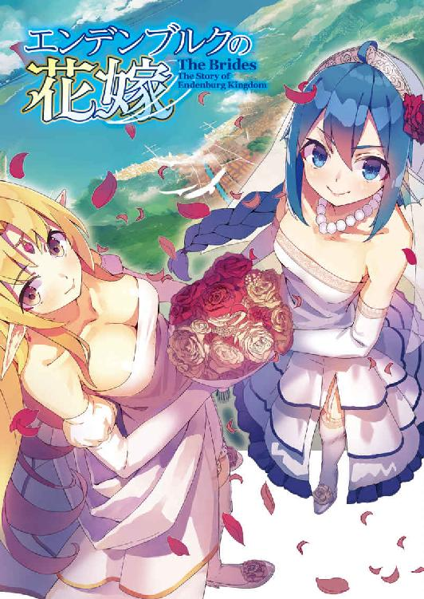
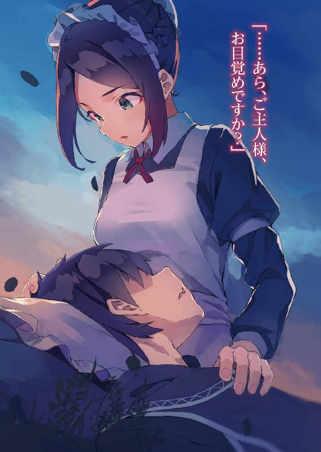
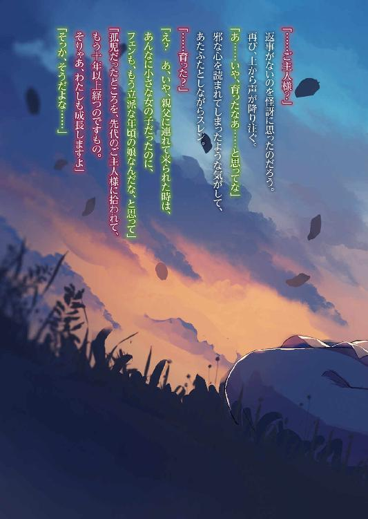
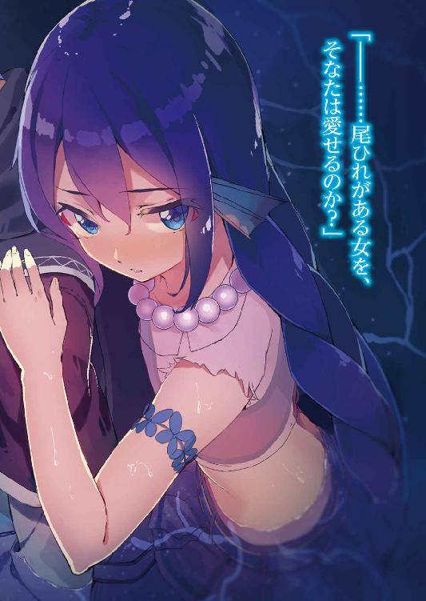
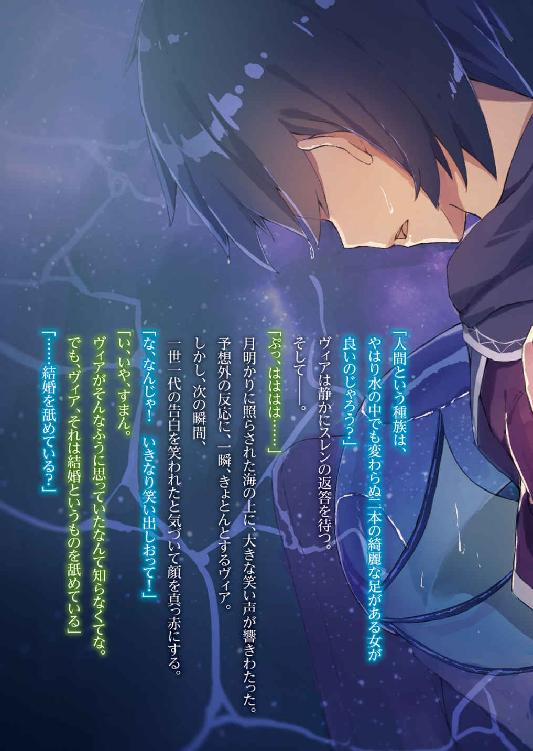
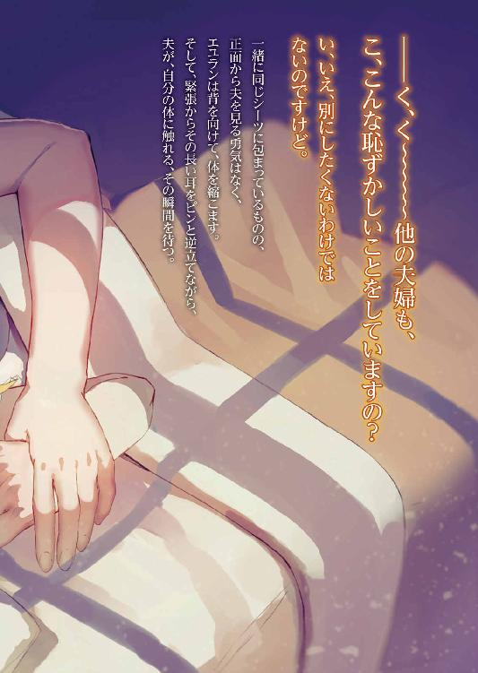
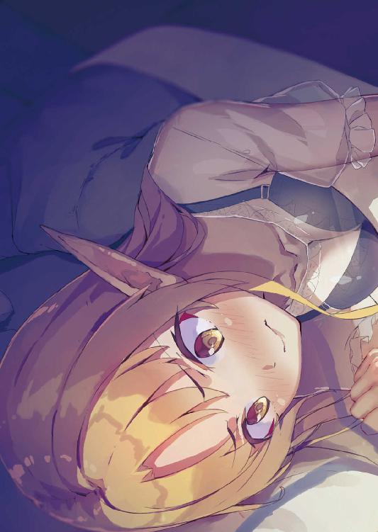
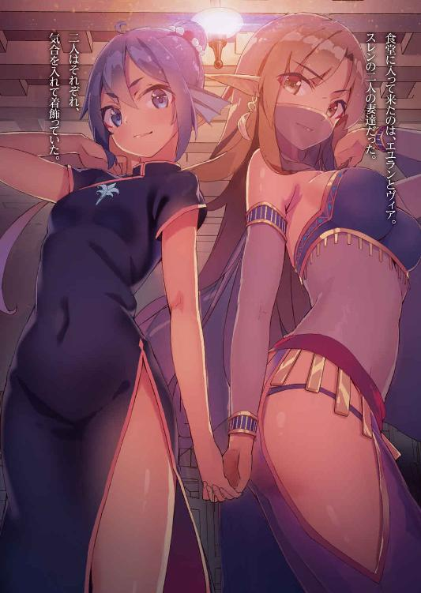
エンデンブルクの花嫁
水城みなも
電子版 ファミ通文庫
本作品の全部または一部を無断で複製、転載、配信、送信したり、ホームページ上に転載したりすることを禁止します。また、本作品の内容を無断で改変、改ざん等を行うことも禁止します。
本作品購入時にご承諾いただいた規約により、有償・無償にかかわらず本作品を第三者に譲渡することはできません。
本作品を示すサムネイルなどのイメージ画像は、再ダウンロード時に予告なく変更される場合があります。
本作品の内容は、底本発行時の取材・執筆内容に基づきます。
本作品は縦書きでレイアウトされています。
また、ご覧になるリーディングシステムにより、表示の差が認められることがあります。
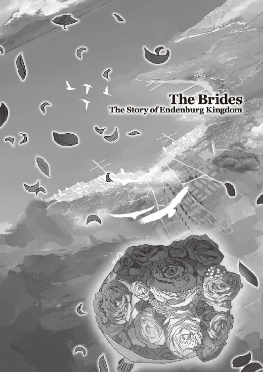
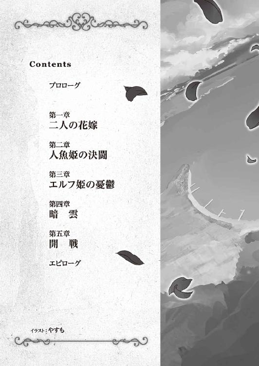
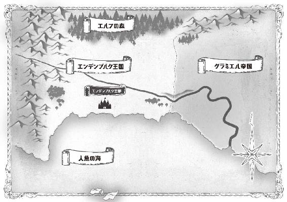
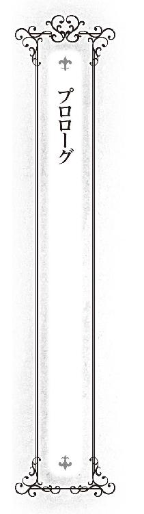
食堂の巨大な長方形のテーブルの上。
そこには食器、酒瓶などが散乱し、さぞかし掃除しがいがありそうな様子である。
そのテーブルが鎮座する、少し前までの乱痴気騒ぎなど噓のように静まりかえっている食堂の中に、メイドがいた。
若いメイドだった。
緑色の目に理知的な光を湛え、濡れたような艶やかな長い黒髪を結い上げてヘッドドレスの後方でシニョンにしている。
職業意識が高いのか、その髪型に一切乱れはなく、服装もまた隙なくメイド服を着こなしていた。
メイドは、片付ける人間の存在など考慮していない宴会の後を見て、フーと大きく溜息を吐くと、まずは床に転がっている主人を、手に持っていたトレイで叩いた。
カーンという小気味良い音が食堂に木霊する。
「......フェン、痛いんだが」
慣れない酒で朦朧としている頭を手で撫でながら、主人が起きる。
これもまた、若い主人だった。
彼の名はスレン・エンデンブルク。
その黒髪には寝癖がついて、その青い目は酒で濁り、先ほどまで床で寝ていたり、メイドに折檻を受けていたりするが、このエンデンブルク王国の国王であり、この城の城主であった。
「ご主人様、早く片付けを手伝ってください」
「メイドが、主人に命令するのか」
「それならば、ご主人様。まずは、雇用主としての威厳をお示しください。そうですね......例えば、今月のわたしの給金が遅れずに支給されるとか」
「......戦いの基本は物量だ。二人でやれば、すぐに終わる。フェン、俺は何をやればいい？」
「素直なご主人様は好きです。では、ご主人様はテーブルの皿を片付けてください」
スレンは、どっこいしょと親父臭く呟きながら立ち上がると、フェンからトレイを受け取り、テーブルの上のお皿を片付け始める。
完食されたお皿も多いが、食べ残しや、さらには全く手のつけられていない料理まである。
──......もったいないな。
とスレンは素直に思う。
テーブルの上に並んでいた料理は、普段のスレンが口にする料理よりも何倍も高価だ。
捨てるのはもったいないが、暑くなってきたこの時期、保存はできない。
一瞬、今、食べてやろうか、とも考えたが、この席に座っていた人物の顔を思い浮かべて止めた。
ブレロ外交官。
風船のようにブクブク膨れた体。
それに準じて頰の肉も垂れ下がり、絵本に出てくる悪役、オーガのようになっている顔。
その顔は常にテカテカと光っており、体中から油でもでているのか、禿げ上がった頭まで光っている。
──いっそ、オーガであってくれればいいのに。
とスレンは思わないでもない。
オーガだったのならば、思う存分、退治できる。
しかし、ブレロ外交官を妄想の中でしか退治できず、その上、訪問された時に、主賓として酒宴まで開いてもてなさなくてはならないのは、ブレロが隣国の超がつくほどの大国、グラミエル帝国の外交官だからだ。
対して、エンデンベルクは辺境の、国王がメイドに使われるような小国。
スレン達が住むこの城も、難攻不落という言葉とは程遠いような小城。
グラミエル帝国が咳をすれば、吹っ飛んでしまいそうなこの小国が、未だに独立を保てているのは、この小国が辺境にあり、遠征費用がかさんでしまうことと、辺境故の悩みを抱えていること、そして、こうした涙ぐましい接待の成果なのだ。
今頃は、客室でグーグー寝ているであろうオーガのなりそこないの顔を思い浮かべて、スレンは深夜の食堂で、涙した。
翌朝、スレンは国境沿いまで、ブレロとその取り巻きを見送っていた。
「見送りはここまででよいですよ。スレン国王」
目に隈のできた顔で、スレンは無言で頭を下げる。
このまま、ブレロはこの国から立ち去ると思いきや、立ち止まり、笑みを浮かべた。
同じ人間だとは思いたくないような、そんなイヤらしい笑みだ。
そして、ゴホンとわざとらしく咳払いをした。
何度となく繰り返されたやり取り。
その意味を──それが何の催促かは、無論、スレンには分かっていた。
「......そうでした。お土産を忘れていました」
スレンは俯きながら、そう言うと、皺が見えないほど丸々としたブレロの手に麻袋を乗せる。
ブレロは受け取ると、人目をはばかるように、すぐにその体型には似合わない外交官の制服の胸の中にしまった。
「ふひひひ。こうやって、末永く友好関係でありたいものですな」
肉が気管を圧迫しているのか、癖なのか、奇妙な笑い声を上げるブレロ。
「陛下には、スレン国王との友好、しかと伝えておきます」
「......よろしくお願いします」
もらえるものをもらうと、ブレロとその取り巻きは、用はなくなったとばかりに、すぐに国境の外へと出て行った。
──......このやり取り、何度やっても慣れないな。
二日酔いでぼんやりとした頭と、重い気分、空の財布。
招かれざる客人がやってきたときに残るのは、いつもこの三点セットだ。
こんな時は、すぐに寝るに限る。
たとえ、それが、明るいうちからであってもだ。
睡眠欲求を抱えながら、城に戻ってきたスレンを待っていたのは、メイドの明るい笑顔だった。
「ご主人様♪」
うっ、と構えるスレン。
フェンがこういう顔をする時は、何かを企んでいる時だと彼は経験的に知っていた。
「......ダメだ」
「まだ、何も言ってませんよ、ご主人様？」
「......だから、ダメだ」
「ご主人様、暴君の素質、ありありですね。人の話を聞かないなんて」
「......とにかく、ダメだ」
「完全否定ですか。せめて、話だけでも聞いてくださいよ」
「......やっぱり、ダメだ」
「今日の昼食は、城ではなく、どこか別の場所で食べましょう。今日は天気がいいので、きっと美味しいと思いますよ」
「......結局、話すんだな」
嘆息しながら、スレン。
「ほらほら、今日の昼食はご主人様の大好きな卵サンドを用意しましたよ」
フェンはそう言うと、乗り気でない主人の腕を抱えバスケットを持ちながら、彼を外へと連れ出した。
フェンがスレンを連れ出した場所。
それは城から少し離れたところにある小高い丘だった。
芝生に覆われ、遮るもののないその丘からは、城とその城下町、さらにその先にある海が一望できる。
城下町も国と同様に小さな街だ。高いところから眺めると、さらに小さく見える。
一応は首都であり、港町なのだが、二階建ての建物はほとんどなく、平屋ばかり。その材料もレンガや石ではなくて、木材が中心だ。
街に隣接する港も小さく、漁村といった方が正しいかもしれない。実際、港に碇泊する船のほとんどは漁船であり、漁業で生計を立てている住人も多い。
その小さな街の中を点々と人々が動いている。
それを見る時、スレンは、これが自分の街だ、という誇らしい気分が生じると共に、決して小さくない重圧に襲われる。
自分は彼らに、国王として何をしてやれるか。果たして、そのささやかな幸せを守っていけるのか。
「......はい、ご主人様、あ～ん」
そんな感慨に耽るスレンの横で、メイドがサンドイッチを持ちながら、口を開くように求める。
「フェン、俺は、今、割と真剣なことを考えているのだが」
「ご主人様、腹が減っては、戦は出来ないのです」
「戦争か......腹が満腹でも戦争はしたくないものだ。あと、自分で食べられるから」
スレンはメイドの手からサンドイッチを取り、かじりつく。
良い意味で食べ慣れた味が口の中に広がる。
睡眠欲求が強すぎて、食欲など湧かないと思っていたが、一度、口の中に食べ物を入れてしまうと止まらなかった。サンドイッチというあっさりとしたものだったのが良かったのかもしれない。
気づくと、スレンは瞬く間に、一つ、サンドイッチを平らげ、そして、次のサンドイッチへと手を伸ばしていた。
「ふ～食った。食った」
スレンは残った一切れを口に入れると、最後に、水筒のお茶を飲んで一息ついた。
食欲が満たされると、また睡眠欲が復活してくる。しかも、腹が満腹になっているだけに、先ほどよりも強烈だった。
「......ご主人様」
それを察したフェンは、ポンポンと自分の膝を叩く。
「......いや、さすがに」
そう断るも、フェンは強引にスレンを引き寄せる。フェンの力は強い。この細い体のどこに、そんな力があるのだろうかと、スレンはいつも思う。
そして、膝の上に頭を乗せられる。
ちょうど良い高さと弾力。
長時間外にいたためか、エプロンからはお日様の匂いがした。
睡眠欲求に支配され、靄がかかり重くなっていた頭は、抵抗することが出来ず、スレンはそのまま意識を手放した。
「......んん......」
随分と久しぶりに熟睡した気がする。
何というか、質の良い眠りだった。心まで、安らかになるような。
その心地好い余韻に浸りながら、スレンは瞼を擦りつつ、ゆっくりと目を開く。
まず、目に入ってきたのは、赤く染まった空。
そして、自分の目の前にある二つの丸いお月様。
──......お月様？
何故、二つもお月様があるのか。それもこんな近くに。
「......あら、ご主人様、お目覚めですか？」
お月様に隠れて顔は見えないが、真上から聞き慣れた声が響いた。
──あわ、わわ、あわわ......。
その声に、意識が急速に覚醒する。
それと共に、今、自分がどんな状況なのかを思い出す。そして、その目の前の二つのお月様の正体もすぐに思い当たる。
眠る前は、意識が混濁気味だったから、気にならなかったが、こうして冷静になってみると、随分と恥ずかしい状況である。
──それしても......。
あらためて、スレンは二つのお月様を見る。
いつの間にこんなに大きくなったのだろうか。
毎日顔を合わせているから、見ていないハズはないのに、なんだか初めて見たかのような錯覚をスレンは覚える。
「......ご主人様？」
返事がないのを怪訝に思ったのだろう。
再び、上から声が降り注ぐ。
「あ......いや、育ったなあ......と思ってな」
邪な心を読まれてしまったような気がして、あたふたとしながらスレン。
「......育った？」
「え？ あ、いや、親父に連れて来られた時は、あんなに小さな女の子だったのに、フェンも、もう立派な年頃の娘なんだな、と思って」
「孤児だったところを、先代のご主人様に拾われて、もう十年以上経つのですもの。そりゃあ、わたしも成長しますよ」
「そっか、そうだよな......」
言われてみればそうだ。
しかし、スレンの頭の中にいるフェンは、静かな大人しい小さな女の子のままで、なんだか不思議な気がした。
「ご主人様、城に帰ったら、わたしの膝枕代として、片付けを手伝ってくださいね」
今では、主人を使うことも厭わない、こんなにたくましい女の子に育ったというのに。
「......なあ、フェン」
「なんでしょう、ご主人様？」
「......お前、お嫁に行く──それは、まだ早いとしても、縁談とか来てたりしないのか？」
同い年のはずだから、フェンも今年で二十歳になる。
十代で嫁ぐことも珍しくないこの国では、二十歳になっても縁談の一つや二つもないのは、ちょっとした訳あり商品扱いだ。
「わたしには、実家がありませんし、持参金もないですしね」
でも、とスレンは思う。
家事全般が得意で、器量よし。街の人々からも好かれている。城の専属メイドが、彼女一人で大丈夫なのも、彼女が有能であるが故だ。
唯一、欠点をあげるとしたら、主人に対する尊敬の念が足りないことだろうか。
しかし、それを考慮したとしても、超優良商品であり、嫁の貰い手がないとは考えられない。
「それに、それを言うんだったら、ご主人様もですよ」
「......俺？」
予期せぬ、返し。
「......男の結婚する年齢は、女性よりも、けっこう上だぞ」
「ご主人様は大事なことを忘れています。辺境の小国で、たいした産業もない国とはいえど国王なんですから、その国王が未だに結婚していないのは異常です。仮に、明日、ご主人様が死んだ時、この国はどうなるんですか？ わたしは誰を新しいご主人様として擁立すればいいんですか？ ご主人様の子供を使った傀儡政権をつくり、陰から操るというわたしの野望は、どうすればいいんですか？」
「......最後のは、私欲だったな」
とはいえ、わからない話ではなかった。
スレンの家は、普通の家とは違う、王族の家なのだ。
仮に、スレンが世継ぎを残さずに、夭折した場合、一番迷惑を被るのは国民だ。
フェンの不吉な話も、危機管理の一つといえなくもない。
「ですから、ご主人様の方こそ、諦めてさっさと結婚してください。そうすれば、持参金を貰えて、わたしの今月の給金も安泰のはずです」
「..................」
長い沈黙。
先ほどのような突っ込みもない。
「......ご主人様？」
「..................」
「......もしかして、ご主人様、怒ってしまいました？」
メイドは、少々やりすぎましたか、と反省しつつ、身を屈め、主人の顔を覗きこむ。
「......そ、それだよ。フェン！」
すると、何か素晴らしい考えを思いついたかのように、主人は顔を輝かせていた。
先ほどまでの沈黙は、何か思案していたためのものらしい。
「きゃっ」
そして、スレンは膝枕されているという不自然な体勢から、彼女に抱きつく。
自分の考えに酔っているらしく、今、自分がどんなに恥ずかしいことをしているのかも気づいていないご様子だ。
「するぞ、結婚！」
そして、彼女のご主人様は、声高らかに、そう宣言した。
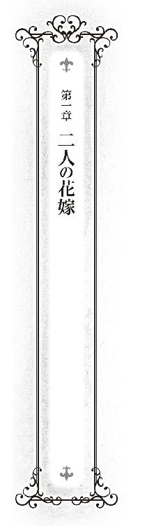
早朝。エンデンブルク国の港。
カモメがひっきりなしに鳴く中、この小さな港に似つかわしくはない巨大な帆船が碇を下ろし埠頭に横付けされた。
船からタラップが降ろされる。
まず出てきたのは、柄の悪い男達。
全員ラフな動きやすい服装で、腕は丸太のように太く、日焼けしている。一目で、水夫だと分かる。
男達は実に組織的に動いていた。
最初に上陸した二十人は恐らく、護衛兼見張りだろう。
タラップの前に立つと、船を守るようにその前に長方形の陣形を作る。全員、腰にカトラスをぶら下げたまま、その鋭い眼光を周囲に向けている。
次に上陸した八人は、工作班といったところか。
先に上陸した男達の後ろで、タラップをきっちりと固定し、後続の上陸に支障がでないようにしている。
その間、男達は無言。
余計な物音一つたてずに作業をしていた。
そのきっちりとした役割分担と訓練された様は、軍隊を思わせた。
いや、軍隊と呼ぶには、男達の放つ匂いが違った。もっと、極めて危険で非合法な匂いを放っている。
「......か、海賊だ！」
その様子を見ていた街の住人の一人が、たまらず叫ぶ。
そう、彼らの放つ匂いは、海の無法者のそれだった。
しかし、海賊にしてはおかしい。一向に襲ってくる気配はない。
街の住人達は、奇妙な客人達を、遠巻きにして固唾を飲んで眺めている。
男達が口を開かなければ、住民達も声をあげない。
奇妙な沈黙が港に下りる。
そんな中、まず男達が動いた。
最初に上陸した二十人の男達が、左右に別れ、道が出来る。
工作班もそれに続く。
その様も、見事な集団行動だった。
何事かとさらに注視する住人達。
港に、タラップを叩く靴音が響く。
また、誰かが上陸して来たらしい。
その男達でつくられた道の中から、一人の人物が出てきた。
それを見て、住民達はさらに驚き──その後、それは溜息に変わった。
何故なら、男達の中から現れたのが、絶世の美少女だったからだ。
溜息は感嘆の溜息だった。
頭には、提督が被るような大きな三角帽を被り、そこからはみ出た南国の海の色を思わせる豊かな髪を一つの大きな三つ編みにし、後ろに垂らしている。
そして、端整ながらも、やや幼さを残す顔立ちの中で、勝気そうな、くりっとしたアーモンド形の碧眼が、爛々と輝いている。
服装も独特だった。
一見、サイズが合わないように見えるシャツ。
何故、そう見えるかと言えば、露出している部分が多いからだ。
大事な胸の部分は隠しているものの、袖がないどころか肩の大部分が露出し、さらには、臍の部分も露出している。
スカートも同じで、ミニのプリーツスカートなのだが、これでもかというくらい太ももが露出している。
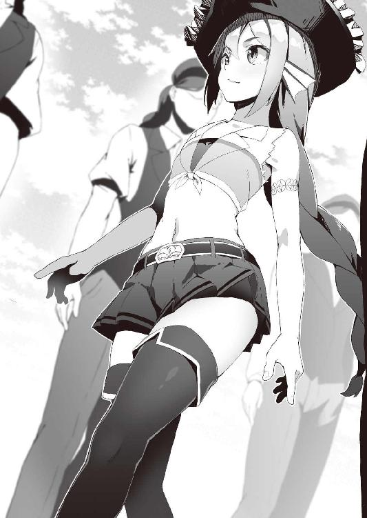
ここいらではちょっとお目にかかれない、お堅いご婦人が眉を顰めそうな服装だ。
「......ここか。エンデンブルクという国は」
少女はそう言いながら街全体を見渡す。
街の向こうに小さな城が見えた。
「一刻......いや、半刻もあれば、制圧できそうな国ではないか」
彼女の顔にがっかりしたような、そんな表情が浮かぶ。
「まあよい。わらわはわらわの役目を果たすとしよう」
彼女はそう言うと、振り返り、男達を見る。
──うむ。皆、いい面構えじゃ。
そのことに満足して、ここまでの航海を労う。
「......皆の者、ご苦労であった。わらわは、これから、わらわの婿になるという男の面を拝んでくる」
彼女がそう言うと、男達は一斉に頭を下げた。
その男達の背後では、掲げられたその船の所属を示す旗が揺れていた。
その旗には、槍を持った人魚の絵が描かれていた。
同じ頃──。
市街地の前で、馬車が一台停車した。
人目を引く馬車だった。
馬車というのは、一種のステータスである。
まず、馬車を個人で所有しているということ自体が、富裕層であることの証明である。
そして、次に問題となるのが、デザインや装飾、引く馬の質だ。
早い話が、馬車を見れば、その持ち主の経済力やセンスがある程度分かるのである。
その点、この馬車は凄かった。
木材の特性を知りぬいた職人が造ったのか、しなやかに湾曲させた木々が巧みに合わさり、機能美を含んだ優美な曲線が馬車のフレームを構成している。
塗装は初雪のような、白一色。
ところどころに、彫刻と装飾が施され、夜道を走る時に点けるランプといった小物まで豪華だ。
引いている二頭の馬も素晴らしく、毛並みもよいうえに、体軀も素晴らしい。加えて、完璧なまでに調教が施されている。
まるで、物語に出てくる夢の世界を走る馬車のようだった。
しかし、人目を引いているのは、馬車が素晴らしいからだけではなかった。
それを取り囲む男達が異様だった。
皆、一様に背が高い。
そして、その顔や肌が見える部分には化粧がしてある。
化粧──といっても、女がするような化けるためのものではない。溶け込むためのものだ、森の中に。
緑を多用した迷彩柄であり、それが仮面のように見えて、表情がわかりにくく、より一層、男達を不気味に見せている。
服装も同様に、迷彩柄だ。
だがここは森ではなく、街中のため、彼らを異様に目立たせている。
そして、海で見かけた男達同様、彼らもまた、実に組織的に動いていた。
馬車を護衛するように、その周囲に陣形を組み、背中には弓を背負って武装している。
そして、彼らからもまた、規律正しいというのに──あるいは、規律正しすぎて、どこか非合法な匂いを感じる。
「......さ、山賊だ！」
遠巻きに見ていた住人がそう叫ぶ。
そう、彼らもまた、そんな無法者の匂いを放っていた。
バタン、とやや乱暴に馬車の扉が開かれる。
こんな見たこともないような美しい馬車には、一体どんな人物が乗っているのだろうかと、住民達は物陰に隠れながら視線を送る。
そして、言葉を失った。
いや、声を発するのさえ忘れて見入ってしまった、という方が正しい。
乗っていた馬車に相応しい──いや、それ以上の美女だった。
太陽の光を集めて梳いてできたような腰まで届く長い金髪と同じ色の瞳。雪のような白い肌には染み一つなく、その顔は神話から飛び出してきた美の女神のように、美しい。
そして、特徴的なのは、その耳だった。
ピンと鋭角に尖っている。
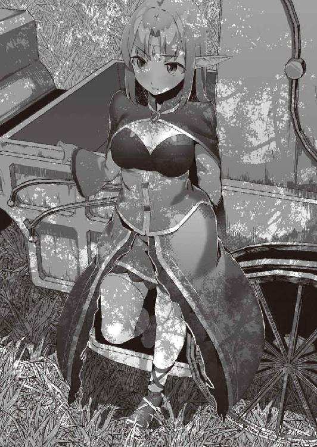
「......ここですか、エンデンブルク国は」
着ているカーディガンとローブの皺を直しながら、彼女が呟く。
「噂通り──いえ、噂以上の小さな国ですわね」
そして、長時間座っていてできた皺を直すと、あらためて街と、そして、城を眺める。
「まあ、あんな暗い森の中で引きこもっているよりはましでしょう。人形は、人形としての仕事をするだけです」
彼女はそう言うと、周囲の男達を無視して、スタスタと城へと向かっていく。
そんな彼女に対して、置いていかれた格好となった男達は、不満を述べるのでもなく、静かに最敬礼で送り出す。
その男達の中央にある馬車の上には、所属を示す旗がなびいていた。
その旗には、弓を持ったエルフの絵が描かれていた。
「......本当に来ましたよ。ご主人様」
城から、港と街の入り口を眺めていたメイドが、望遠鏡を下ろしながら言う。
「本当って......疑っていたのか、お前は」
主人が、花嫁達を迎えるために一着しかない正装を大事に着ながら言う。
「だって、人魚とエルフのお姫様ですよ。隣人と呼ぶには遠すぎる関係の方々です」
地図を見ると、このエンデンブルク国は辺境にある。
ここでいう、辺境とは、人間の国として見た場合の辺境だ。
エンデンブルク周辺の地図をさらに広げてみよう。
北側には鬱蒼とした広大な森が広がっている。ここは人間の領土ではなく、エルフ達の治める森だ。
対して、南側に目を移せば、広大な海が広がっている。ここは人魚族の棲む海だ。
エンデンブルクは、こうした二つの異種族に囲まれた土地なのである。
帝国がエンデンブルクを征服しない理由の一つの、辺境故の悩みとは、こうした異種族と国境を接していることであり、帝国は、その悩みを抱えるのを嫌っているのだ。
言い方を変えれば、異種族対策という問題を小国に押し付けているともいえる。
でもそれは、見方を変えればエルフや人魚達も同じで、大国と接するのを嫌って、彼らもエンデンブルクを征服しようとはしない。エンデンブルクは、いわば緩衝地帯として生き延びている面もあるのだ。
そんな異種族達とエンデンブルクとの関係だが、友好関係にあるとは言い難い。
それを指してフェンは隣人と呼ぶには遠すぎる関係の方々と言ったのだった。
「......どんな魔法を使ったんです？ ご主人様？」
「両方の王に手紙を書いた」
「あの気難しい方々が自分達の娘を出したんですから、普通の手紙じゃないでしょうね」
「うむ。エルフ族と人魚族はそれぞれに悩みを抱えているからな。それを利用した」
「......というと、アレですか」
人間達が、森を利用し通る時に、エルフ族が税として徴収するものがあり、同じように人間達が、海を利用する時に、人魚族が税として徴収するものがある。
それは、塩と木材だ。
森の中で暮らすエルフ族はこの生活必需品を手に入れるために、そういった措置を講じ、同じように人魚族は燃料や資材として必要なそれを、手に入れている。
税といって徴収しているものの、実際は盗賊のそれに近い。
街の住人達が、山賊だ、海賊だ、と言ったのは、全くの根拠のない言いがかりではないのだ。
また、見方を変えれば、両種族は、そんなマネをしてまで、それらを手に入れなければならないほど、その物資に困窮しているともいえる。
「手紙に書いた。結婚を承諾したら、エルフには人魚族から塩を手に入れる仲介をしてもいいですよって。人魚にはエルフから木材を手に入れる仲介をしてもいいですよって」
「......ご主人様、二つの種族を騙しましたね」
今のところ、仲介ができるほど、エンデンブルクには両種族に対する繋がりはない。
「多分、これから、できるようになるから、大丈夫だ」
「片方が拒否したら、連鎖して破綻しちゃいますけどね。それにしても、二人と同時に結婚して、大丈夫なんですか？ まあ、後継ぎを作れといったわたしにも責任はありますし、側室を持つなとは言いませんが」
「同時に結婚したのにも、理由がある」
「ああ、それが成立しないと、ご主人様の手紙に書いたブラフが、詐欺になってしまいますからね」
「それもあるが、持参金が多く貰えるからな」
「納得です。競争相手がいるとなると、相手の親は見栄を張って、持参金に色をつけますからね。それに、二人いれば、単純計算で、それが二倍です」
「それに、もう一つ、大事なことがある。保険だ」
「......保険？」
「どちらか一方だけでは、その勢力にエンデンブルクが飲み込まれる危険性があるからな。小国の知恵さ」
「キメ顔をしているところ、失礼しますが、ご主人様、大事なことを忘れています」
メイドが冷静に指摘する。
「肝心の花嫁さん達は、それで納得してくれるでしょうか？」
運命というものがあるとしたら、こういう偶然を言うのかもしれない。
森からやってきたお姫様と、海からやってきたお姫様の二人は、ほぼ同時に城の前にたどり着いた。
エルフ族のお姫様は、相手の三角帽を見て、人魚族のお姫様は、相手の美貌とその横にある鋭角の耳を見て、その正体を見抜く。
人間から見れば、異種族と一括りにされがちだが、異種族間でも色々ある。
エルフ族から見れば、人魚族など、野蛮で粗野な海賊と変わらない種族だと思っている。
人魚族から見れば、エルフ族など、傲慢で気障な山賊と変わらない種族だと思っている。
お互いが反発しあっているのだから、当然、仲が良いわけはない。
それでも、この世界で共存していられるのは、エルフ族は森、人魚族は海と完全な棲み分けができているからである。
その棲み分けがなくなった時にどうなるのか。
メイドの心配はもっともだった。
「............」
「............」
エンデンブルクは、エルフの国にも、人魚の国にも、結婚を申し込んだ。
その噂は二人とも聞いている。
この場に、その噂の姫君がいて、しかも、気合の入った服装をしているとなると、その噂は本当のようだ。
二人の初戦は、まずは、互いに気づかぬフリをして、互いに丁重に無視した。
「お二方様。お待ちしておりました」
城に着いた二人をメイドが迎えた。
そして、そのまま二人を城の中へと案内する。
二人が連れてこられたのは部屋の中に、大きな長方形のテーブルのある部屋だった。二人は、まだ知らないがここは食堂だ。
この城の中で、客人を迎えるのには、ここが一番まともな部屋なのだ。
そして、その長方形のテーブルのホストの席には、一人の男が座っていた。
身なりから、彼がこの国の国王であり、そして、自分の夫となる人なのだと、二人の姫君は気づく。
これから結婚するといっても、初対面だ。
政略結婚というのは、大抵そういうものであるし、覚悟はできていたから、今更、動揺はしないが、自然と、値踏みするような視線で見てしまう。
──......あれが、わらわが夫か。うちの若い衆の方が強そうな優男ではないか。
──......あれが、私の夫ですか。自分がバカだと自覚できないレベルのバカでなければ、それでいいです。
そんなそれぞれの感想を抱いた後、種族を代表する使者として、そして、花嫁として、口上を述べる。
「エルフの国からやって参りました、エルフの国の国王の娘、エユラン・グロッソニアと申します。此度の申し出、大変、嬉しく思います。我が父に代わり、厚く御礼を申しあげたいと存じます」
「人魚の国からやって来た、人魚族女王の娘、ヴィア・シルドラドじゃ。女王はそなたの申し出を承諾した。これからよろしく頼む」
「ああ、堅苦しい挨拶とか、いいから」
手をヒラヒラとさせながらスレンは言う。
「俺は、エンデンブルク国王、スレン・エンデンブルク。二人ともよろしく頼む」
その様子に、気さくというより、軽薄な印象を二人の姫君は抱いた。
それは無理からぬことだった。
第一印象からして最悪だったのだ。
二人の姫君に同時に、結婚を申し込む──しかも、それが互いに敵意を抱いている国の姫君に申し込む男のどこを信用しろと言うのか。
生まれも育ちも違う異種族の姫といえど、この第一印象は二人とも共通していた。
まず口を開いたのは、エルフの姫君の方だった。
「......堅苦しい挨拶はいい、とおっしゃいましたわよね？」
どこか、ひんやりとした冷たい声。
美人だけに、それだけでも、十分、迫力がある。
「え？ ああ」
「では、堅苦しい挨拶抜きで申します。......勘違いしないでくださいます？」
「......勘違い？」
「馴れ馴れしくしないでいただきたい、ということですわ。私が嫁いだのは、貴方方もご存じの通り、両国の利害が一致した結果ですわ。間違っても、貴方と仲良くしたいからここに来たのではないことをお忘れなく。大丈夫ですわ。公式の場と、書類上の妻の役目はきちんと果たしますから。なので、私生活には干渉しないでいただきたいですわ」
「......ほほう、奇遇にも、それには同感じゃ」
エユランに対して長机の向かい側に座っているヴィアが、続けて口を開く。
「わらわも同じじゃ、なにぶん、わらわは人間殿やエルフ様とは違って、育ちが悪くてのう。どうも、人間の世界の礼儀作法はよくわからぬ。だから、ここではわらわの好きにさせてもらう。じゃが、どうしてもわらわに命令したければ、その二つの細い腕で、わらわを倒してみよ。それが人魚の世界での決着のつけ方じゃ、それに、じゃ──」
視線を合わせないように座っていたヴィアが、チラリとエユランを見る。
「──この場に、山賊の娘がいるとは、わらわは大変不愉快じゃ、そなた、我が夫として、最初の仕事をせい。その山賊の娘を実家に送り返す仕事をな」
「あら？ それには同意しますわ」
あら、で唇をいやらしく歪めながら、エユランが口を開く。
「私も先ほどから、魚臭くて困っておりましたの。海賊の娘は、やはり陸で生きていくには無理があるご様子ですから、海に返してあげるのが、優しさではなくて？」
「匂いというのは、慣れじゃからな。困ったのう、山賊の娘は、自身の匂いに慣れすぎて、自分が獣臭いことに気づいてはおらぬ様子じゃ」
「......その言葉、そっくり返させてもらいますわ」
テーブルを挟んで二人の間に険悪な空気が流れる。
「武人の名誉は宮中にて、舌でやりとりするものではなく、戦場にて、剣でやりとりするもの......そなた、表へ参れ」
「......私は武人などという野蛮な肩書きはもってはいませんが、いいでしょう。望むところですわ」
二人の姫君のあからさまな敵意に、部屋の雰囲気までも悪くなりかけた時、部屋の隅で、あきれたような大きな溜息が響いた。
その溜息の主はフェンだ。
案内してから、そのまま部屋の隅で控えていたのだ。
「......では、お二方とも、このエンデンブルクの妃として、失格ということで」
「おい、メイド。失格とは何じゃ、それではわらわが負けたみたいではないか」
「............不本意ながら同感ね」
二人の姫が睨む。
「確かに、人を愛するということは個人の心の問題ですから、私共も強要はいたしません。ご主人様の子供を生んでくれとか、そういうことも無理強いしません。寝室も別の部屋をご用意いたします。ご主人様が、嫌い、気持ち悪い、触れられたくない、変な病気をうつされそう。それでも大いに結構」
「......彼女たちは、そこまで言ってなかったぞ」
小声で、スレンが悲しそうに呟く。
「ご主人様への好感度はゼロでもかまいません。ですが、お二方には、種族間の友好の証として、国民に接していただきたいのです。それは、お二方にとっても、悪くない提案のはず。お二方はその種族の代表としてここに来ているとも言えるのですから」
「......言われるまでもありませんわ」
「......それくらいなら、妥協してもよかろう」
二人の姫君は、しぶしぶといった感じではあったが、納得する。
「ご協力感謝します。ちなみに、それによって、どちらが正室か側室かを決めようかと思っていますので」
「なっ......！」
「............！」
正直、小国の国王の正室の座などに興味はない。
しかし、正室、側室に別れるということは、どちらかがその風下に立つということだ。
互いの種族に悪感情を抱いているのは、彼女らも同じ。
それがどんな勝負であれ、負けることは、彼女らの矜持が許さない。
彼女達にとってはそちらの方が大問題だった。スレンの妻となることよりも。
「あらら、その反応では、お二方は、互いに勝つ自信がないと？」
「......やりますわね。私を挑発するとは。メイド、名は？」
「フェン・ロザリンと申します。これからよろしくお願いします」
「......よく覚えて、おきますわ」
エルフの姫と人魚の姫。
二人の間の空気が変わり、牽制し合うような空気となる。
あからさまな敵意ではないところが、見ている側からは逆に怖い。
「では、そろそろ昼食にしましょう。今日は、お二人がみえるということで、腕によりをかけてつくったんですよ。人間の食事がお二人の口に合うと良いのですが」
そんな中、メイドは何事もなかったかのように動き出し、食事の用意を始める。
「フェンの料理は美味いから、多分、二人も大丈夫だと思う」
普段、それを口にしている主人がそう証言する。
それを裏付けるように、良い匂いが部屋の中を満たし始める。
体は正直なもので、ぐ～という間抜けな音が二つ重なった。
「..................」
「..................」
暗黙の了解で、一時休戦ということで、二人は合意した。
花嫁達が嫁いできた初めての夜。
それを世間一般では、初夜と呼び、甘い思い出の夜となるのだろうが、そんなことはなく、一人寂しくスレンは自室で机に向かっていた。
そんなスレンの部屋にコンコンと控え目なノック音が響く。
「......どうぞ」
とスレンが声をかけると、誰かが入ってくる。
「......こんばんは、ご主人様。寂しい夜を過ごすご主人様をメイドが慰めに参りました」
そう言うと、フェンは机の片隅に、お茶を置く。
そして、そのまま机の上を覗き込む。
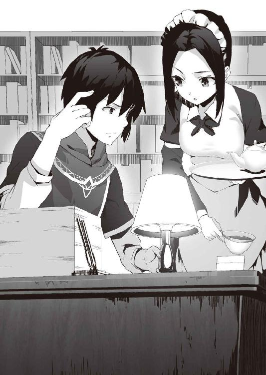
「......花嫁が来たそうそう持参金の金勘定ですか。可愛らしい花嫁より金では、これでは、しばらく一人の夜が続きそうですね」
机の上に並べられた書類の上には、目録が並んでいた。
花嫁達の持参金である。持参金なのに帳簿ではなく、目録なのは、それが現金ではなく、現物だからである。
こうした他国とのやり取りで金が必要になる場合、一般的にはこの世界で一番流通している帝国金貨で決済するのが普通なのだが、彼らは異種族の姫君達。
貴重な外貨を使わずに、現物支給という形となった。
人魚の国からは、珊瑚や真珠、鼈甲、といったものに加えて、帆船を一隻。港に泊まった船は、花嫁を運んできたと同時に、その積荷も加えてそのまま花嫁の持参金だ。
エルフの国からは、高価な薬や香木、といったものに加えて、馬車を一台。街の前に停まった馬車もまた、花嫁を運んできたと同時に、その積荷も加えてそのまま花嫁の持参金だ。
それらの目録の横に、スレンは数字を書き連ねていく。売却したときに得られる予想金額。
そう、スレンはそれらを全て売ってしまうつもりなのだ。
そして、書類の最後に並ぶ、その売却予想合計金額は、この国の数年の国家収入を軽く超えていた。
思ったとおり、それぞれの花嫁の実家は対抗意識から色をつけてくれたようだ。
「......これが、ご主人様がわたしの膝の上で思いついた策の結果ですか。どう使うんです？ このお金を使って、帝国と戦争でも始めるおつもりですか？」
「バカをいえ。臨時収入を当てにして、戦争を始めたとしても、途中で補給が続かなくなり、息切れするのがオチさ。一、二週間で占領できるほど、帝国の軍隊は弱くはないし、領土も狭くはない。この金は、他のことに使う」
キリの良いところまで進めた後、スレンはカップを手に取り、一服する。
「......祖父さん、親父達は、一生懸命に国を治めていた。才覚もそれなりにあった。それなのに、どうして、エンデンブルクは小国のままなのだと思う？」
「それは簡単です。広げようにも土地がありませんから」
「そうだ。このエンデンブルクはエルフ、人魚、帝国の三つに囲まれていて、広げようにも突破口はない。それがエンデンブルクの限界だった。そこでだ、俺は考えた。その悩みの種をなんとかできないかって」
「それで、塩と木材の仲介ですか」
「ああ、むしろ双方に囲まれていることを生かすわけだ。森に暮らすエルフにとっては、木材はそこらへんに生えているもの。海に暮らす人魚族にとっては、塩はいくらでも造りだせる白い粉。それなのに、相手側にとって、それは常に品不足状態だ。森で塩は取れないし、海で木材は取れないからな」
「なるほど、品物を左右に流すだけで我が国は大儲けできますね。ご主人様は、国王から悪徳商人に大出世です」
「......それは大出世なのか？ それに悪徳商人は違うぞ、これは三国が儲かる話なんだ」
三国が儲かるを強調する、スレン。
「必要な物資を、人魚族やエルフ族は、もっと安く円滑に、安定的に手に入れられる。そして、我が国はその中間手数料をもらえる。三国が儲かる話なんだ。結局、片方だけが儲かる話というのは、長続きせずに単発で終わってしまうからな。......親父はそれで失敗してしまった」
その両種族の品不足を利用して稼ごうと企てたのは、何もスレンが最初というわけではなかった。
前国王もまた、そこに着目して稼ごうとした。
今のスレンとは逆に、物資の流れを統制し、さらに両種族の品不足を悪化させることで、値段を吊り上げ、人魚族には木材を、エルフ族には塩を、それぞれ高値で売りさばこうとしたのだ。
しかし、それは互いの弱みにつけこんで稼ごうとした行為であり、利益は出るには出たが想定していたよりも少なかったし、長続きせず、恨みをかって終わってしまった。
当然、外交関係は悪化してしまい、その結果、責任をとる形で、前国王は退位を余儀なくされた。
若くして、スレンが王位についているのはそういう事情があったのだ。
「......懐かしい話ですね。でも、息子が、きちんと踏み台にしてくれたとなれば、お父様も天上で浮かばれるでしょう」
「勝手に殺すなよ。先日会いに行ったら、ピンピンしていたぞ」
前国王は、今は街から離れたところで、妻と共に隠居生活をしている。二人とも、国王をしていた時より、生き生きしていたのが、印象的だった。
「前国王は、二つの種族を別々に対応しようとしていた印象がありますけど、ご主人様は一つにまとめて対応しようとしている印象がありますね。それがわたしには新鮮です」
それは、スレンの器の大きさを現しているのか、それとも、無謀さを現しているのか。それはまだ、メイドにはわからない。
「そうは意識して考えたことではなかったが......結果として、そうなっただけだ。ところで、ありがとうな、昼間のこと」
それだけで、付き合いの長いフェンは何を言っているのかわかった。
「いえいえ、エルフの姫君と人魚の姫君に、ここで代理戦争を始められても困りますからね。ですが、ご主人様。わたしの提案は、結局、対処療法に過ぎません。一時の平穏を手にする代わり、問題を先送りにしただけの姑息な手です。きちんと解決するには、夫であるご主人様がなんとかしなければなりませんよ」
「そいつは、難問だ。......こうした事務仕事の方が楽なんだが」
溜息を吐くスレン。
人魚とエルフの対立の歴史は長く、もはや伝統と言っていいレベルだ。
ある程度、予想はしていたが、ここまで溝が深いとは思わなかった。
「でも、意外となんとなるかもしれませんよ。『喧嘩できる友人が本当の友人』という諺があるではありませんか」
「俺は、諺になっていれば、それが真理と思えるほど、お人好しじゃないぞ」
「では、こういう言葉はどうです？ 彼女達は今まで、本気で喧嘩できる相手に出会ってこなかった。しかし、今、初めて、その存在に出会った」
「......そういう相手が一番の理解者になり得るかもしれないということか」
少し寂しそうに、そして、羨ましそうにスレンは言った。
その理由も、フェンには分かった。
「ご主人様、権力者とは元来、孤独なものですから、友達が少ないのは仕方ありませんよ。それは、ご主人様に、人間的魅力がないからとか、決して、そういう理由ではありませんよ？」
「......そのかわいそうな子を見る目と、本気で慰めるような口調はやめろよ」
「でも、ご主人様には、わたしがいるじゃないですか」
「......俺は、喧嘩しているというより、お前に一方的に言われているだけの気がするんだが。でも、まあ、いつも感謝しているよ」
顔を背けながら、スレン。
その様子に、クスッとメイドは微笑む。
「ご主人様、おかわりはどうですか？」
そう言って、メイドは主人のカップに二杯目のお茶を入れた。
翌朝、食堂にて、スレンとフェン、それに新たに加わった花嫁二人。
その四人で、朝食を摂った後、フェンは新生活が始まるにあたって、この家で暮らしていく上でのいくつかの規則を花嫁達に言い渡した。
「朝食は七時、夜は十七時にこの食堂で原則、皆で集まって食べます。お昼は各自、ご自由に。無論、この家で食べてもよいです。その時は、ちゃんと用意しますから」
「了解じゃ」
「わかりましたわ」
頷く二人の花嫁。
メイドに歩み寄る姿勢を見せているのは、初日で既に、この家の最高権力者が誰なのか見抜いたのと、そして、その作る料理が美味であることが分かったためだ。
異国に嫁いできて、見つけた数少ない楽しみを奪われ、補給線を絶たれるのは、この二人といえど、きつかった。
「それ以外の時間は、基本的に何をしていても、どこにいても構いません。お約束通り、わたし共は干渉いたしません。ですが、だからといって、ご主人様の妻として、種族を代表して来た姫として、品位を欠くような振舞いは慎むようにお願いします」
「......当然じゃ」
「......ご心配なく」
「洗濯物がある場合は、朝、出すようにしてください。ただし、天気によってはお断りするかもしれません」
「............」
「............」
二人の姫が少し警戒するようにスレンを見る。
洗濯物を無警戒で出すレベルには信頼を得ていないらしい。
「大丈夫ですよ。下着などはご主人様の目に触れないようにしますし、ご主人様のものと一緒に洗わないようにしますから」
二人の妻が露骨にホッとした表情をしたのを見て、夫は少々傷ついた。
「......最後に、一つ残念なお知らせをしなければなりません」
「なんじゃ、申してみよ」
「薄々は分かっていると思いますが、我が国は大変窮乏しております。そのため、お二人の結婚式なのですが、財政が安定するまで、延期という形にさせていただきたいのですが」
「そうか」
「そうですか」
花嫁二人に特に残念な様子はなく、淡々と食後のお茶を飲んでいる。
「あらら？ 人生の晴れ舞台だというのに、残念がらないのですね」
「わらわは、虚礼は嫌いなのでな」
「別に、式を挙げてもらえないことなんて、気にしておりませんから。お金の節約になって、ちょうど良いではありませんか。ねえ、ケチな婿殿？」
「え？ あ、うん」
立つ瀬がないとはこうゆうことをいうのか。
同意を求められ、小さくなりながら頷くスレン。
気にしてない、とは口では言うものの、内心、不快感を覚えているのは、感じられた。
恥をかかされた、歓迎されていない、ぐらいは、多少なりとも、思っているだろう。
「話は、それ以上はないようですね。では、私は出かけますので」
「わらわも出かける」
二人はお茶を飲みきると、席を立った。
一瞬、二人の目が合う。マネするなとばかりに。
「............」
「............」
しかし、すぐに目を逸らすと、まるで競争するように、一つしかない出入り口目指して、ずんずんと歩いていった。
彼女達が出ていった後、バタンとドアがやや乱暴に閉じられ、室内にはやや重い空気が残される。
「......ケチか」
そんな中、ぽつり、と溜息と共に、どこか自虐的にスレンが言う。
彼女達は持参金の額をある程度は把握している。それなのに、式が挙げられないとは、余程のケチだと思われただろう。
「よいではありませんか。ケチだと思われると、色々と得ですよ」
「そうなのか？」
「ケチと呼ばれる人から貰えたお金は、同じ金額でも、普通の人から貰うお金よりも価値があるように感じます」
「......マイナスからのスタートだと過剰に評価されるという現象か。不良が親孝行をすると、世間で過剰にもてはやされるのと同じ理屈だな」
「それより、わたしは心配しているんですよ。それで、ご主人様の決心が鈍ったり、躊躇いが生まれたりしないかって。中途半端が、一番いけません」
「まさか。多少、悪口を言われたからといって止めるくらいなら、初めからやらないさ」
「はい。それでこそ、わたしのご主人様です」
「この後、出かけるぞ。そのケチな婿殿がお金を使いに」
まず、スレンとフェンが訪れたのは、街の外れにある関所だった。
街道を跨ぐように設置されており、その街道の先にあるのはエルフの住む森。
いわばこの関所は、国境を監視するために設置してあるものだった。
そして、関所には、もう一つの仕事を任せている。
「おや、若様、貯まった通行税を取りに来たのですか？」
口元に蓄えた白髭を揺らしながら、軍服を着た老人が言う。
そう、通行税の徴収だった。
塩の例もあるとおり、エルフといえども、森で完全に自給自足というわけにはいかない。そのため、必要となる物資を人間の街に買いに来る時がある。
ここはそういうエルフ達に対して通行税を取ることを目的として作られた関所でもあった。
「ロバート、いや違う。その逆だ」
「逆、ですと？」
はて、と老人は首を傾げる。
「通行税の徴収を止め、そしてこの関所も廃止する」
「............」
老人は、意味を嚙み締めるように、しばし沈思する。
そして、その伸びていた背筋が、年相応に、ガクリと折れ曲がる。
「......若様、もう、この老兵はお払い箱ということですか」
「いや、違う。それどころか、ロバートの力を借りたいんだ」
スレンはそう言うと、持ってきた地図を広げる。
そこには、既存の地図の上に新しく平行した二本の線が描かれている。
「先日、エルフの姫君がこの関所を通ったのを、ロバートも見送っただろう？ エルフとの同盟がなったんだ。だから、今度はその往来を活発にしたいんだ」
「そのために、関所を廃止し、街道を整備、拡張すると？」
目を細め、ロバートは地図を見て、うーんと唸る。
「しかし、これでは、いくつかの家には立ち退いてもらわなくてはなりませんな」
スレンの持ってきた地図の上には、すでにその家を貫通して新たな道が描かれているが、実際にそうするのは簡単ではない。
「だから、ロバートの力が必要なんだ。長年ここに勤め、地理に明るく、周辺住民の信頼も厚い。俺から言うと、どうしても目線が上からになるから、反発も起きるが、ロバートの言うことなら、住民達も、耳を貸してくれると思う。だから、どうか、この仕事を頼まれてはくれないか？」
スレンはロバートを工事監督とする任命書と、そして、昨夜書いた持参金の目録の一部を渡す。その目録に記されているのはヴィアの実家からもらってきた方だ。エルフの森に近いこの周辺では高く売れるはずだ。
「任命書と、工事費用だ。今まで徴収して集めた通行税も、それに使ってくれ。周辺の村々に募集をかければ、それなりに人手が集まると思うが、足りないようなら、エルフにも募集をかけてくれ。エルフには話がついている」
ロバートは国境沿いに長年勤めているため、エルフにも顔がきく。
「......若様、感激であります。このロバート、最後のご奉公として、やらせていただきます」
「それは、困るよ。ロバートには、まだまだ働いてもらわないとダメなんだから」
帰り道。
豆粒ほどの大きさになっても、未だに敬礼しているロバートを見ながら、スレンとフェンは言葉を交わす。
「よろしいのですか、ご主人様？」
「ロバート本人は認めたがらないが、彼の適性は、武官よりも文官だ。ロバートなら、やり遂げてくれるさ」
「人選の問題ではありません。国境警備の問題です。確かに、エルフと条約を結んだことは事実ですが、それは人と物の往来を活発にする通商条約であって、平和条約ではありません。ご主人様は、国境を無防備にするおつもりですか？」
「お前は、老人一人に、敵を防がせるつもりか？」
「そういうわけではありませんが、街道を整備、拡張するのも危険です」
今まで街道を整備してこなかったのは、なにも予算不足だからという理由だけではない。
国境近くの街道を整備しないのは、それはいわば防衛上の常識だからだ。
街道を整備すれば、それだけ他国の軍隊に攻められやすくなるわけで、むしろ、川に橋を架けなかったり、曲がりくねった悪路だったりした方が良いとされている。
フェンの懸念はもっともであった。
「いざとなったら、最後の手を使うおつもりですか」
最後の手。
エユランを人質にすることを暗にフェンは言う。
それに対して、スレンはさりげなく否定するように、笑いながら答えた。
「どっちにしろ、敵が本気で攻めてきたら勝てないから、大丈夫だ」
次に、スレンとフェンが訪れたのは、港であった。
木製の粗末な埠頭の端に、この港に似つかわしくない帆船が停泊している。
ヴィアが持参金として持って来た船だ。
その船を感慨深そうに見ている男がいる。
体の線は細く、肌も白い、伸ばしている青い髪も長く、一見、女性と見紛うほどの美青年だ。しかし、なよなよした印象がないのは、その青い目の眼光の鋭さのためだろう。
青年は、背後にいるスレンとフェンに気づくと、振り返り、恭しく頭を下げようとした。
それをスレンは手で制す。
「いいよ、ルートフィ。やはり、船は懐かしいか？」
そして、スレンは青年──ルートフィの隣まで来ると、一緒に船を見上げた。
「正直に言って、そうですね。良い船を見ると、やはり心が躍ります」
「この船を売ろうと思っているんだが、どう思う？」
「人間で、この船の価値が分かるのは少数ですから、よほど高値で売れない限りは売らないほうがいいでしょう。この船は私がいた頃にはなかった最新鋭の船です。恐らくは軍艦を速度重視で再設計したものでしょう」
「ふむ......でも、売却するしかないな」
「......どうしてです？」
「エユランの馬車を売るのに、ヴィアの船を売らないでは、家の中が荒れる可能性がある」
ルートフィは、思わぬ言葉に、一瞬、虚を衝かれたような顔をした後、家の中でのスレンの立場を思い浮かべたのか、くすりと笑った。
「......ルートフィ、話は聞いていると思うが、人魚族と話はついた。ルートフィの名誉も回復させた。一応、帰国することもできるが......」
今までの会話から察せられる通り、ルートフィはエンデンブルクの生まれではなく、人魚族であった。
人魚族、エルフ族、それぞれの種族同士の結束は固い。が、中にはそれに馴染めなかったり、何か理由があったりして、出て行く者もいる。
しかも、そういった人物は、出身種族から見れば、その結束の固さ故に、そこからはみ出した裏切り者と見なされ、容易に戻ることはできない。
エンデンブルクは、非公式にだが、そういった行き場を失った人物達を受け入れている。
ルートフィも、そんな一人だった。
「お気持ちはありがたいのですが、今更、戻ったところで、私の居場所はもうないでしょう」
そう言った後、ルートフィは自分の細い腕を叩いた。
「それに、あそこは、ここがものを言う世界ですからね」
「......ああ、俺も姫君に決闘を申し込まれたよ」
苦笑しながら、スレンは言う。
「こんなことを言うと、ルートフィにとっては不本意かもしれないが、残ってくれると聞いて安心した」
エンデンブルクが、外交問題に発展しかねないリスクを伴ってでも、いわば異種族の亡命者を受け入れている理由。
それは、何も慈善だとか、道徳心からだけではない。
「資金が調達できた。これでやっと、ルートフィに働いてもらうことができるな」
彼らが持つ技術。
それを目的としてだ。
現在、この世界の技術は偏っている。
例えば、他の種族に比べて、エルフは木工技術に突出しているし、人魚族は製塩技術に突出している。
その技術の偏りは他の種族に対して閉鎖的というのもあるが、技術は独占することで価値があることを知っているからだ。
そして、彼ら異種族にとっては、何でもない技術が、人間にとっては大変価値のある技術というのが少なくない。
そういった技術を吸収するために、表向きは否定しているが、いわば公然の事実として、エンデンブルクは彼らを受け入れている。
「......私の方こそ。これで、やっと、スレン様のために働くことができます」
「ルートフィ、港の拡張、整備を頼む。あと、余裕があれば、商船の建造も。大型船舶も停泊できるような、巨大な港にしてくれ。これが辞令と資金だ。この国に住んでいる他の異種族にも、手伝うように頼んでおいてある」
スレンは任命書と、昨夜書いていた持参金の目録を渡す。その目録はロバートとは逆に、今度は、エユランの実家からもらった方を中心に書かれている。
「はい。彼らもまた、先代、そしてスレン様の恩徳を施された者達です。喜んで手伝うでしょう。我々の手で、この港をこの地方随一の港にしてみせましょう」
二箇所まわると、既に日は落ち始めていた。
湾内に落ちようとしている夕陽に照らされながら、スレンとフェンは城へと急ぐ。
「......これで、一応、流れはできるハズだ」
「......流れ、ですか？」
「塩や木材だけでなくて、閉鎖的な性格を持つ両種族はそれぞれ、生かしきれていないものがあった。人魚族は、その海というどこへでも通じる道があるのに、それをそれほど活用していない。人魚族の領土である、海、それにいくつかの小島からでは、交易品となるものは限られるからな。対して、エルフ族は、その手先の器用さと自然科学の知識で、質の高い製品を作り出せるのにも拘わらず、その交易先は限られている。エルフ族の領土である、太古の森に接する国は限られるからな。なあ、フェン、この二つが合わさったら、凄いことになると思わないか？」
「......確かに、金の匂いはプンプンしますね」
こくん、と頷くスレン。
「そうだ、その金の匂いに誘われて人が集まる。人が集まるところには、需要が生まれるから、それを満たそうと金が集まる。その金の匂いに誘われて人が集まる。......この流れだ。両種族を仲介しているエンデンブルクに、この流れを造るんだ。それが、一度できてしまえば、自然と国庫にも金が集まるはずだ」
「やっぱり、ご主人様には悪徳商人の才能がありますね」
「悪徳商人にもなるさ」
「......あ、ご主人様、開き直った」
「農業はどうしても土地に左右される。その土地をこれ以上広げることができないエンデンブルクが、農業で発展していくには限界がある。エンデンブルクが発展するためには、商人として、生き残っていくしか道はないさ」
「......でも、これで、お姫様達にもらった持参金、なくなってしまいましたね」
「初期投資はどうしても高くなるが、街道や港といった人や物の流れをスムーズにするための施設は必要だからな。仕方ないさ」
「......お金、なくなっちゃいましたね」
「......？ そうだが？」
何故、二回も、同じようなことを言うのか。
そう考えた次の瞬間、スレンはハッとする。
「あ、いや......すまん」
そして、申し訳なさそうな顔になる。
「お前の今月の給料の分をとっておくのを、忘れてた」
「思い出してくれれば、それでいいです。わたしはご主人様のそういう部分を補佐するのも仕事だと思っていますから」
メイドはそう言うと、主人より先に歩き出す。
「さあ、お家へ帰りましょう。もうすぐ、夕食の時間です。二人の可愛らしい花嫁さん達が待っていますよ」
「......待っているのは、お前の料理だろうけどな」
主人は、少々自虐的にそう言うと、メイドの後に続いた。
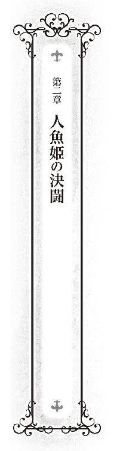
太陽が昇ると共に目を覚まし、沈むと共に寝る。
故郷で、そんな生活を送ってきたヴィア・シルドラドの朝は早い。
「......ううん」
ヴィアは目を覚ますと、軽く欠伸をしてから、目を擦る。
海に居た頃は、ハンモックの上で寝ていたのだが、ベッドという、揺れない寝床にも慣れてきた。
いや、ベッドだけではない。
見上げた天井も、この私室として与えられた小さな部屋の風景にも慣れてきた。
人間の生活に、そして花嫁としての生活に染まる気はなかったが、体の適応力は上手くできているらしい。
ヴィアは寝癖のついた自慢の髪を手で梳きながら、寝巻きから普段着に着替えると、食堂に向かう。今日は式典に類するようなことは何もないため、正装の帽子は部屋に置いたままだ。
「あ、おはようございます。ヴィア様」
食堂に入ると、すでにメイドのフェン・ロザリンが、朝食の準備をしていた。
「............」
起床時間を競っているわけではないが、すでにフェンが起きていることに、ヴィアは少々驚く。
それにこのメイド、ここ数日ともに生活したところ、その仕事ぶりは申し分ない。
密かに目をつけ、実家に帰ることになったら、このメイドをスカウトしようと心に決める。
「......？ どうしました？」
「......なんでもない」
ヴィアはそう言うと、自分の席に着く。
やがて、他の住人も起き出してくる。
まず、入ってきたのは、エルフの姫君、エユラン・グロッソニア。
尖った耳をピンと立てながら澄ました顔で入ってきて、テーブルを挟んで向かい側の席に静かに座る。
その間、お互いにガン無視。
お互いに、朝食前に、無駄な労力は使いたくはない。
「ふああ～～......」
そして、最後に欠伸と共に入って来たのが、二人の姫君の夫、この国の国王、スレン・エンデンブルク。
しかし、夫といっても、形だけの夫だ。
四人そろうと、いただきます、と声をそろえる。
こうして、一日を始めるのにも、だんだんと慣れてきた。
街を見下ろす高台に築かれているエンデンブルク城では、朝、奇妙な現象が起こることがある。
この日もまた、朝食後、城を出ようとしていたヴィアはそれを発見し、その前で足を止め、そのおかしな現象を眺めていた。
城門の前。
そこには、人参やジャガイモが積まれていた。
「なあ、そなた。何故、この城の前には、朝、いつも野菜が置かれておるのじゃ？」
同じく城を出ようとしていたスレンに、彼女は問いかける。
「ああ。近くの農家さんが、採れすぎた野菜を分けてくれるんだ」
それが当然のことのように、スレンは言った。
「納入を任せているとか、税として取り立てているとかではないのか？」
ヴィアがそう言うと、スレンは不思議そうな顔をした。
「............」
言葉を失うヴィア。
ヴィアの沈黙を感心しているものだと思ったのか、スレンは胸を張って、言葉を続ける。
「意外と、慕われているだろう？」
「......必要以上に畏怖される必要はないが、王には、もっと威厳が必要ではないのか？」
農家に野菜を恵んでもらっていることを喜ぶ王に対して、ヴィアは溜息を吐いた。
これから巡察に行くというスレンと別れると、ヴィアは日課を行うために海へと向かう。
と、その途中。
「......姫様」
街で呼び止められる。
無論、数日前にこの街に来たばかりのヴィアに、この街での知り合いは、ほとんどいない。そもそも、人間の知り合いなど、メイドと、かの威厳のない夫ぐらいだ。
しかし、王族というのは、いわば庶民にとっての身近なアイドルであり、すぐに噂が伝達されるこの田舎町では、すでにヴィアは街の有名人となっていて、住人達に一方的に知られている。
そのため、街を歩いていると、時折、こうして声をかけられる。
この現象は、人間の国が特別ということではなく、彼女の実家の国でもあったことだ。
正直、それは見世物にされているようで、愉快とはいえない。
しかも、そうやって気軽に声をかける人間ほど、彼女を見世物として見ているとは自覚しておらず、さらに勝手に幻想と期待を抱いて、それが裏切られたと感じるや、汚い言葉を投げつけてくるのだ。
それは王族にかかる税金みたいなものだと思って、彼女はあきらめている。
というより、あきらめざるを得なかった。何しろ、彼らは一方的な知り合いなので、こちらからは何も言うことができない。
心の中で嘆息しながら、ヴィアは声をかけられた方へと振り向く。
声をかけてきたのは、軒先に座っているお婆さんだった。
年齢とともに刻まれた顔の皺を深くしながら、孫を見るような目でヴィアを見ている。
そして、ヴィアを手招きしていた。
「......？」
何だろうと思い、近づくヴィア。
すると、お婆さんは、あるものをヴィアに手渡した。
「......感謝する」
不器用な口調で礼を述べると、お婆さんは満足気に頷いた。
そして、彼女と別れると、再び、海を目指し歩き出しながら、ヴィアは自分の下腹部を見つめる。
「............」
ヴィアは複雑な表情となる。
そこには、いつものように可愛いらしいお臍は見えておらず、代わりに腹巻が巻かれていた。
あのお婆さんからの手作りのプレゼントである。
あの年代のご婦人は、自分の子供や孫を幼く見る傾向がある。彼女も御多分にもれず、孫にプレゼントを贈る感覚で、ヴィアに贈ったその腹巻は、デフォルメされたお魚さんが描かれた、子供が喜びそうなデザインだ。
『女の子が体を冷やしちゃダメよ』
その言葉と共に、お婆さんから手渡された。
いつも、露出した部分が多い服を着ているヴィアを気遣ってのものらしい。
人魚は海に棲んでいる。
海は陸地よりも気温が低いので、そこに適応している人魚は人間よりも体温が高い。
だから、こんな格好をしていても大丈夫。
そう、何度も説明したのだが、聞き入れてもらえなかった。うんうん、何度も頷いていたハズなのに。
結果こうして、子供が着るような腹巻をしながら、街中を歩くことになった。
案の定、街の人が、少し驚いた顔で見ている。
──......何かの罰ゲームのようじゃ。
ヴィアはそう思った。
無論、プレゼントをくれたお婆さんの脳裏にそんな意識は一欠片もなく、よかれと思ってしたことだ。今頃は、良いことをしたという気分に浸っているだろう。ある意味、百パーセント純粋な好意ほど怖いものはない。
脱げばいいのだが、そうしたら、あの嬉しそうな顔を曇らす気がして、脱ぐことができない。
結局、人魚の姫はそうした羞恥に耐えながら海まで歩いていった。
港から離れたところにある砂浜に辿り着くと、ヴィアは目を閉じながら、大きく息を吸い込む。
鼻腔をくすぐる潮の香り。
命の鼓動にも似た波の音。
吹きつける強めの風。
目を閉じ、過敏になった体で感じるのは母なる海の気配。
体は正直だ。それだけで、二本の足が甘く疼き出す。
ヴィアは目を開けると、その衝動に誘われるままに、履いていたサンダルと腹巻を脱ぎ、風に飛ばされぬようにその上に重しとして石をおいてから、海の中へと飛び込んだ。
彼女が露出過多な服装をしているのは体温が高いためだけではなく、それは、そのまま水着とするためでもある。
海に入ると脱がなかった服とミニスカートが濡れ、べったりとその痩身に張り付く。
そして、そのミニスカートの下から伸びる足が、水に濡れたことに反応し、変化し出す。
二本の足の形が段々と崩れ、やがて一本の大きな足となる。その表皮は目の細かい瑠璃色の鱗に覆われ、先端には巨大な三角形の尾ひれがついている。
その姿はまるで、下半身だけが魚になったよう。
そう、この形態こそが海に棲む本来の人魚族の姿であり、その名の由来となった姿であった。
ヴィアは完全に人魚の形態となると、その尾ひれを躍動させる。そのスピードは人間や小魚の比ではない。
スピードを出して泳いでいるといっても、何か目的があって、泳いでいるわけではなかった。
強いて言えば、泳ぐこと自体が目的。といっても、ただ泳いでいるのではない。
限界まで尾ひれを動かし、そのスピードを舌なめずりしながら味わうのだ。
高速で切り替わる景色。全てが止まって見えて、自分以外のものが静止した世界にいるように感じられてくる。
最高速度に達すると、厚くなった水圧が、触れるものを弾き飛ばそうとでもするように、自分の全身をガンガン叩く。それが震えるほどに気持ちいい。
──この感覚、陸の者には分からぬであろうな。
陸の者に対して、そんな優越感を抱きながら、ヴィアは人魚の縄張りである海の中を、優雅に、そして、力強く泳ぎ続けた。
そんな風にして日課となっている遠泳をした後、ヴィアはもといた海岸まで戻ってきて、海面に仰向けになり、今度は逆にのんびりとプカプカと体を浮かべていた。
激しい運動の後で疲れた体。しかし、それは心地好い疲れであり、体は重くなく、むしろ軽くなったように感じる。
それとともに、心まで軽くなった気がする。
自分では常に自然体のつもりでいたが、異国の地に一人でいるうちに、知らずしらずに肩には力が入り、心は構えていたらしい。
やはり、海は人魚の故郷なのだ。
そこでは陸よりも自然体でいられる。
と、その時、彼女は自分に向けられる視線を感じた。
視線を感じた先を見ると、浜辺に、おかっぱ頭の七、八歳くらいの白いワンピースを着た女の子が立っていた。
その女の子はキラキラと目を輝かせながら、ヴィアを見ている。そして、その視線は主に、その瑠璃色に輝く下半身に注がれている。
どうやら、人間の自分にはないこの尾ひれに憧憬を抱いているらしかった。
「......一緒に泳いでみるか？」
機嫌の良いヴィアは戯れにそう誘ってみる。
声をかけられ、女の子は一瞬、驚いた顔をしたが、すぐに、
「......うん、うん、うん」
と何度もそのおかっぱ頭を上下させた。
「そなた、名は？」
「......ミリアム」
女の子──ミリアムは波打ち際まで来ると、自分のワンピースに手をかけながら固まる。
脱ぐかどうか迷っている。
人魚の世界では、ヴィアの普段着のような露出過多な格好でそのまま泳ぐことも珍しくないが、人間の世界では、そのような格好ではなく、もっと肌を見せない水着で泳ぐ。
「そのままで、良いぞ。今日は天気が良いから、すぐに服も乾くであろう」
頷くミリアム。
ミリアムは靴を脱ぐと、海の方へと歩いてきた。
彼女の足に海水が触れ、それは次第に深さを増していき、やがて、彼女の首の高さを追い越し、そして──。
「............うぷっ」
という声を残して、そのまま沈んでいく。
「......泳げぬなら、泳げぬと先に言え！」
ヴィアはそう叫ぶと、慌てて救助に向かった。
「そうじゃ。足を交互に上下させて水を蹴る......そう、いい調子じゃ」
海中でヴィアはミリアムの手を引きながらゆっくりと後方に下がる。
手を引かれながらミリアムはヴィアの教え通りに、バタ足をして、少しずつ前へと進んでいく。
ヴィアは成り行きで、ミリアムに泳ぎ方を教えていた。
「重要なのは、陸で歩くよりも重心をやや高い位置で一定に保つことじゃ。そうすれば、体が勝手に浮いてくれる。力んでその位置をずらさないように気をつけろ」
こくん、と頷くミリアム。
子供の物事の吸収力はスポンジのようだ。また、逆に超がつくほど初心者で、変な癖がついていないのがよかった。
驚くほどに上達が早く、次々にヴィアの教えを会得していくのに、そう時間はかからなかった。
──もう、そろそろ、よかろう。
ヴィアは、そう判断すると、ゆっくりと牽引していた手を離す。
ミリアムは、一瞬、不安そうな顔をしたが、すぐに表情を引き締めると、ヴィアの教えを忠実に守りながら泳いでいく。
その進路を空けるために、横に退きながらヴィアは、ミリアムを見守る。
ミリアムは、そのままヴィアの牽引がなくても泳ぎ続け、そして、十分に泳げるようになったことをヴィアに証明するように、長めの距離を泳いだ後、適当なところで止まり、遠くにいるヴィアに向けて得意げな顔しながら、嬉しそうに手を振った。
それにヴィアも手を振り返す。
──なんじゃ、人間の子供も、人魚の子供も変わらぬのう。
ミリアムの無邪気な表情を見ながら、ヴィアはそんなことを思う。
──......あと、ご老人も。
海岸に置いている腹巻が、風で飛ばされていないのを横目で確認しながら、そう付け加える。
人魚の人間に対しての印象は、正直、良くはない。
人間は狡猾で残忍で凶悪な存在だ。人魚が人間に捕まれば、殺されて干物にされた後、切り刻んで薬にされてしまうか、見世物小屋に売られ、一生、狭い水槽に閉じ込められることになる。
これは悪意の尾ひれを生やした噂だとしても、だいたいの人魚の人間に対してのイメージはそんなものである。
ところが、どうだ。
自分が接した限りでは、人間と人魚はそう変わらないように思える。
自分が、人魚の中でも特別な、この国に嫁いできた姫であることを差し引いても、街の人は親切に接してくれる。
これでは、勝手に心の中に壁を造り、籠城しようとしていた自分がバカみたいだ。
「......お姫様、どうしたの？」
考え事をしていたら、いつの間にか、ミリアムが傍へと戻ってきていた。
「......ちょっと、考え事をな」
そのおかっぱ頭をごしごしと撫でる。
目を細めながら嬉しそうなミリアム。
もう、すっかり懐いている。
「......王子様のこと？」
「......王子？ スレンのことか？」
こくん、と頷くミリアム。
正式にはもう即位しているので、国王が正しいのだが、若い国王は街の人々にとっては、まだまだ王子という感覚らしい。
「確かに、あやつには王としての威厳が足りぬからのう。王子の方が似合いじゃな」
ヴィアはそう言うと豪快に笑った。
「じゃが、何ゆえ、わらわがスレンのことを考えていると思うのじゃ？」
「お姫様は、王子様のお嫁さんだから」
「......うっ」
ヴィアは複雑な表情になった。
直線的で単純な子供の考え、というだけではなく、多分、それはミリアムの願望も含まれているのは容易に想像できた。
ヴィアが客人としてではなく、本当のお嫁さんとしてこの国にいて欲しいという。
「......お姫様、王子様、嫌い？」
ヴィアの反応を鋭く察したミリアムが、おずおずとそう尋ねる。
どちらかといえば、今現在そうなのだが、子供の無垢な上目遣いを前に、そう言えるほど、ヴィアは悪人ではなかった。
「いや、まあ......頼りなく、軽薄なところがあるが、嫌いではないぞ」
「......じゃあ、好き？」
「それは......──」
ミリアムがキラキラと目を潤ませながら、何か期待するような眼差しで見上げている。
それを裏切れるほど、ヴィアは大悪人ではなかった。
「──あ、ああ、好きだぞ」
ミリアムの顔が綻ぶ。
──......子供には勝てんな。
その顔に苦笑しつつ、そう思う。
「そろそろ、海から出るぞ。夕暮れまでに、服を乾かさなければならん」
持参してきたシートの上に、二人で寝そべりながら、砂浜で日光浴をする。
もう少ししたら、日光浴どころか干物になりそうな光線が降り注ぐのだが、今の時期はちょうどよく、温められた砂と相まって、体がポカポカとして気持ちいい。
濡れた服もすぐに乾いていく。
「あ、王子様だ」
ヴィアと一緒に寝転んでいたミリアムが体を起こす。
ミリアムの視線の先を見ると、確かに、スレンがいた。
港を巡察に行った帰りなのか、嬉しそうに魚を持って歩いている。恐らく、朝の野菜と同様、漁師に恵んでもらったものだろう。
「王子様～～！」
ミリアムが手を振る。
二人を認めて、少し驚いたようなスレンの顔。
が、すぐに笑みをつくるとミリアムに向かって手を振り返す。
そして、何を思ったのか、こちらへと近づいてくる。
──......ん？
不意に、ヴィアの野生の感に、何かが引っかかった。
なんだか、とてつもなく、嫌な予感がした。
「お、おい、ミリアム、先ほどのことは絶対に秘密に──」
彼女がそう呼び止める間もなく、スレンに駆け寄るミリアム。
追おうにも、未だ下半身は尾ひれのままだ。子供の足といえど追いつくことはできない。
ヴィアがもがいている間に、スレンのもとへミリアムが辿り着く。スレンは屈みこみ、視線をミリアムに合わせる。
「珍しい組み合わせだな。何を話していたんだ？」
ミリアムは、はにかんだ笑顔を見せる。
「......王子様、耳を貸して」
「......ん？」
首を曲げ、顔を寄せるスレン。
内緒話をするために、スレンの耳に唇を寄せるミリアム。
ミリアムが何事か囁いた後、スレンは驚きの表情になり、さらに、その顔はみるみる真っ赤に染まる。
真っ赤な顔のまま、ぎこちなくヴィアを見やる。
その顔を見て、ヴィアはミリアムが何を言ったのか気づく。
自分の頭にも、みるみる血が昇っていくのが分かる。
「ほ、本当にそなたの嫁になってやる！ そなたの子供でもなんでも生んでやるわ！ ただし、決闘に勝ったならばな！」
そして、思わず人魚の流儀を口にし、決闘を申し込んでいた。
その次の日。
海岸には人だかりができていた。
「見世物じゃあ、ないんだけどな」
感じる視線に苦笑しつつ、スレンが言う。
「娯楽の少ない街ですからね。さらに対戦カードが、人魚の姫とこの国の王の決闘となれば、仕事を休んででも見に行きたくなるでしょうよ」
砂浜につくられた臨時のテーブルの上に置かれたカップにお茶を注ぎながらフェンがいう。
「話は変わりますが、ご主人様。今更ですが、勝算はあるのですか？ これは勇気ではなく、蛮勇といわれる類いのものですよ」
「自分が武闘派ではないのは自覚している。......でも、だから、決闘の方法を水泳にしたんだろ」
その言葉どおり、スレンは青い半ズボンを穿いているだけだ。
「正気ですか？ 相手は人魚ですよ。わたしの考えでは、さらに勝率が落ちたような気がしますが」
「でも、これなら、どちらが負けるにせよ、怪我人は出ないだろ。それに、俺も泳ぐのには自信がある」
「じゃあ、朝早く暗いうちから出かけて、海に沈めていたものは必要ないですね」
メイドがそう指摘すると、主人は目を逸らした。
「......それにしても、ヴィアはいつの間にあんなに人気者になっていたんだ？」
主従は、少し離れたところにいる人魚の姫に目をやる。
人魚の姫は多くの人々に取り囲まれていた。
「......いますよね。お年寄りと子供に、妙に好かれる人」
彼女の周囲に集まっているのは、メイドの指摘した年齢層の人々だった。
お年寄りは子供や孫にやたらと何かを食べさせたがるが、今の彼女もその対象で、決闘の前だというのに、お菓子やら漬物やらを色々渡されている。
それを複雑そうな表情で人魚は受け取っており、そんな彼女の服を子供達が引っ張っている。
「根は優しい子ですからね」
「......俺よりも、応援されているような？」
国王は、少し羨ましそうな視線を送った。
「ご主人様には、わたしが付いているではありませんか。さあ、そろそろ決闘開始時刻ですよ」
「......ああ」
熱めのお茶を一気に飲み干し気合を入れると、スレンはスタート地点へと向かった。
背後からの声援を受けながら、スレンとヴィアの二人は波打ち際に並ぶ。
彼らの視線の先には、旗の付いたブイが二つ波に揺られながらプカプカと浮かんでいる。
沖に浮かんでいるそれぞれのコースの先にあるブイに先に到達した方が勝ちとなる。
これが、今回の決闘方法だ。
「............ふむ」
そのブイを眺めていた人魚の姫の顔があきれた表情になる。
「おい、スレン。経緯はどうあれ、わらわはやるからには全力でやる」
人魚の姫が、視線をブイから離さないまま、隣で待機するスレンに小声で話しかける。
「......が、今回だけは、例外にしても良い。わらわにも本国から授かった命があるからな。だから、そなたの策に乗ってやる」
「......バレたか」
すぐにその人魚の言葉の意味を、国王は理解する。
何しろ、それを仕掛けたのは国王自身なのだから。
「当たり前じゃ。陸のモノならば、あの程度の小細工で誤魔化せるかもしれぬが、わらわは海を統べる人魚族じゃ。そなたのコースのブイだけ、不自然な動きをしておる」
人魚の姫の言う通りだった。
一見、風や波の動きで流されているだけのようにも見えるが、スレンのコースのブイは確かに、岸の方へと徐々にだが近づいてきている。
それはつまり、スレンのコースが段々と短くなっていることを意味していた。
「そんな小細工などいらぬ。ハンデをやる。そなたは全力で泳げ。わらわは少し遅れてスタートする。......だが、勘違いするな。勝たせてやるわけではない。引き分けにしてやるということじゃ」
「......すまない。正直、助かる」
「卑怯な手を使った者とは思えない言葉じゃな」
悪態をつきながらも、正直、自分も助かったと思った。
彼女の心には、自分の失態を隠すために決闘を申し込んだことへの罪悪感が少なからずあった。しかも、それが、自分が必ず勝ってしまう勝負だったからそれが増大していた。
引くタイミングを失ってしまっていたところでの、スレンのその策は、ヴィアにとっても渡りに船だった。
それに妥協してみせることによって、形だけの夫に借りを作ることなく、面子を保てる。
また、人間相手に引き分けという結果になっても、卑怯な策のせいということにできる。
やがて、スタート役のフェンが旗を持って前に出る。
二人の前に、旗が下ろされる。
準備しろ、という合図。
それぞれの体勢で構える二人。
「それでは、位置について、よ～い、ドン！」
下ろされていた旗が上げられる。
スレンのロケットスタート。
ヴィアも感心するような、人間にしては綺麗なフォームでブイを目指して泳いでいく。
予定通り、それをヴィアは見送る。
やがて、ヴィアがスタートしないことを怪訝に思った観客達がザワザワと騒ぎ出す。
本来ならば、その人間の観客達に向かって、本気の人魚族の能力を見せつけたいところだが、今回ばかりは仕方がない。
ゆっくりと海水に足を浸し、その両足を尾ひれに変えながら、ヴィアは観客達に聞こえるように、やや大きな声での独り言を口にした。
「......本気を出しては夫が不機嫌になってしまうからのう。妻とは気苦労の多いものじゃなあ」
「......さて、そろそろ行くか」
ヴィアはゆっくりと波打ち際を離れ、沖へと泳ぎ始める。
この季節の海は、陸よりも気温が低い。
心地好い冷たい海水にその身を沈め、全身をしならせながら、自慢の尾ひれで水を蹴りつつグングンと加速する。
こんな時なのに、というべきか、自分の体が絶好調なのを彼女は感じた。
今は、たとえ、彼女と同じ人魚族が相手でも、水泳勝負で勝てるものはいないだろう。
──少し、調子に乗りすぎたな。
気が乗らない勝負ということもあり、油断しすぎてしまった。
スレンの背中がかなり小さくなっていた。
──まあ良い。本気の勝負なら、これくらいハンデにもならぬ。
ヴィアはさらに加速しようと尾ひれを動かそうとした、その時──。
「......!?」
その尾ひれに、何かが引っかかった。
見ると、それは網だった。
海藻の林の中に紛れて網は張られていた。といっても、そのカモフラージュは甘く、罠自体も稚拙なものだったが、スレンに気をとられていた彼女は引っかかってしまった。
──くっ！
彼女は勢いのままに上下にターンして、その網を破ろうとする。
が、焦って力技で何とかしようとしたのが、いけなかった。
網はますます絡みつき、その肌に食いこんでいく。
しかも撓った網の反動で、さらに海底へと引き込まれる。
「......ぷはぁ......うっ!? うう.........!?」
人魚の姫は、生まれて初めて、溺れるということを経験した。
その頃。
海岸にいる観客達も人魚の姫の様子がおかしいことに気づき始めていた。
ざわめく観客達。
しかし、遠くから眺めるばかりで、誰も救助に向かおうとはしない。
観客達の脳裏には、先ほどの人魚の姫の言葉が残っていて、それが本当に溺れているのか、演技なのか、図りかねているようである。
そもそも、海を棲み家としている人魚が溺れるということが、なかなか彼らの想像には浮かばなかった。
そんな中、一人、その顔を真っ青にしている少女がいた。
人魚の姫の小さな友人のミリアムだ。
「......お、お姫様を助けなきゃ！」
ミリアムはそう言うと、海岸から駆け出した。
「くう......スレンめ、こんな罠までしかけるとは！ 人間は噂以上に残忍な存在じゃったか！」
その下半身は拘束されたままだったが、文字通り死ぬ気でなんとか海面から顔を出したヴィア。
そして、憤怒の表情で、今まさにゴールしようとしてるスレンの背中を睨みつける。
「......お姫様！」
そんなヴィアにミリアムは泳ぎながら呼びかける。
「ミリアム！」
突然、小さな友人が現れたことに驚くヴィア。
「ここは危険じゃ！ 大人しく戻って、船を呼んで来い！」
だが、そう叱りつけてもミリアムに引く様子はなかった。
「姫様、ごめんなさいなの！」
「突然、なんじゃ？ 何故、そなたが謝るのじゃ？」
「その網仕掛けたのは、あたしなの。勝負に勝ったら、お姫様、帰っちゃうかもしれないと聞いたから......」
「そうか。その話は後でじっくりと聞く。......だから、今は、そのまま岸に戻れ」
ヴィアが再度そう言うも、ミリアムは首を横に振った。
「網を仕掛けたのはあたし。だから、あたしがそれを解くの！」
そして、ヴィアに近づくと、その網を解こうとする。
「きゃっ！」
が、自分までも、網に足を取られてしまい、ミリアムは驚きのあまり、手に持っていた鋏を手放してしまう。
「ひゃっ！ あっ！ うっ！」
網が足に絡まり、思い通りに動けなくなった体。
海中で足がつかないという浮遊感が、そのまま深い海の底に引き込まれていくような恐怖感に変わり、何とかそれから逃れようと、ミリアムは手足をバタつかせる。
が、それは逆効果だ。
バランスを失った体は、ますます沈みこむ。
しかし、冷静さを欠いた彼女はそれに気づかず、ますますめちゃくちゃに手足を動かしてしまう。
「......お、落ち着くのじゃ！」
ヴィアの顔が真っ青になる。
海でパニックに陥ったらどうなるのか。
その怖さは、海に棲む彼女が一番よく知っていた。
──こ、こういう時の対処法は......。
無論、それを彼女は知っている。
一旦、突き放して、大人しくさせるのだ。
乱暴なようだが、下手に手を差し出すと、巻き込まれて二次被害が生じる危険性があるために、まずは、こうした方法をとる必要があるのだ。
対処法は知っている。それが正しい方法だとも知っている。
しかし、それを目の前の苦しそうな表情をしている年端もいかない子供に行うことに、ヴィアは躊躇いを覚えてしまった。
「......はう！」
そのうち、ミリアムの手がヴィアの体に触れる。
海の中で、唯一手応えがあったそれに、ミリアムは手を伸ばす。
「ま、待て、ミリアム」
ヴィアがそう呼びかけるも、パニック状態のミリアムの耳には届かない。
ミリアムは、無我夢中でヴィアの体にしがみつく。
パニック状態のミリアムに、その気はないが、それはヴィアまでも溺れさせようとする行為そのものだった。
──......ま、まずい。
ミリアムに引きずられる形で、ヴィアの頭が海へと沈む。
暗転するように、海の中へと切り替わる視界。
普段の彼女なら、子供の一人くらい抱えて泳ぐことなど造作もないが、尾に網が絡まっている上に、相手にしがみつかれ、ここまで拘束された状態であっては、どうすることもできない。
──......このままでは......ミリアムも......わらわも......。
人魚は人間よりも息が続くが、それでも限界がある。
海の中から見上げたキラキラと輝く海面が、今は現世と天上の境目に見えた。
──......このまま、わらわは死ぬのか？
視界が霞み、だんだんと、息が苦しくなってくる。
彼女が死を覚悟した、その時だった。
海の中、何かが、こちらに近づいてくる。
──......スレン！
夫の姿が、そこにはあった。
スレンは、まずはヴィアの下に潜ると、彼女の体に絡みつく網を手に持っていたナイフで切り裂いた。
縛めが解かれ、自由を取り戻す彼女の尾ひれ。
が、彼女の尾ひれはピクリとも動かない。
──......息が......できん。
動かそうにも、すでに肺の中の空気が尽きかけていた。
朦朧とする意識。
その中で、ヴィアは彼女の夫の顔を見た。
──......最後に、あんな奴の顔が浮かぶとは。
走馬灯の景色としては随分と不本意だ。
しかし、それは走馬灯でも、幻覚でもなかった。
この時、実際に、スレンはヴィアに顔を寄せていたのだ。
スレンは人魚の花嫁の体をしっかりと抱きしめると、その唇に自分の唇を寄せる。
普段は、そんな無礼なことは許さないであろう姫君も、この時はされるがままに、唇を重ねる。
そして、スレンは唇を密着させ、彼女の唇を押し開くと、その中に、自分の肺に残っていた全ての空気を送りこんだ。
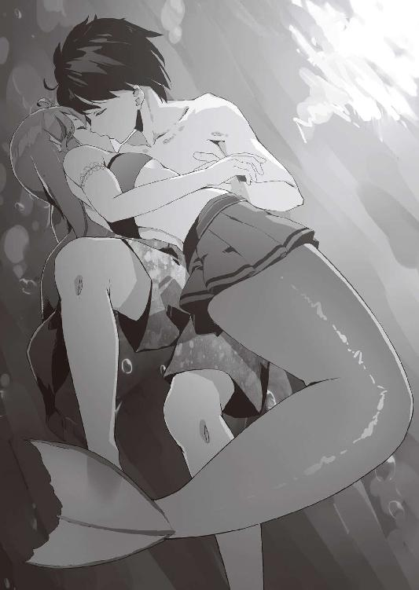
──......えっ？
少ない空気でも、人魚にとっては十分だ。ヴィアの意識が急速に覚醒し、それとともに、目を見開く。
目の前には、走馬灯の景色と勘違いした夫の顔。
ヴィアが意識を取り戻したのに気がついたのだろう。スレンの顔が満足そうな笑みを浮かべる。
こんな時だというのに、こんな事をされているというのに、何故だか、ヴィアの心臓がトクン、と高鳴った。
ヴィアの口元の感触が力なく離れていく。そして、彼女の夫は、そのまま海底へと沈んでいった。
──......ミ、ミリアムを助けるついでじゃからな！
心の中でそう呟くと、慌ててヴィアは夫の救助に向かった。
「ゴホッ！ ゴホッ！ ゴホッ！」
「コホッ！ コホッ！ コホッ！」
砂浜に大きな咳き込む声が、響き渡る。
その声の主は、スレンとミリアム。
人魚の姫に、無事に救助されたものの、大量の海水を飲み込んだ二人は、それを吐き出すのに、何度もむせていた。
「............」
その隣では、人魚の姫が珍しく、ボーっとした表情で佇んでいる。
「はい、ご主人様、お茶です」
「............」
メイドからのお茶を無言で受け取り、そして、ゴクゴクと凄い勢いで飲み始める。
喉が渇いているというよりも、どうやら、海水を大量に飲んだ口の中を洗い流したいようである。
「ご主人様。投げてもらったナイフ。いつの間にか無くされてしまったようですが、持ち主の方に返却しないといけないので、また海の中に戻って探してくるか、国費でなく自費で弁償してくださいね」
メイドはこんな時でも、主人に容赦なかった。
「ヴィア様も、お茶どうですか？」
「............」
「ヴィア様？」
「あ？ ああ......いただこう」
人魚は人よりも塩分に耐性がある。
だから、ある程度海水を飲んでも平気なのだが、お茶を受け取るヴィア。
「それにしても、ヴィア様。体調でも悪いのですか？ 人魚族であるヴィア様が、溺れるなんて、びっくりしました」
「......ああ、それは罠にかかってしまってな」
「......罠？」
──しまった！
思わず、人魚の姫はカップをその手から落とした。
中に入ったお茶が、砂にしみこんでいく。
水中の出来事だ。
観客から見えるわけではないし、言わなければいくらでも誤魔化せたのに、それを言ってしまった。
案の定、不穏な言葉を聞きつけた観客達がザワザワと騒ぎ出す。
そして、ヴィアの隣にいた小さな友人は、深く俯き、その肩を今にも泣き出しそうなほど震わせていた。
「わ──！ はっははは！」
浜辺に大きな笑い声が響く。
その声の主はエンデンブルクの若き国王。
自然、観客達の視線はそこへ集まる。
「いかに、人魚の姫といえど、ここはエンデンブルクの海！ 地の利は俺にあった！ 見事に、俺の仕掛けた罠にはまったな！」
「............」
一瞬、何を言われているのか──その言葉の意味がわからず、キョトンとする人魚の姫。
「決闘に罠を仕掛るのは、卑怯だと思うか？ では、お前は戦争で罠にはめられて、負けた時、そう言い訳するのか？ それと同じことだ」
そういいながら、スレンは未だ茫然としたままの人魚の姫を肩で突っつき、小声で話しかける。
（......ほら、お前も話を合わせろ）
（......し、しかし......それでは、そなたの面子が......）
（......俺が策を弄したのも事実だろ？ 気にするな）
何でもないことのように言うスレンに、ヴィアは心底驚く。
──......わらわは、つまらぬことで決闘を申し込んでしまったというのに......。
スレンは、観客達にドヤ顔しながら、さらに言葉を続ける。
「これでお前は、政略結婚ではない、本当の俺の妻だ！」
「か、完全に納得できたわけではないが、しょ、しょうがないのう。そ、そ、そ、そなたの、本当の妻になってやる」
スレンの演技の言葉──演技のハズの言葉。
しかし、それは、元々上手くはないヴィアの演技を、ますます下手にしていく。
やがて、観客達から、パラパラと拍手が起こり始める。
それが集まっている人数のわりに小さいのは、それはどうなのよ、的な意味合いがやや含まれているのだろう。
「......お姫様、お願いがあるの」
ヴィアはミリアムにスカートの裾を引っ張られる。
「......王子様に、お礼、言っといて」
「......ああ、そうじゃな。スレンに礼を言わねばな」
ヴィアはぎこちなくも、しっかりと頷いた。
『ミリアムに言付けを頼まれておる』
その夜。
スレンはヴィアのそんな言葉とともに、海岸へと呼び出されていた。
空には既に真ん丸のお月様が浮かんでいる。
こんな時間に、海岸にいる者など他にいない。
すぐに、彼女の姿をスレンは見つける。
彼女は埠頭に座って、海の方を眺めていた。
「......ヴィア？」
彼女を見つけたものの、奇妙な感覚にスレンは襲われた。目の前の女性が、ヴィアであって、ヴィアでないような、そんな気がしたのだ。
というのも、今のヴィアから発せられる雰囲気が、普段とは違っていた。
大人でもない、かといって子供でもない少女の体の線に、月明かりが生む深い陰影がまとわりついて、その肢体をどこか幻想的なものへと変えている。
素直に、綺麗だ、とスレンは思う。
しばらく、そうやって見惚れていると、その影が動いた。
ヴィアがこちらを見る。
その勝気そうな瞳が今は濡れて、月の光を反射してキラキラと輝いていた。
それに誘われるように、スレンはヴィアに向けて一歩一歩、踏み出していく。
そして、彼女の前まで来た時、再びヴィアが動いた。
「......え？」
腕をがっしりと摑まれる。
見かけは少女の細い腕だが、人魚の彼女の腕の力は、並みの男よりも強く、振りほどけない。
そして、そのまま引っ張られ、夜の黒い海の中へとスレンは落とされた。
「......うわっぷ」
浅瀬であり、すぐに足はついたものの、全身が再びずぶ濡れになってしまった。
「ヴィア、何を──」
......する。
そう抗議しようとした口を、思わずスレンは止める。
先ほど、月明かりの下で見た、少女の体。
それが、ぴったりと自分の背中に押し当てられていた。
背中に感じる柔らかな二つの膨らみ。
冷たい海の中、伝わってくる高い彼女の体温が、妙に心地好い。
波の音にもかき消されないほどの大きな、トクントクンという鼓動の音が、体から響いてくる。
その鼓動の音は、彼女のものなのか、それとも、自分のものなのか。海に包まれて密着している体では、その境界線がだんだんと曖昧になっていく。
「......かばってくれて、ありがとう。とのことじゃ」
「......？ ああ、ミリアムからか」
背中越しに、ヴィアがコクンと頷いたのをスレンは感じた。
「そうじゃ、ミリアムのお礼の言葉じゃ、ここまではな。じゃが......ここからは、わらわの言葉じゃ」
ヴィアは、さらにスレンに体を押し付けると、囁くように言葉を続ける。
「......のう、本当なのか？」
背中から、普段の彼女からは想像もつかないような小さな声が聞こえてくる。
「何がだ？」
「......そなたは決闘に勝った。わらわを本当の妻にできるのか？」
「......逆だろう。それは俺が得た権利だろう？」
「そうじゃ。じゃが......──」
彼女はそう言うと、体をくねらせる。
瑠璃色の鱗に覆われた大きな尾ひれが、スレンの体に優しく絡みつく。
「──......尾ひれのある女を、そなたは愛せるのか？ 人間という種族は、やはり水の中でも変わらぬ二本の綺麗な足がある女が良いのじゃろう？」
ヴィアは静かにスレンの返答を待つ。
そのうち、スレンの体が震え出す。
そして──。
「ぷっ、はははは......」
月明かりに照らされた海の上に、大きな笑い声が響きわたった。
予想外の反応に、一瞬、きょとんとするヴィア。
しかし、次の瞬間、一世一代の告白を笑われたと気づいて顔を真っ赤にする。
「な、なんじゃ！ いきなり笑い出しおって！」
「い、いや、すまん。ヴィアがそんなふうに思っていたなんて知らなくてな。でも、ヴィア、それは結婚というものを舐めている」
「......結婚を舐めている？」
「......そうだ。結婚した途端、でっぷりと太り出して、やがて旦那の体重を追い越して、性格が歪んだ結果、近所に旦那の悪口を言いふらすようになって、旦那の立場からしたら、そんな女の生活費を、なんで俺が稼いでいるんだ？ という状態になっても、簡単には別れられない。......それが結婚というものなんだぜ」
スレンはそう言うと、体に巻きつく瑠璃色の尾ひれを撫でる。
「それに比べたら、尾ひれがあるくらい、どうってことないさ。......それに、俺はこの尾ひれは可愛いと思うぜ」
「............」
聞きなれない言葉を向けられて、先ほどとは別の理由で、真っ赤になる人魚の姫。
無論、背中に目があるわけではないスレンはそのことは分からない。
「............ヴィア？」
不意に黙った人魚の妻を怪訝に思ったスレンがその名を呼ぶ。
「......き、気安く、わらわに触れるでない！」
触れられた手の間から逃れる人魚の姫。
「お、沖まで競争じゃ。昼間のリベンジじゃ！」
そして、ヴィアは自分の中に生まれた感情を制御できず、その結果、突然泳ぎ出す。
「ちょ！ 小細工なしで、俺が勝てるわけないだろう！」
そう言いながらも、慌てて追い始める夫。
そんな不器用な二人を、月だけが見ていた。
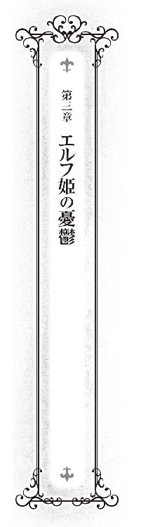
本来、エルフ族の朝は遅い。
人間の時間でいえば、昼飯頃に起き出すのも珍しくない。
『やつらは、根っからのお貴族様じゃからな』
口の悪い人魚族の中には、そう言うものもいるが、それは誤解も含まれている。
長寿である彼らは、急いで何かをやる必要性を感じないのだ。
その上、彼らの棲み家である森は、実り多き豊かな自然で、普通に暮らしていく分には問題なく生活でき、さらに、森は外敵から守ってくれるシェルターにもなる。
そのような暮らしをしていると、自然と時計の針の歩みが遅くなってしまうのだ。
が、人間に降嫁（エルフ視点で）してきたエルフの姫、エユラン・グロッソニアの朝は早い。
カーテンを突き抜けて、強い朝日がベッドに降り注ぐ中、枕に顔を埋め呻きながら彼女は起きる。
「......ぅぅぅう、う、う。朝は苦手ですわ」
彼女もエルフであり、その生活習慣からは抜け出しきれておらず、正直、朝早く起きるのは苦行に等しい。
では、何故、わざわざ早起きするのかと言えば、口の悪い人魚族が同じ家で暮らしているからだ。
そのため、彼女は辛く苦しくとも朝日に負けず早起きをする。
それを支えているのは、彼女の強い克己心と固い意思。
見栄、とも言う。
豊かな金髪と服装を隙なく整え、ポーカーフェイスで苦悶の感情を隠しながらエユランは食堂まで辿り着く。
「あ、エユラン様、おはようございます」
既に食堂にいて、朝食の準備をしていたこの家のメイドのフェンが声をかける。
そして、飲みやすいようにやや温くしたお茶をそっとエユランに差し出す。
大げさではなく、彼女が天使に見えた。
こんな優秀なメイドが、何故、こんなところにいるのかと思う。
胃に負担をかけないように、ゆっくりとお茶を飲んで、やっとエユランは人心地つく。
──......野卑な人魚とは違って、私は繊細にできていますのに。
そして、口の悪い人魚に負けない口の悪さで、そう心の中で愚痴る。
「......そういえば、その人魚さんは、今日も、まだ来ていませんのね」
「......その？」
配膳をしながら、メイドが首を傾げる。
「いえ、こちらの話ですわ」
数日前から、朝、食堂に集まる順番が変わった。
以前は、フェン、ヴィア、エユラン、スレン、という順番だったのだが、今は、真ん中が入れ替わって、メイドの次にエユランとなっている。
その理由もエユランは気づいていた。
「......あ、ヴィア様、おはようございます」
入ってきた人魚の姫を見ればわかる。
妙に色気づいてきたからだ。
服装は露出過多なものから、落ち着いたものに変わった。おヘソは隠れ、スカート丈は伸びた。
今までの自分の着たい服を着るファッションから、男の目を意識したものに変わった。
さらに、その明るい青色の髪も以前より丁寧に梳かれているし、いままでは化粧などしていなかったのに、薄っすらとだが施されるようになった。
それだけ、身だしなみに時間をかけるようになったのだから、遅れてくるのは当たり前だ。
「ご主人様、おはようございます」
それから、しばらくして、大欠伸をしながら、この国の国王であるスレンが入ってくる。
それを見た人魚の姫が少し目を潤ませてから、慌てて不機嫌そうな顔をしたのをエルフの姫は見逃さない。
数日前、決闘をしたという日から、気がつけばこうなっていた。
決闘で白黒をつけるという価値観がバカらしいと考えているエユランは、あのバカ騒ぎの会場にいなかったが、卑怯な手を使った結果にせよ、スレンが勝ったと風の噂で聞いた。
しかし、今の人魚の姫の格好、それに、彼女が時折、スレンに送る視線を見ると、それだけではないように思うのだ。
もっと、根本的な部分で、彼女がスレンにやられてしまった、みたいな。
「..................」
さりげなくヴィアがスレンに視線を送っている。
今のヴィアは、エユランなど眼中にないように見える。
そのことを、少し寂しいと感じる自分がいて、エユランは驚く。
寂しいと感じるということは、対立しながらも、どこかで彼女に仲間意識があったということだ。
人間の世界に嫁いできた同じ異種族の姫として、同志と言ったら、大げさだが、そのようなものを心の奥底で感じていたのかもしれない。
──......まあ、よいですわ。私は私の仕事をするだけです。
彼女はそう決意をあらたにすると、
「「「「いただきます」」」」
と声をそろえ、朝食へとフォークを伸ばした。
「スレン、今日は、巡察に行かぬのか？」
「俺も、そういった仕事の方が好きなんだが──」
「..................」
じ～～とメイドがお皿を片付けながら、ニコニコと微笑み、主人を見ている。
「──笑顔で監視しているメイドがいる通り、そろそろ溜まっている事務仕事を片付けなければならない」
「......そうか」
「ミリアムには、よろしく言っておいてくれ」
食事が終わると、各々がそれぞれの今日の予定に向けて動き始める。
メイドはいつも通り家事をこなし、その主人は事務仕事をし、人魚の姫は海に小さな友人と遊びにいく。
そんな中、少々ヒマを持て余し気味なのがエユランだった。
メイドに家を出ると一瞥した後、エルフの姫は出かける。
ヒマを持て余したエユランが向かった先。
それは、街の図書館だった。
図書館は、この国の規模に相応しくないほど大きい。
地上には二階建ての建物が立ち、地下にも書庫がある。
高い本棚が鬱蒼と立ち並び、やや薄暗く静謐に満ちた空間は、どこか彼女の故郷の太古の森の中に似ていて、その中にいるだけで気分が和らぐ。
また、寿命の長いエルフは、文化の継承、伝達に文字を使って残すという習慣が少なく、初めて本格的に触れる活字文化は、彼女の知的好奇心を大いに満足させていた。
──これだけの規模の図書館があるなんて思いませんでしたわ。
彼女がこの国に嫁いできて、一番、驚いたのはこのことだった。
しかも、この図書館を一般市民が利用している。
そのことも、彼女を驚かせた。
ドワーフの開発した金属の活版印刷の普及で、大量生産が可能になり、以前ほど本は高級品ではなくなったが、まだまだ、それを読む人間は少ない。
というのも、そもそも、文字が読める人間が少ないのだ。
庶民は、良家の子弟でもない限り、そういった教育を施されることはないため、自分の名前さえ、満足に書けない人間は珍しくない。
ところが、この街の住人はどうだ。
王立の学校を造り、そこで、国民はある程度の教育を施されるらしく、その教養が、本を娯楽品、嗜好品に変えている。
──バカというわけではなさそうですわね。
夫であり、この国の為政者の顔をエユランは思い浮かべる。
恐らく、あの男は知っているのだろう。教育の力というものを。
この街が急速に発展しつつあるのは、大量に金をばら撒いただけではなく、こうした人を育てていた下地があったからなのだろう。
それはともかく、今は読みたい本の捜索だ。
本棚に収められた本の背表紙を目で追いながら、エユランは館内を歩く。
そして、お目当ての本を見つける。
ワクワクしながら、本棚から抜き出し、その場で、そっと開く。
と、その時。
「......エユラン様」
耳元で、自分の名を呼ばれた。
本に集中していて完全に不意を衝かれた。
その長い耳がビクッと跳ね上がる。
──ま、不味いですわ。
思わず、サッと本をその大きい胸に押し当て、隠す。
「......？ どうしました、エユラン様？」
「......なんでもないわ。ただ、急に声をかけられて、驚いただけですわ」
エユランはホッと胸を撫で下ろすと、自然といつものポーカーフェイスをつくる。
そして、声をかけてきた男に目をやる。
同種族のエルフの男だ。年齢は人間でいえば、老境にさしかかったといったところか。今は、街とエルフの森とを往復し、木材を始めとする特産品をこの国で売りさばき、その代金で手に入れた塩を始めとする交易品をエルフの森に運ぶ仕事をしている。
ちなみに、その取引は民間ではなく、エルフの国が行っている事業だ。
つまり、それに従事しているこの男は王族の家来であり、エユランの臣下という立場なのだ。ただし、エユランが嫁いだ今は、公式には元がつくが。
「どうしたのです？ イワーネス」
多少、緊張した声でエユランは尋ねる。
その行商人のような服装の通り、表向きイワーネスは商人の真似事をしているが、本来の姿はそうではない。
実体は、その服装の下に老練な頭脳と鋼の肉体を隠した武人であり、さらにこの国の情報収集と、エユランとの連絡を任務とする工作員なのだ。
エユランが、ただの同郷人に話す口調でないのは、そういった事情を含んでいる。
「......エユラン様、大変なことになりました。同盟が解消されるかもしれません」
「あら、意外と早かったですわね。でも、それは規定通りのことではなくて？」
「長はまだ、同盟存続の価値を認めております」
「............！ まさか！」
「恐らく、エユラン様のご推測どおりかと存じます。長──エユラン様の父君が、母君の説得に失敗いたしました。もうすぐ母君が、この国に到着します。エユラン様を森に連れ戻しに」
そう報告するイワーネスは困ったような表情を浮かべていた。
どんな逆境にも屈せず、エユランの部下の中でも、もっとも長に信頼されている男がだ。
「......姫様、父君からは、母君の説得を頼むとのことです。ご武運を」
「......お母様の説得ですか。難題ですわね」
エユランは少々重めの溜息を吐く。
思い込んだら一直線のあの母親を、どう説得しろというのだ。
それは自分を信頼しているというより、ただ単に仕事を丸投げされているように、エユランには思えた。
「心中、お察しいたします。ところで──」
仕事の話はこれで終わったのだろう。
今までの厳しい表情が柔らぎ、孫娘を見るお祖父ちゃんのような表情に変わる。実際、部下といっても、二人の関係はそれに近い。
「──その本は？ 何をお読みになっているんです？」
「......え？ あ......」
その話題は終わった。いや、話題にもならなかった。いやいや、ならないで欲しかった。
別に変な本ではない。いかがわしい本でもない。
だが、世間体というものが世の中にある。できれば、こうゆう本が好きなことは秘密にしておきたかった。
「ああ、その本なら、聞いたことがあります」
表紙のタイトルを読み取ったイワーネスが言う。
「若い女性の間で、大人気の小説らしいですな。なんでも、甘く切ない恋物語らしいですな」
エユランが読んでいた小説。
それは、恋愛小説だった。
しかも、イワーネスのいうように、慣れない人間が読むと食傷を起こすくらい、かなり濃い目にとろとろと甘く味付けされているものだ。
普段、クールな顔で毒舌を吐いている自分。
そんな自分が、ある意味、そんな対照的な小説を読んでいると思われるのは、気心の知れている相手であっても、いささか気恥ずかしいものがあった。
「......姫様も年頃なのですな」
悪気のない視線と口調で、しみじみとイワーネスが言う。
年頃というのなら、もうとっくにそういう年頃なのだが、この老人も御多分にもれず、孫を幼く見る傾向があるようだ。
「......あのですね......これは違うのです」
イワーネスとは逆に、あえてものすごく真面目な口調でエユランが言う。
「......こ、これは参考資料として読んでいるのです」
「ご自身の恋愛のためですか？」
「違いますわ！ え、ええっと......母様、説得のためですわ」
思わず、時系列を考えれば簡単に噓だと見抜かれてしまうことを口にしてしまうエユラン。
「説得？ どうやって、母君を説得されるおつもりで？」
「それは......ですね......」
必死で、読んだ小説の中身を脳裏に思い浮かべる。
──そ、そうですわ。
彼女の頭に閃きが走った。
「私が、この国の王に恋をしているように見せるのです。そうしたら、母様もあきらめて帰ってくれるハズですわ。だから、イワーネスも協力してちょうだい」
「......恋愛の方は専門外なので、よくわかりません......が、姫様のためとあれば、陰ながら協力させていただきます。では、そろそろ、お暇いたします。狭い街です。さすがに長時間、話していると怪しまれるでしょう。姫様、成功をお祈りいたします」
そう言い残すと、イワーネスは去っていた。
「......恋人ごっこで、母様にあきらめてもらう、か」
もう一度、彼女は先ほど思いついた考えを反芻してみる。
単なる思いつきであったが、あらためて考えてみると、意外に悪くない考えに思えた。それに他の説得方法を思いつけそうにない。
──でも、まあ、とりあえず、今は続きを......。
エユランは、ひとまずそのことを保留して、おずおずと隠す形となった本を胸から離し、今度はきちんと周囲に視線を走らせ、誰もこちらを注視していないのを確認すると、読書を再開した。
その日の夜。
「ふわ～～～」
エンデンブルク国王スレン・エンデンブルクは、私室で大欠伸を一つした。
いつもと同じように、机の前に座る彼の前には、先ほどメイドが淹れてくれたお茶と、書類の束。
「......やっと、残業が終わった」
最後にお茶を飲むとそう呟き、椅子から立つと大きく伸びをする。
そして、そのまま近くのベッドに身を沈める。
まだ、残業中の興奮が残っているのか、眠気はすぐに襲ってはこない。そんな中、考えるのは仕事のこと、そして、二人の妻のこと。
幸い、大きな誤算もなく、街の発展計画は順調に進みつつある。スレンが投資した、街道や港は、いわば歯車となって、街に利益を生みつつある。
そのことを喜ぶというよりも、ほっとしていた。
最終的に決断するのは、自分一人であっても、その責任を背負うのは自分一人ではない。
国王の失敗は、それはそのまま国家の失敗であって、最終的に負担をかけてしまうのは国民なのだ。
それを回避できたことに、スレンは胸を撫で下ろす。
また、個人的に、持参金を投資して失敗したとなれば、二人の嫁に合わせる顔がなかった。
今はまだ、初期投資として使った持参金の金額と、それによって生まれた金額とを比べれば赤字だが、このまま順調にいけば、やがてそれは黒字へと変わるだろう。
そして、次に考えるのは二人の嫁のこと。
──結局、何の病気だったんだ？
まずは、ヴィアのこと。
最近──もっと具体的に言えば、決闘が終わったその日、家に帰ってくると、妙にニヤニヤしていたフェンに、
『ヴィア様は病気になられましたね』
と言われた。
しかし、いつも通りに見えたので、何の病気なのかと聞き返したら、フェンに、あきれた顔と共に、
『わたしは結婚をしない人ですが、ご主人様は結婚できない人でしたね』
と言われた。
──で、できたぞ、結婚！
心の中で、そう反論してみる。
いや、まあ、それはある意味、権力を使っての政略結婚だけれども。
そして、次に考えるのは、エユランのこと。
今夜、家に戻ってきてからのエユランの様子はおかしかった。
夕食中、チラチラとこちらの様子をうかがっていた。
──......あれは、なんだったんだ？
何か、話したいことでもあったのだろうか。
明日にでも、聞いてみようと心に決めると同時に、睡魔に襲われた。それに誘惑されるままに目を瞑ると、スレンはそのまま眠りに落ちた。
その嫁は明日まで、待つつもりのないことなど知らずに。
次に目を覚ましたスレンが感じたのは、妙な圧迫感だった。
自分の包まるシーツの上に何かが乗っているかのような感覚。
無論、寝るときは一人であったハズで、家具などが、自分に向かって倒れてくるハズもない。
奇妙に思いながら、スレンはゆっくりと目を開く。
すると、そこには──。
窓から差し込む月明かりの下。
何故か、エルフの国から嫁いできた妻が、自分の体の上に馬乗りになっていた。
その右手に、銀色に光るナイフを持って。
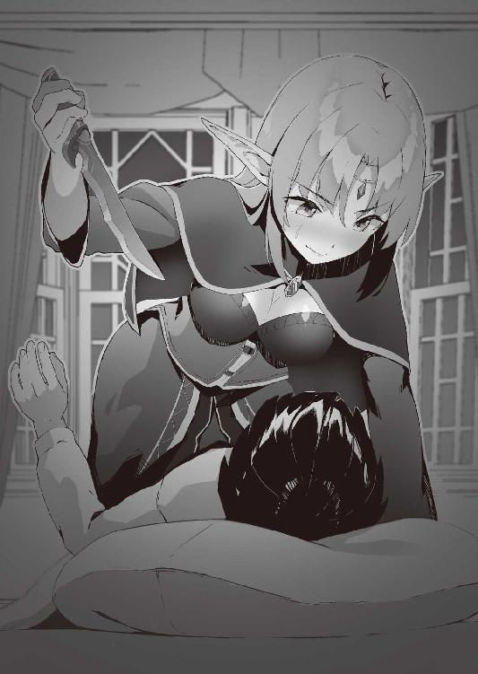
「～～～～～!!!!」
思わず、声にならない悲鳴を上げるスレン。
体を動かそうにも、しっかりと押さえつけられており、動かすことができない。
「......夜は、静かにしてくださる？ でなければ、このドワーフ族特製のミスリルのナイフを持つ手が滑ってしまうかもしれなくてよ？」
こくこくと頷くスレン。
と、その時。
「......ご主人様、叫び声が聞こえ──」
隣の部屋で寝ているメイドが、蠟燭を持ちながら、ドアを開け、入ってくる。
そして、ベッドの上の二人を見て、目をパチクリとさせる。
「............」
「............」
「............」
三人とも声も出せず、奇妙な沈黙が部屋に下りる。
そんな中、メイドはにやけた顔になると、
「......今夜は、お楽しみでしたね。ふふふふふふ」
そう言い、ドアを閉めて、そのまま立ち去ろうとする。
「ちょっと！ 待て！ これのどこが楽しんでいるように見えるんだ！」
何もなかったかのように自室に戻ろうとするメイドを、主人は全力で呼び止めた。
「すみません。そういうプレイかと思ったんです」
今度はちゃんと部屋に入って来たメイドは、そう言い訳した。
そして、その罪滅ぼしのつもりなのか、カップにお茶を注ぎ始める。
「......ナイフを使って行うプレイなどないだろ。いや、広い世の中、あるかもしれないが、あの場合はどう見ても違うだろ」
机の前の椅子に座り、解放された体を確かめるように動かしながら、そのお茶を受け取るスレン。
「それにしても、エユラン様、何故、そんなものを？ ご婦人が夜中に殿方の部屋に忍びこむときに持っていくものは、女の武器であって、ドワーフ特製のミスリルのナイフではありませんよ？」
「だって、襲われたら、どうするのです？ ここに来た初日に言いましたが、私は立場上、あなたの妻ですが、心まで許した覚えはありません」
エユランは、今はスレンの体を解放し、ベッドの中央で、我が物顔で鎮座している。
そんな姿まで、何となく絵になるのは、彼女の美貌故か。
「私にも、お茶をくださる？」
「はい、どうぞ」
受け取ると、喉が渇いていたのか、すぐに口をつける。
その姿まで優雅に見える。
その傍らで、光っているナイフに目を瞑れば。
「それで、なんで、エユラン様は、ご主人様の部屋を訪れたのです？ それも、こんな時間に」
「......話があるのです。......できれば、あまり人には聞かれたくない話が」
どうやら、スレンの予想は当たっていたらしい。
「......お願いがあって来たのです」
「............え？」
「不思議そうな顔をしていますけど、何か？」
「あ、いや、なんでもない」
脅迫しに来たの間違いかと思ったが、スレンは黙っていた。
「それで、そのお願いとはなんだ？」
エユランは、お守りを手にするように、ベッドの上に置かれたナイフの上に手を置きながら、話し出す。
「......私と恋人ごっこをしてちょうだい」
お茶を飲みながら、その理由を続けて話す。
「お母様が来るの」
「王妃様が、ですか？」
「そう。私を連れ戻しにね」
それを聞いたスレンの顔に緊張が走る。
「そんな顔をしないで頂戴。これはお母様の独断で勝手にしていることであって、エルフの国の決定ではないわ。エルフの森で、その長である父の数少ない不可能なものの一つが、母の制御なのよ。夫婦仲が悪いというわけではないんだけど、簡単に言えば、尻に敷かれているの」
「それは......また......」
なんとなく、その旦那にスレンは同情した。
「母の意識では、私は国の犠牲となった可哀相な娘で、自分はそれを助けにきた正義の味方なの。その母を私が説得しなければならないの」
「なるほど。それで、ご主人様とのラブラブぶりを見せつけて、帰ってもらおうというわけですね」
「話が早くて、助かるわ」
そこまで言うと、エユランは再びカップに口をつけて、一旦、喉を潤した。
「私に協力して頂戴。利害は一致しているハズでしょ？ 私は父から授かった、政略結婚により人間の国に嫁ぐという役目が果たせるし、あなたは国王として、エルフとの同盟を存続できる」
確かに、どちらにも損はない。
「う～ん......」
しかし、スレンは思案顔を見せる。
「......何か、不満がありますの？」
「いや、不満というか、疑問なんだが。まあいいや、わかった。協力しよう」
こうして、エユランのお母様説得作戦は始まった。
執務室の時計が鳴る。
エユランのその長い耳がピクンと動き、チラリと窓の外へと目を移す。
そんなことを、朝から繰り返している。
「やっぱり、気になるか」
苦笑しながら、隣にいるスレンが事務仕事の手を休めて、話しかけてくる。
「......そうですわね」
少し、不機嫌そうにエユランは答える。
「......お昼までには到着すると思っていたのですけど、遅いですわね」
そろそろ夜の帳が下りてくる時間だ。
この国の治安は悪くないとはいえ、さすがに心配だ。
「夜までに来ないようだったら、迎えに行ってみよう」
「......いいですわ。そんな手間はいらないですわ」
その申し出をエユランは断る。
なんとなく、借りができるようでイヤだった。
「............」
しかし、隣の男は既に決めたらしく、そのエユランの言葉を聞き流した。
「それより、今日は、仕事を手伝ってくれてありがとうな」
母親を待つために、家に居なくてはならない。
すると、手持ち無沙汰になるエユランは、自分から申し出て、スレンの仕事を手伝うことにしたのだ。
そのため今日は一日、夫の横で一緒に机を並べて、食事と休憩の時間以外は執務室にこもり事務仕事を手伝っていた。
「......あなたが言うと、嫌みに聞こえますわ」
今日の作業で、エユランが驚いたのは、この夫の事務能力の高さだ。
エユランの数倍の速度で書類を片付けていた。
比較対象が初めてのエユランとはいえ、その処理能力は驚くべきものだった。
「フェンを見ても、思いましたけど、この家の人々は意外に優秀ですのね」
遠まわしに、スレンを褒めるエユラン。
「ああ、少数精鋭で運営しているからな」
「......人が集められないだけではなくて？」
「ぐっ、まあ、そうとも言うな。......でも、助かったのは本当だぞ。今日は残業もなく、これで終わりにできるしな」
最後の一枚を片付けると、うーんと、スレンは伸びをする。
そして、席を立つ。
「......夕食まで少しあるな。それまで食堂でお茶でも一緒に飲まないか？ フェンには負けるが、俺もそれなりにお茶を淹れるのは上手いんだぞ」
「......普通、一国の国王は、そんな仕事をしないし、誇りもしないものよ」
あきれたように、そう言いながらも、エユランは席を立つ。
と、その時だった。
開けていた窓から、何かが飛び込んできた。
それはそのまま、重力に引かれ、執務室の床に叩きつけられ、ドカッ、という大きな音を部屋に響かせる。
二人は部屋を出て行こうとしたその足を止め、その床に横たわるものに視線をやる。
「......？ 何故、鹿が？」
そう、それは鹿だった。
よくよく観察すると、すでに息はなく死んでいる。
「............」
エユランは無言で、床に横たわる鹿に近づくと、しゃがみこむ。
そして、鹿の頭を転がし、その首下を調べる。
そこには毛皮の表面にどす黒い血の汚れが楕円形にこびりついていた。それは首を貫通する形で、左右についている。
「......この傷の形、お母様の鏃に間違いありま──」
「──エユランちゃん！」
彼女が言い終わるより先に、鹿が飛び込んできた同じ窓から、今度は人が飛び込んできた。
太陽の光を集めてできたような金髪と瞳。透き通るような白い肌。そして、長い耳。
そういった種族の特徴だけでなく、体格や顔の中にも、この家の住人と似た面影があって、すぐに、スレンは目の前の人物が誰か容易に想像がついた。
エユランの母親にして、エルフの国の王妃にあたる人物、ハイミーナだ。
しかし、長寿のエルフだからなのか、それともハイミーナが特別なのかは分からないが、その顔には加齢のための皺一つなく、見比べてみても姉妹にしか見えない。
ハイミーナは娘の隣にいる旦那を完全にスルーしながら、窓から飛び込んできた勢いそのままに、娘に抱きつく。
「ちょっ、ちょっ、お母様！」
その中で、もがくエユラン。
「エユランちゃんの大好きな鹿をしとめていたら、遅くなっちゃった。待っていてね。今、庭で、解体するから」
ハイミーナはそう言うと、うんしょと鹿を持ち直し、窓から出て行った。
その後ろ姿をスレンは目で追う。
「......あの姿で、鹿をしとめたのか？」
確かに、背中に弓と矢筒を背負ってはいるが、服装自体は、ゆったりとしたローブで、森で狩猟を行うような格好ではない。
窓から庭先を眺めると、ハイミーナがちょうど鹿を押さえつけ、その腹にナイフをつきたて始めたところだった。森の食物連鎖の頂点に立つものが何者なのかわかるような光景だ。
──......やっぱ、あのナイフもドワーフ特製なのだろうか。
なんとなく、その鹿の姿が昨夜の自分の姿に重なって、いたたまれなくなって思わずスレンは目を逸らした。
その背後では、庭に血溜まりができはじめ、小さい子が見たらトラウマになりそうな食肉加工が始まっている。
「......何か？」
憮然とした表情で、乱れた髪と服を直している妻をしみじみとスレンは見つめる。
「いや、親子なんだなあ......と思って」
容姿だけでなく、その美貌とは裏腹に意外と武闘派なところも、似ている。
その夫の感想に対して、妻は不本意そうに、その形の良い眉を顰めた。
夕食時。
いつもの面々に加えて、今日は、客人が席に座っていた。
「はじめまして、エユランの母のハイミーナです」
ハイミーナは改めて、そう自己紹介した。
城に泊まることになった彼女を、皆に紹介するついでに、一緒に夕食を摂ることにしたのだ。
今日の夕食は豪華なものだった。
いつも肉といえば、ソーセージか、ベーコンなのだが、今日は最高級の鹿肉が使われていた。
「エンデンブルク王国国王、スレン・エンデンブルクです。お義母様、どうも、はじめまして」
スレンはそう自己紹介すると共に挨拶する。
「あ、エユランちゃん、鹿肉を料理してもらったわよ。この家のメイドの料理の腕前は優秀ね」
「恐れ入ります」
しかし、見事にスルーされた。
「............」
「......あ、あなた」
変な空気になりかけた時、いつもとは違う『あなた』の発音で、エユランがスレンを呼ぶ。
「この料理、食べませんこと？」
そして、そう言いながら、エユランは一つの大皿を差す。
その大皿には、香草を散らした生の鹿肉が並べられていた。
「......生で食すのか？」
生肉を食べる習慣のないスレンはちょっと驚いたように見る。
しかし、異種族の姫二人は特に気にする素振りもなく、先ほどから口に運んでいる。
「......ヴィアも平気なのか？」
エルフの食文化だから、エユランが平気なのは分かるが、人魚の姫も美味しそうに食べているのは意外だった。
「ああ。わらわの国でも、魚を生で食す習慣はあるのでな。生のものを食べるのにそれほど抵抗はない」
「いや、食文化にケチをつけるわけじゃないんだが、食中毒とか、寄生虫とか、大丈夫なのか？」
「鮮度と調理の仕方に気をつければ、大丈夫じゃ。それに寄生虫の方は、川魚には多いが、海の魚はそれほど心配ない。まあ、それでも、時折、そなたの言うようになったりするが、それは生で食べられる種類ではない魚を食べたり、体調が優れぬ時に食べた時じゃ」
共通のものがあるのか、頷くエルフの姫。
「勉強になります」
とフェン。
「じゃ、じゃあ......」
恐る恐る生の鹿肉にフォークを伸ばそうとする。
が、その腕を左隣にいるエユランに引っ張られ、制される。
「......この料理、私の故郷の料理で、私の大好物ですのよ」
「......？」
だから、食べてみようと思ったのだが、なんで止められるのか。
好物は一人で独占したいということなのか。しかし、まだまだ大量にあるし、よく食べているヴィアの方を制さないのはおかしい。
疑問を浮かべているスレンの横で、エユランはフォークを持った手を伸ばし、その生の鹿肉を一枚刺す。
そして──。
「はい、あ～～ん♪」
そんな、普段の彼女からは想像もできないような甘い声と共に、その自分のフォークに刺した鹿肉をスレンの口元に寄せる。
「え？ え？ え？」
軽くパニックに陥るスレン。
今まで、ここまで夫として扱われたことはなかった。
ギュッ!!
そんなスレンの足をテーブルの下で、周囲に分からないようにエユランが踏む。
「......ッ！」
スレンはエユランを見やるも、エユランは表情一つ変えない。
「どうしました、ご主人様？」
「い、いや、なんでもない」
やっと、スレンは理解する。
これが、エユランが協力してといった恋人ごっこなのだ。
「あ、ああ」
スレンが口を開くと、その中に、鹿肉を入れられる。
最高級に分類される鹿肉だ。
生肉特有のしっとりとした肉の食感と共に、豊潤な野趣溢れる味が口の中に広がる。
予想していた血の匂いや生臭さはなく、意外にさっぱりしている。
「なるほど、美味しい............い？」
「どうして、疑問形ですの？」
「い、いや......肉は間違いなく美味かったんだが......」
食卓が妙な雰囲気となっていた。
エユランの母、ハイミーナが驚いたように口を開けたまま食事の手を止め、こちらを見ている。
これは、まあ、ある意味、予想通りなのだが、スレンは右隣から異様な重圧を感じていた。
「............」
その位置に居るのは、彼のもう一人の嫁、ヴィア。
ヴィアは無言のまま、フォークを槍のように使い、先ほどエユランが生肉を取った大皿から、同じように、生肉を取る。心なしかエユランよりも大きいのを選んで。
そして──。
「あ、あ～～んじゃ」
それを、スレンの口元に差し出す。
「え？ え？ え？」
無論、ヴィアとは、恋人を演じる約束はしていない。
差し出された肉を前に、戸惑うスレン。
「そ、そのな......わらわもそなたの妻であろう。色々と異論がないこともないが、今のところ、エルフの姫とわらわは同格。エルフのご母堂の前とはいえ、わらわだけがせぬのは、いささか不公平であろう？ ......ああああ、喋っている間にも、肉が落ちる。早く食せ」
「あ、ああ、うん、ありがとう」
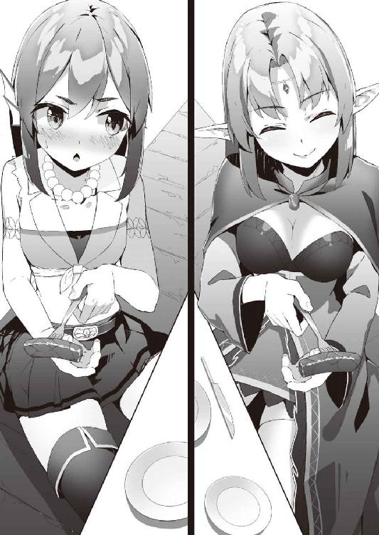
それを大人しく口にするスレン。
「......ふふふ、ご主人様とエユラン様との仲の良さに、ヴィア様、嫉妬されてしまいましたね」
その様子を眺めながら、隣にいるハイミーナだけに聞こえる声で言うメイド。
「そういえば、お母様。今日は、どうしてここに？」
前もっての情報で、ほぼ正確に予想がついているというのに、エユランが不思議そうな顔をして、母に尋ねる。
「もちろん決まっているわ。貴女の顔を見にね。そして、貴女を森に連れ戻しにね」
「私を連れ戻しに？」
少々大げさに聞きかえすエユラン。
「そうよ、貴女がね。国のために犠牲になって、政略結婚なんてすることないの。貴女のお婿さんは、人間なんかじゃなくて、私が、立派なエルフの若者の中から選んであげるから」
ここぞとばかりに、身を乗り出し、娘に力説する母。
「......確かに、出会いこそ不本意なものであったかもしれませんけど」
それに対して、娘は母とは温度差のある表情と口調で語り始める。
「今の私は、身も心も夫のものですわ。そう言うわけですから、申し訳ないですが、お母様はお帰りになって」
「あら？ いつから、エユランちゃんは、そんな噓つきになっちゃったのかしら？ それとも、その横にいる人間の男に、そう言うように脅されているの？」
本当は、脅されているに近かったのは、その逆なのだが、無論、母は知らない。
「......娘の言葉が信じられませんの？」
「ええ、それが本心からの言葉だったならね。母親ですもの、分かります」
エルフの王さえままならぬ母が、その程度で引き下がるハズもなく、余裕のある表情で娘を見る。
だが、エユランも澄ました顔で母を見返す。
「............」
「............」
露骨に敵意を見せずに睨み合うところが、逆に怖い。
そんな中、先に口を開いたのはエユランだった。
「このままでは水かけ論で、時間の無駄でしょう。分かりましたわ、お母様。しばらく、この国に滞在して、私と夫のラブラブぶりを見て帰られたらいかがです？」
「ええ、そうさせてもらうわ」
にこやかに応じる母。
が、その目は笑っていなかった。
次の日、スレンとエユランは街へと繰り出していた。
名目上は二人での巡察。だが、実際はデート。無論、母親を説得するために恋人を演じる作戦の一環だ。
その並んで歩く二人の少し離れた後ろを、ぴたりと一定の間隔を保ちながらハイミーナがついてきている。
隠れて尾行するでもなく、澄ました顔で追ってきている。
街の人は、前を歩く国王夫妻と、その母親（田舎町なのですぐに噂が伝わった）とを見比べて、何事かと不思議そうな表情を浮かべている。
そんな三人から、離れること少々。
前の二人に見つからぬように身を隠しながら、人魚の姫とメイドは二人の──結果的に見れば三人の尾行を続けていた。
「ふふふ......ご主人様、随分とぎこちないですね。でも、そこが初々しくて可愛いです」
「......は、破廉恥な！ 人前で、あんなにくっつくなど！」
人魚の姫、ヴィアがその小さな体に嫉妬の炎を燃やしながら、叫ぶ。
「そうですか？ ヴィア様も、ご主人様の巡察に同行される時は、あれぐらいくっついていますよ」
「わらわはいいのじゃ。わらわはスレンの妻であるからな」
「エユラン様も、一応、ご主人様の妻ですが」
「なあ......フェン、そなたはいいのか？」
「いいのか、とは？」
自分から、言い出したのにも拘わらず、ヴィアは目を逸らしながら言う。
「そなたは、スレンが他の女といるのが、気にならないのか？ その......そなたも、スレンのことが好きなのであろう？」
「はい、好きですよ」
あっさりとフェンは頷く。
「ですが、恋愛をするには、少々、距離が近過ぎましたね。何せ、ご主人様がおねしょをしていた頃から一緒にいて、そのおねしょの片付けを手伝っていますからね。今更、そういう目で、ご主人様を見るのは無理なんですよ。それはご主人様も同じです。月並みな言い方ですが、わたしはこれからもずっと妹のようなポジションのままなんですよ」
「わらわには、スレンの姉のように見えるがな」
「そちらに置き換えていただいても結構です。今の、わたしの望みはご主人様の赤ちゃんを産むことではなく、養育することです。だから、安心して産んでくださいね」
「ななな、稚児とは、き、気が早い！ 物事には、順序というものがあろう」
「ふふふ......ほらほら、二人がカフェに入りましたよ」
メイドの言葉通り、二人はカフェに入っていった。
この田舎の街には珍しいセンスの良いカフェで、この街でデートする際には鉄板の場所である。
実際、店内は若い恋人達の姿が多い。
その仲睦まじそうな様子で会話しているのを見ると、エユランは不思議に思う。
どうして、あんなふうに楽しそうに話せるのだろうかと。
彼女の読んでいた恋愛小説にも、恋人と仲睦まじく語り合うシーンはあった、しかし、それは、あくまで他人の恋愛であったことをエユランは思い知る。自分の恋愛では、どんなことを話せばいいのかは、残念ながら書いてはなかった。
「......私と一緒にいても、つまらないでしょ？」
注文して、運ばれてきたお茶にミルクと砂糖を入れ、必要以上にスプーンでかき回しながらエユランが言う。
確かに、ここまで一緒に恋人らしく寄り添いながら来たものの、会話らしい会話はなかった。
何か話題を振ろうとは思うのだが、異性に対して──それも異種族の人間に対して、どういうことを話せばいいのか、エユランには分からない。
「そうだな」
お茶を飲みながら、スレンは頷く。
「............」
ムッとなるエユラン。
確かに、言い出したのは自分だが、ここまで気の利かない男だとは思わなかった。
「気を張っているエユランと一緒にいてもつまらないな」
「......私が、気を張っている？」
その自覚はエユランにはなかった。
「男って単純だから、美人と一緒にいるだけで楽しんだ。その中でも、エユランはとびきりの美人なんだから、全然、気を張る必要なんかないんだ。だから、もっと自然体でいてくれたらいいと思う」
「............」
「んん？ どうした？」
「......口説かれているかと思いましたわ」
こういう時、どういう表情をすればいいか分からない。
時間をかけて、お茶を飲むことで、エユランは誤魔化す。
そんなエユランの前で、スレンは席を立つと、そのまま座っているエユランの背後に回りこむ。
「な、何をする気ですの？ ひゃっ！」
スレンはエユランの肩を摑むと、そのまま揉みはじめる。
「やっぱ、力が入っているな」
「そ、それは、あなたがいきなり変なこと言い出して、変なことをしだすからですわ」
「いいから、いいから。これでも、フェンに肩揉みが上手いって褒められたことがあるんだぜ」
「......それは一国の王が自慢することではありませんわよ」
「な、なんじゃ、こんなところで肩など揉みおって！」
同じように店に入り、少し離れたところから二人を眺めていたヴィアがギリギリと犬歯を嚙み合わせながら言う。
「やつが肩が凝るのは、その無駄にでかい胸のせいじゃ！」
ヴィアは自分の胸とエルフの姫の胸とを見比べる。
そこには決定的な戦力の差があった。
「やはり、胸か！ 胸なのか！ 人間の男はそこしか見ていないのか！」
「落ち着いてください、ヴィア様」
ヴィアの尾行に付き合っているフェンが、お茶を飲みながら、なだめる。
「ああ、エルフの姫の肩を揉むなど奇行を行うから、衆目を集めておるではないか！ 我が夫ながら、恥ずかしい！」
目立つ二人のこと。
そんな二人が肩を揉んで揉まれている光景は、人目を集めていた。
それが、国民に二人が公認されたようでヴィアは気に入らない。いや、公認というなら、すでに公認の夫婦なのだけれども。
「周囲に二人の仲の良さをアピールする。ヴィア様、これも作戦のうちなのです」
「......作戦？」
「はい。エユラン様のお母様が来られているのはヴィア様も知っていますよね。そのお母様がエユラン様を連れ戻そうとするのを阻止するための作戦です」
「......そうなのか」
胸を撫で下ろし、ヴィアは少し落ち着きを取り戻す。
「それなら、何故、早くそう説明しないのじゃ。今までに、いくらでも説明する機会があったであろう」
「良い機会だと思ったんです。ヴィア様のご主人様への気持ちが、本当かどうか確かめるための」
「......本音はなんじゃ？」
「平穏な毎日といえば聞こえは良いですが、田舎って、娯楽が少ないんですよね」
「......わらわで遊ぶでない」
──フェンが本気になったら、この国など乗っ取れるのではないか？
そんなことをヴィアは思った。
「おっ、二人が店を出た。追うぞ！」
「......それでも追うんですね」
店を出た二人を追おうと後に続いた、その時、フェンとヴィアの前に、何者かが立ちふさがる。
「......お待ちになって、お二人さん」
ハイミーナだ。
彼女はその長い耳を上下に動かし、勝ち誇ったような顔をしていた。
「あらあらあら」
やってしまった、と口元に手を当てるフェン。
──な、ななな、何と、聞こえたのか!? エルフという生き物は、どんな聴力をしておるのじゃ!?
背筋に冷たいものを感じるヴィア。
一見、フェンの失敗に見えるが、その場に居合わせたヴィアにはそうは思えなかった。
店の中は混雑していて、その中で話をしていたのは自分達二人だけではないし、フェンもそれほど大きい声で喋っていたわけではない。
しかし、あの長い耳は飾りではないらしい。
「メイドさん、先ほどの話、詳しく教えてくださるかしら？」
うっとりするほど優雅な声で、ハイミーナはそう告げた。
一方、その頃。
「さあ、行こうか」
店を出るなり、差し出された手。
自然体で、というのはよく分からないけれども、少し勇気を出して、エユランは、それを取ってみる。
「今は恋人同士なんだよな？ 行き先は俺が決めてもいいか？」
「......店であんな恥ずかしいことをしておいて、今更、何を言っていますの？ お任せしますわ」
あきれたように言う。いや、あきれたように言った。
手を繋いだだけだというのに、何故だか、ドキドキしていた。
「じゃあ、店では飲み物だけだったし、そろそろ昼飯にするか」
「......ちょっと、歩くのが速すぎませんこと？」
エスコートというにはいささか強引に手を引っ張られながら、エユランは街を歩き出した。
「これを......食べるんですの？」
スレンから、近くの店先で買ったホットドッグを手渡される。
それをもの珍しそうに眺めるエユラン。
その横では、早くもスレンが、美味しそうにかぶりついて食べている。
ちょっと驚いたようにエユランはそれを眺める。
「............」
「どうした？ 美味いぞ」
「ナイフやフォークは......使わないのですわよね？」
世の中に、そのような食事があることは知っていたが、まさか自分が食べることになるとは思わなかった。
しかも、立ったままで。
これでは動物の食事と同じではないか。
しかし、香ばしい肉の匂いを嗅いでいると、お腹が鳴ってしまいそうになる。
朝食から時間が経ち、お腹がすき始めている。
意を決して、かぶりつく。
「......美味しい......ですわ」
やや強めの香辛料が香るスパイシーなソースと共に、熱く濃厚な肉汁が舌の上を滑り、その旨味を閉じ込めるようにパンがしっかりと包み込んでいる。
「そうだろ？ ここの店のホットドッグはエンデンブルクの名物なんだぜ」
自分の街を自慢するように、スレンが言う。
無邪気なその笑顔に、何だか、彼女は食べるのを躊躇っていたことが、急にバカらしくなる。
多分、この男は、自分の食べるまでの心理的抵抗など考えてもいなくて、ただ、純粋に美味しいものを食べさせたかっただけなのだろう。
それがこの男の言う、自然体なのかもしれない。
──いいですわ。今は恋人同士、この男の流儀に付き合ってあげますわ。
彼女はそう決めると、残りのホットドッグに、今度はもっと大きく口を開けてかぶりついた。
そうして食べる昼食は、不思議なほど美味しかった。
お腹を満たした二人が次に訪れたのは街の射的場だった。
台の上には景品がならんでいて、それを離れたところから、先端が丸くなっている矢で射つ。そして、それに当てて落とすと景品がもらえる。
ヒュン！
という空気を切り裂く音と共に、矢が宙を走る。
それは、真っ直ぐな軌道を描きながら、狙い違わず標的に当たる。
が──。
「ああ......」
残心のまま、スレンが残念そうな声をあげる。
矢は当たったものの、景品を落とすことなく、力なく地面へと落下していった。
「......なるほど。よくできた遊びですわね」
それまで後方でその様子を、黙って見ていたエユランが口を開く。
「標的との距離があのぐらいの距離だったら、この玩具の弓矢でも簡単に射落とせて、店側は赤字だろうと思ったらそうでもないのですね。矢は本来、刺さるためものですから先端は細くなっている。なのにこの矢は先端が丸くなっている。そのため、標的に先端が当たりやすくはなっているものの、力を一点に集中しにくい上に、矢の軌道が安定しない。加えて、その衝撃を吸収する弾力のある景品が多いから、なかなか落とすことができない」
そのエユランの分析に、店の親父がさりげなく目を逸らす。
「でも、それぐらいのハンデがあるからゲームとして成り立つのですね」
「ハンデ？ いや、当てるだけでも、結構難しいんだぜ」
そのスレンの言葉に、エユランは不敵な笑みを浮かべる。
「私を誰だとお思い？ 弓の神ユンフィティに祝福を賜ったエルフ族の姫ですわよ」
伝説の神の名をあげながら、彼女はカーディガンを脱いだ。そして、それを自分の胸を締め付けるように巻きつける。
「......？ ああ、胸当ての代わりにしたのか」
そしてさらに、彼女はハンカチをポケットから取りだすと、髪が邪魔にならないように結ぶ。
「......貸してくださる？」
そう言い、少し驚いた表情で彼女を見ている夫の手から弓と残りの矢を奪うと、エユランは弓に矢を番え、目を細め、標的を見据える。
その標的は、先ほどスレンが落とせなかった景品。
エルフの姫の目は本気過ぎて、少々目つきが悪くなっている。
「べ、別に、遊びなんだから、そんなに本気にならなくても」
「あら？ 本気でない遊びは、遊びではなく、ただの暇つぶしでしょう。エルフ族の寿命が長いと言っても、私の人生には、そんな無為にする時間はありませんのよ」
矢がぶれないように腹式呼吸に切り替えながら、彼女は矢を放つ。
一見、それは外れたかのように見えた。
射線が目的の景品の中心から離れすぎている。
いや、違う。
ギリギリを狙っていたのだ彼女は。
標的の中心を狙い、その狙い通り標的の中央に当てたとしても、それは同時に、標的に衝撃を吸収されやすい。射的が標的に当てるだけの遊戯なら、その作戦は有効だが、落とすゲームである以上、それは最善とは言い難い。
そのため、その重心を崩しやすいように、その端を彼女は狙ったのだ。
彼女の狙い通り、景品のギリギリに矢が当たる。
狭い台の上で景品が大きく仰け反る。そして、そのままゆっくりと落ちた。
店番の親父がしぶしぶといった感じで、景品をエユランに手渡した。
「......凄いじゃないか」
「当然ですわ」
景品を手にしながら、その大きい胸をさらに張るエユラン。
そして、手に入れた景品をスレンに手渡そうとする。
しかし──。
「いや、いいんだ」
スレンは首を横に振った。
「......？ あなた、これが欲しかったのでしょう？」
「うん。でも......もともと、取ったら、エユランに渡すつもりだったから」
「......私に？」
エユランは少し驚きながら、景品のクマが可愛らしくデフォルメされたぬいぐるみを見つめる。
スレンの趣味のものとは思えないから、恐らくメイドか、人魚の姫に渡すものと思っていたら、その相手は自分だったらしい。
「......捨てるのも、もったいないですから、受け取っておきますわ」
不機嫌な表情をつくりながら、大事そうにぬいぐるみを抱きかかえる。
「それにしても、弓が上手いんだな」
「ええ。子供の頃から、仕込まれましたから」
「ああ、確か実家から持って来ていたしな」
エユランの私物の中に、合成弓があったのをスレンは思い出した。
「花嫁が嫁ぎ先に出来の良い弓を持っていくのは、エルフの伝統ですのよ。狩猟でしか暮らせなかった昔ならともかく、時代遅れの嫁入り道具ですわ」
「そうなのか。そういえばヴィアも嫁入り道具に武器を持ってきていたな。ヴィアの方は、槍だったが」
人魚族も嫁入り道具として、花嫁に武器を持たす。ヴィアが実家から持ってきたのは、槍であり、穂先が三つに分かれたトライデントという、その原型は魚の狩猟用器具として使われていたものだ。
「ヴィアは──」
そう続けようとしたスレンの口を、突然、エユランはぬいぐるみを押し当てて塞ぐ。
驚いたスレンが、エユランを見ると、彼女は真っ赤になって、顔を横に逸らしていた。
そして、顔を逸らしたまま、むくれた声で言う。
「今の、あなたの恋人は私。その私の前で、他の女の話はしないでいただけます？」
最後にスレンが連れてきたのは、城から少し離れたところにある丘だった。
エユランは知らないが、以前、スレンがフェンと訪れたところと同じ場所である。
「ここからだと、海に沈んでいく夕陽が綺麗に見えるんだ」
そのスレンの言葉通り夕陽が街と海とを茜色に染めながら、湾内に沈み行くところだった。
もうすぐ、今日が終わる。
デートが終了する。
それが楽しかっただけに、エユランは心が痛んだ。
「......あなたは、思ったよりもバカではないようですから、気づいているのでしょ？ 人魚族の方は、どうかは知りませんけど、エルフ族は人間との同盟を重要視していないことを。今回のお母様の件が無事に片付いたとしても、この同盟が短期間のものと考えていることを」
どの種族も異種族に対して差別意識を持っているが、その中でもエルフは特に強い。
信頼できない人間との同盟などを本気で信じているものはいない。
ハイミーナは極端な例だが、多かれ少なかれエルフは同じようなことを考えている。
「これは、仮初の同盟。一時の共存。偽物の結婚。......そして、私は、その間、この国に置かれる人形」
「......人形だなんて、悲しいことを言うなよ。今日のエユランは、この国に来て一番楽しそうだったが、それも噓なのか？」
「......それは──」
俯くと、カーディガンの大き目のポケットに入った、頭だけを出しているぬいぐるみと目が合った。
ぬいぐるみまでもが悲しそうに、エユランを見上げていた。
「......楽しかった、ですわ」
それこそ、本当に妻になった場合の生活を想像してしまったくらいに。
「そう、よかった」
無邪気に微笑む夫。
「一つだけ、聞かせてもらえるか？」
「......答えられる質問でしたら」
「恋人ごっこを申し込まれた時に思ったんだ。本当のエユランの気持ちはどっちなんだろうって」
スレンは言葉を選びながら続ける。
「母の誘いを断って、国へは帰らない。だけどこれは、言ってみれば、エルフの国の意思だろ？ だけど本当は、それに渋々従っているだけで、エユランは母と一緒に国へ帰りたいんじゃないかって。だから迷っていた」
「......何故、あなたが迷いますの？」
「エユランが言うように、エルフが人間との同盟を軽視しているのは知っている。だけどそれは人間側も同じで、エルフを利用しようと考えているのだから、気に病む必要はない。......でも、それで犠牲になっている人がいるとしたら、別だ」
スレンは続けて言う。
「エユランが妻で不満があるというわけではなくて、いや、むしろ、妻だと嬉しいくらいだからこそ、という話なんだが、母の言うとおり、エユランが辛い思いをしているのなら、そのまま帰してあげるべきだと俺は思った」
思わぬ言葉に少し驚くエユラン。
「そうしたら、同盟はどうなりますの？」
「また違った方法を考えるさ」
「そう簡単にはいかないでしょう。......情で判断するとは、あなた、国王失格ですわね」
──でも、妻を愛せない人間が、国民を愛せるわけがありませんから、国王合格かもしれませんわ。
と、心の中で矛盾したことをエユランは続ける。
「それで、質問の答えですけど」
エユランは少し間を置き、もう一度、沈思した後、言葉を続ける。
「お母様の言いなりになるのはしゃくですし、もう、しばらくは、お世話になるつもりですわ」
「......そうか」
安心したようにスレン。
「......今度は、人形でなく、自分の意思で。そうさせたのは、あなたですのよ」
小声でエユランが言う。
「......ん？ なんか言ったか？」
「......なんでもありませんわ。もうすぐ、夕食の時間です。そろそろ帰りましょう」
「あら、エユランちゃん。デートは楽しかった？」
スレンと共に食卓につくなりエユランを持ちうけていたのは、母のやけに嬉しそうな顔。
そして、何故だか、食卓に並んでいる昨日よりも豪華な料理の数々。
その傍らに立っているメイドを見ると、申し訳なさそうな顔をしていた。料理が豪華なのは、何かのお詫びらしい。
その何かは、簡単に予想がついた。
途中で、尾行していた母が消えたことで、浮かんでいた希望的な予測が砕け散る。
「いい思い出ができてよかったわね、エユランちゃん。明日の朝、この国を出発するわ。......頭の良い、エユランちゃんなら、この意味が分かるわね？」
エユランはその美貌を歪ませて、母を睨む。
しかし母は、余裕の笑顔でそれを受け流す。
「......待ってください」
と、その時、二人の間を裂くように、声が響いた。
「国王さん、短い間だったけど、今までエユランちゃんがお世話になったわ。同盟の方は、私が夫の方にちゃんと言っておきますから、安心してね」
さすがに以前のように無視するわけにはいかず、また、勝利を確信している余裕もあって、今度はきちんとスレンの方に振り向くハイミーナ。
「そういうわけにはいきません。困ります、お義母様」
嫌がられているのを承知で、あえてそう言うスレン。
眉を顰めるハイミーナを前に、スレンはさらに言葉を続ける。
「彼女のお腹の中には既に次の国王がいるのです。私は国王として、いかなる理由があろうと、彼女を国外へと連れ出すことを、看過することはできません」
「......そうですか」
ハイミーナは、不気味なほどに明るくにっこりと微笑む。
「それが真実だとしたら、あなたは娘を傷物にした。それが噓だとしても、あなたは娘の名誉を傷つけた」
そして、背負っている弓を構えると矢を番える。
エユランはその母から本気のオーラを感じ取る。
「......スレン！」
「......ご主人様！」
そのただならぬ雰囲気に、人魚の姫とメイドが叫ぶ。
しかし、スレンは逃げることなく、エルフの姫の母を見据える。
「その罪、死を持って贖ってもらいます」
ハイミーナはそう言うと、矢を放った。
ヒュン！
空気を切り裂く音と共に、矢が食卓の上を通過する。
そして、矢はスレンの首をかすめ、彼の背後の壁に突き刺さった。
かすったスレンの首から、ツーと血が流れる。
「あら、よく避けなかったわね。褒めてあげるわ。少しでも動いたら、昨日の鹿みたくなっていたのに」
「......確かに、私は彼女を傷物にしたかもしれません。ですが、それは彼女が望んだ傷でもあります」
「......言い訳を聞くのは、あの世での楽しみにとっておくわ」
ハイミーナは次の矢を弓に番える。
しかし、構わずスレンは言葉を続ける。
「自分が選んだ道を歩んで、その結果、失敗して傷ついたとしても、それはいつか思い出に変えることができます。しかし、それが他人に選ばされて歩いていたものならば、それは後悔に変わりやすいものです」
「......何がいいたいの？」
「親として、子を見守るのと、子を手助けするとのでは、どちらが大変でしょうか？」
それは決まっている。
子を見守る方だ。
見守る──文字通り、見ているだけというのは案外難しくて、見ている親の方がハラハラしてしまい、つい手を出そうとしてしまう。
「あなたを責めているわけではありません。ですが、子供が自分で歩こうとしている時に、親が手助けのつもりでも手を出せば、子供は逆に、その手で躓いてしまうこともあります。そして今は、躓いてしまった子供が立ち上がろうとしているところです。せめて、子供が自力で立ち上がるまで、待ってもらえないでしょうか？」
二撃目を放とうとしていたハイミーナの手が止まる。
そして、長いような短いような沈黙の後、ハイミーナはすっと弓から矢を放した。
そのハイミーナの顔は俯いていてよく見えない。
「......少し外の風に当たってきます」
ハイミーナはそう言うと、部屋を飛び出す。
その母の小さくなる背中を複雑そうな表情で見送るエユラン。
「......ご主人様、傷の手当てを！」
「いや、いい」
それを制すスレン。
代わりに、スレンはエユランの方を見る。
「エユラン、見ただろう？ ハイミーナさんは、キミのことで本気で怒ったんだ。それくらい、ハイミーナさんはキミのことが大好きで、心配なんだ。......ちょっと、強引で、暴走気味だけど」
そして、にっこりと微笑む。
その笑顔が、エユランの胸に深く突き刺さる。
きっと、人魚の姫もこの笑顔にやられてしまったのだと、彼女は思った。
「だから、エユランのお願いなら、きっと、ハイミーナさんも受け入れてくれるはずさ。......俺が協力できるのは、ここまでだ。後はエユランの口から伝えて欲しい。それに出来れば、仲直りをしてくれないかな。お互い、少し誤解があってちょっとすれ違っているだけなんだから」
こくん、とエユランは頷き立ち上がる。
そして、ポケットに入ったままのぬいぐるみをお守りのように、ギュッと触りながら、母の後を追った。
スレンから、もらった勇気を無駄にしないために。
今の彼女は人形ではなく、自分の意思で歩きだした。
城を出たところの草むらの上にハイミーナは座っていた。
日は傾いていて、夕日のもとでみる母の姿はひどく小さく見えた。
「あの......お母様」
恐る恐る、エユランは口を開く。
「私は、お母様が嫌いというわけではありません。むしろ、私はお母様のことが好きなのだと思います。......ですが、今回のお母様の言いつけには従えません。お母様が気づいておられるとおり、今日のデートも噓ですし、私が妊娠したというのも噓です。だけど、その噓にスレンは優しく付き合ってくれました。エルフの森で暮らしていた頃の私は、もっと世界は汚くて辛くて、つまらないものだと思っていました。その世界に囚われて、私は生きていくしかないのだと。でも、スレンは私をその世界から連れ出して、新しい世界へと一緒に歩んでいってくれるような、そんな気がするのです。......そして、私は、その世界を見てみたいのです。スレンと共に」
エユランがそう言うと、母は目を細めて微笑んだ。
嬉しそうでいて、そして、どこか寂しそうに。
「......もっと、わがままを言ってくれてよかったのに」
そういうと、ハイミーナはゆっくりと立ち上がり、そして、いつの間にか自分と変わらぬ身長となっていた娘を抱きしめた。
「......ずっと、あなたは遠慮していたのね。......もっと甘えてくれても良かったのに、私はあなたの母親なのですから」
「......お母様」
「あなたは、私の知らない間に、大人になっていたのね。わかったわ、明日は私一人で帰るわ。......お父様にもこのことを報告しておくわね。きっと、お父様、腰を抜かすわよ」
「......ありがとうございます。お母様」
胸に顔を埋めるエユランの髪に、優しい掌が下りてくる。
懐かしい香りに──母の香りにエユランは包まれる。
「......後で、スレンさんにお礼を言わないとね」
「......はい」
「それから、今度来た時は、本当に、孫の顔を見せてね」
その母の冗談に、エユランはその頰と耳を真っ赤に染めた。
その夜。
肌は風呂でひりひりするくらいに磨いた。
髪もサラサラになるまで何度も梳いた。
袖を通すのは、お気に入りの純白の清楚なデザインのネグリジェ。
そんな自分の姿を鏡で何度も見返しながら、エユランはベッドの上に座り、落ち着かない様子で、夫が自分の部屋に来るのを待っていた。
胸に手を当てると、夫を自分の部屋で寝ないかと誘った時のドキドキが未だに残っている。
そう、今夜は、夫と初めて一緒に一つのベッドで寝るのだ。
遅れてやってきた初夜。
以前のお守り代わりだったミスリルのナイフは、今は棚の中に仕舞ってある。
やがて、コンコンとドアがノックされた。
ビクッとそれだけで、エユランの鼓動が飛び跳ねる。
思わず、近くの枕を取ると、体を隠すように抱きしめる。
「......どうぞ」
平静を装おうとしたら、不機嫌な声になってしまった。
しかしそれでも、気にした様子はなく、夫は入って来てくれた。
そして、遠慮がちにエユランの部屋の中を見渡す。
「......名前は決めたのか？」
「......な、な、な、名前!? 名前なんて、気が早いですわ。まだ、その兆候もないですのに。それに、男の子か女の子かも、まだ、わかりませんし。でも、やっぱり、あなたとしては、男の子の方が欲しいのかしら？」
一国の王なのだから、跡継ぎがいるだろうし。
「いや......でも、エユランとしては、女の子の方がいいんじゃないのか？」
ハイミーナとの濃密な母娘関係を見ていたためか、そんなことを夫は言った。
「ど、どちらにせよ。私は嬉しいですわ。二人の宝物ですもの」
「......そう思ってくれているのか」
「あ、あ、あ、当たり前ですわ」
「大切にされているんだな。良かったなお前」
夫はそう言うと、今日、初めて家にやってきたばかりの棚の上で鎮座しているぬいぐるみを撫でた。
「............」
「......ん？ どうした？」
「......ぬいぐるみの名前でしたのね」
「え？ エルフには、ぬいぐるみとかに、名前を付ける習慣はないのか？」
「今、決めましたわ『ノフィール』って」
それは、エルフ語で『勘違い』という意味なのだが、スレンは知らない。
「じゃあ......そろそろ、寝るか」
「......え、ええ」
ランプの火を吹き消すと、二人そろってベッドに入る。
暗くなりシーンとした室内で、自分の高鳴っている鼓動の音だけがやけに大きく聞こえる。無論、その音は、自分にしか聞こえていない音なのだが、すぐ隣にいる夫にも、聞こえてしまいそうな錯覚に陥る。
体がシーツに包まれると、冬でもないのに、ひんやりと感じられた。自分の体が、どんなに火照っているかをいやがうえにも感じられる。
──く、く～～～～～～他の夫婦も、こ、こんな恥ずかしいことをしていますの？ い、いえ、別にしたくないわけではないのですけど。
一緒に同じシーツに包まっているものの、正面から夫を見る勇気はなく、エユランは背を向けて、体を縮こます。
そして、緊張からその長い耳をピンと逆立てながら、夫が、自分の体に触れる、その瞬間を待つ。
しかし、先ほどから破裂しそうな自分の胸の鼓動が大きくなるだけで、夫が襲ってきてくれる気配はない。
──そ、そうですわよね。や、や、やっぱり、こうゆう場合、私の方から、誘惑するではないですけど、お誘いするというか、手をお出しになっても吝かではないですわ的なサインを出すべきですわよね？
恋のかけ引きに熟達しているわけではないけれども、口を開けて待っていれば、幸福という名の果実が向こうから入ってくると思っているほど彼女は愚かではない。
──私の方からもアプローチしなければ。私の方が年上ですし。初めて同士なのですし。......初めて？ スレンは初めてなのかしら？ もしかして、あの人魚の女と？ い、いえ、きっと、そんなことはありませんわ。と、とにかく、スレンは、どうしたのでしょうか。私のことを飛び切りの美人と言ってくれたはずですのに。
ちょっぴりの不安と、大きな胸の高鳴りと共に、様子を窺おうと、エユランはシーツの中で、体を動かし、ゆっくりと夫の方へと振り向く。
そして──。
「............あなた」
照れ隠しではない心の底からの不機嫌な声で、エユランは夫を呼んだ。
彼女はここに来る前、人間の男は、皆、野獣のような存在だと聞いていた。しかし、何事にも例外はあるらしく、彼女の夫は臆病な羊のように、ベッドの隅っこで小さく丸くなっていた。
しかも、うつらうつらとし、眠りにつく寸前だ。
「......んん......ああ？ エユラン？」
目を擦りながら、スレンが目を覚ます。
「......今夜を乗り切れれば、ハイミーナさんも帰ってくれるだろう。......大丈夫だ。安心してくれ、今日は、このまま眠るつもりだから」
スレンはそう言い、エユランを安心させるように微笑むと、本当にそのまま、眠ってしまった。
きわめて紳士的な対応だが、今、エユランがして欲しいことはそれではなかった。
どうやら、今夜のエユランのお誘いを、スレンは未だに恋人ごっこの延長と思っていたらしい。
──......お母様、孫の顔を見せるのは、まだまだ先になりそうです。
軽く溜息を吐くエユラン。
その横では、スレンが早くもすやすやと寝息をたてている。
「............」
その安らかな寝顔を見ていると、軽く復讐心が湧いた。
そっと、シーツの中を滑るようにして移動すると、夫の傍まで行く。そして、ギュッと夫の手を取りながら、体を寄せ、猫が匂い付けするように、体を密着させる。
その尖った耳が、甘えるように垂れ下がる。
自分のベッドの中なのに、自分ではない匂いと、体温を感じる。
それは当たり前といえば、当たり前のことなのだけれど、そんなことに、さらにドキドキしてくる。こんなこと、恋愛小説には書いてなかった。
これが今の彼女の精一杯。
朝、起きたら、彼がどんな顔をするのかを楽しみにしながら、エユランは夫の匂いと温もりに包まれたまま、そっと、目を閉じた。
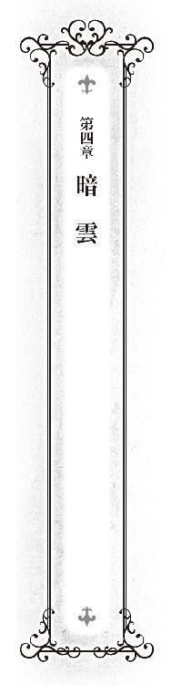
エユランの母の騒動があり、そして帰国してから、数日後。
再び、エンデンブルクには穏やかな時間が流れるようになっていた。
ただし、ささやかな──いや、彼女達にしてみれば、大きな変化が起こっていた。
「......あなた」
以前とは発音と込める想いも違う三文字で、エユランは夫を呼ぶ。
「ここの書類は全てチェックし、後はあなたのサインが必要なだけにしておいたわ」
「......ん。わかった」
午前中、エユランとスレンは執務室にこもり、事務仕事を一緒にするようになっていた。
以前、手伝っていた流れで、自然とそうなったのだ。
仕事中とはいえ、この時間のスレンはエユランのもの。
その独占感を楽しみながら、エユランはスレンと共に事務仕事に勤しむ。
また、スレンにとっても、街の発展と共に増えた事務仕事を片付けるのに、彼女の手伝いはありがたかった。
「......あら？」
そんな中、書類の束をチェックしていたエユランの手がとまり、声をあげた。
そして、もう一度、その書類の束をチェックする。
しかし、エユランのその怪訝そうな表情は変わらなかった。
「ん？ どうした、エユラン？」
「この過去の国家予算の収支報告書、計算が合っていないようですの。というより、故意に改竄されているような跡がある？」
「え？ ああ......」
スレンの目が泳ぐ。
「そもそも、金の流れが変ですのよね。なんで、この国はこんなに窮乏していたのかしら？ 国力を無視した兵力を抱えているとか、国王に浪費癖があるとかならともかく、普通に暮らしていく分なら、ここまでお金が足りなくなるハズはありませんわ」
「ま、まあ、そうだな」
「ねえ、あなた。人間はエルフのことを山賊と陰口を言いますけど、たいした理念もヴィジョンも無いのに、税金を取る国も、盗賊に等しくてよ」
「う、うん。そうだな。ちょっと、早いが昼食にしよう」
わざとらしく時計をみると、スレンはやや強引に、その話題を打ち切った。
午前中がエルフの姫の時間だとしたら、午後は人魚の姫の時間だ。
「行くぞ、スレン。港の拡張の件で、漁協組合から嘆願があるそうじゃ」
食堂で昼食を摂った後、ヴィアがスレンを外へと連れ出す。
名目上は巡察だが、二人とも──特にヴィアがちょっとしたデートを楽しんでいるのは明らかだった。
午前はエユランが夫を独占し、午後はヴィアが夫を独占する。
明確に取り決めをしたわけではないが、いつの間にか、こうしたシェアができあがっていた。
「............」
「............」
夫と人魚の姫が、食堂を出る際、エユランは人魚の姫と目が合う。
お互いに、わざわざ夫の前で諍いを見せないという暗黙の了解を確認しあうような、そんな視線を交わす。
足を引っ張り合って、互いの評価を下げあうような泥仕合をするほど、彼女らは愚かではない。
たとえ、それで相手を蹴落とし勝ったとしても、その女同士のえげつない戦いの様子を見ていた夫が自分達に関心を失ってしまえば、意味がないのだ。
そんなふうに戦いの意味が当初とは変わってしまっている。
だから、楽に勝てる相手ならばともかく、やるとしたら総力戦で、相打ち覚悟で望まなければならない相手とわざわざ喧嘩するのは避けたかった。
そういった意味では、メイドのいつかの言葉通り、互いに力量を認め合っているといえなくもなかった。
食堂で時間をかけて食後のお茶を飲みながら、エユランは窓から、城の外へ出て行く二人を見送る。
「ふふふ、やっぱり、嫉妬しちゃいますか？ エユラン様」
メイドが昼食の片付けをしながら、茶化すように言う。
「まさか。言葉を、感情を表現するものとして使うのではなく、言葉を、感情を整理するものとして使うのが、大人というものでしょ？ エルフの寿命は人間より長いものの、私の中に、嫉妬というくだらない感情に費やす時間はありませんわ」
「......そういうわりには、そのお茶、すでに四杯目なんですけどね」
「私のことはいいのです。それよりも、質問があるのですけど、いいかしら？」
「わたしは中立ですから、ご主人様の性癖などを尋ねられても、お答えできませんよ」
「そんなことは聞くつもりはありません。......というか、何故、あなたがスレンの性癖を知っているの？」
「思春期真っ盛りのご主人様のベッドの下まで掃除したことがありますからね」
そこがスレンのいかがわしいものの隠し場所らしかった。
「......エユラン様、残念ですが、もうそこにはありませんよ」
「べ、別に、ちょっと覗いてみようとか、そんなはしたないことは考えていませんでしたわ。そ、それは、ともかく」
ごほん、とわざとらしく咳払いをすると、エユランは言葉を続ける。
「あなたに聞きたいのは別のことよ。いえ、スレンと無関係というわけじゃないけど」
夫婦といえど別の人格、人間なのだから、夫の秘密は尊重するべきだと思うが、やはり、夫婦間での秘密は少ないほうが良いと、エユランは思う。
「......この国に変なお金の流れが──帳簿に載っていない裏金があるようなの。フェンは、何か知っている？」
内容が内容だけに、少々、緊張しながらの質問であったが、メイドはわりとあっさりと答えた。
「ああ、それは、格好良く言えば、機密費、工作費。......簡単に言えば、賄賂や接待に使われたお金です」
「......賄賂や接待？」
「ええ。エユラン様もご存じの通り、エンデンブルクは独立国といっても小国ですからね。色々とお隣のグラミエル帝国に気を使わなければならないんです。それに使うお金です」
エユランは、ほっと胸を撫で下ろす。
最悪、他の女を囲うためのお金だったら、どうしようかと思っていたが、それぐらいなら許容範囲だし、珍しいことでもない。
「エルフの諺に、こんなものがあるわ『綺麗過ぎる川には蛍も棲めない』。人の世とはそういうものでしょ。いえ、それが決して良い事とは思わないけれど、それが慣例として必要なものならば、ある程度は妥協する必要があるでしょう」
そのお金の存在にエユランが気づいた時の、夫の動揺した様子を彼女は思い出す。
「そう割り切ってくれれば、楽なんですけどね。ご主人様は変に真面目ですから。帳簿に記載しないのは、ご主人様の国王としてのちっぽけなプライドと、ささやかな抵抗なんですよ」
「......そうですの」
詰問口調で夫を責めてしまったことを、彼女は少々後悔した。
と、その時。
「......あら？」
窓から外を眺めると、遠くから早馬が向かって来ているのに、フェンは気づいた。
「......エユラン様、早速、来たようです。外交官という名の賄賂徴収官が。巡察の途中ですが、ご主人様を召集しなければなりませんね」
メイドはそう言うと、早馬の使者を労い、主人の後を追う用意を始めた。
城の中が慌ただしくなった。
良くも悪くもエンデンブルクは田舎で、普段、忙しいなりにもどこかのんびりとした時間が流れているのだが、今日はその面影はなく、本来は街や港の警備にいそしんでいる人員を徴収してまで、急ピッチでおもてなしの用意を始める。
「二人はしばらく、街の宿屋に泊めてもらって。絶対に俺がいいって言うまで、城に近づかないこと。いいね？」
そんな中、礼服に着替えた夫に、二人の妻は城から締め出される。
「............」
「............」
城から、宿に向かう人魚の姫とエルフの姫。
その二人は少々荒れていた。
人魚の姫の方は、あからさまにムッとした顔をしているし、エルフの姫の方は、表情こそ普段とは変わらないが、歩く度に翻るスカートの裾の波がいつもよりも激しい。
「......納得できませんわ」
「......わらわでも、少々怒りを覚えるぞ」
どちらからともなく、そう言って頷き合う。
普段は冷戦状態の彼女らも、この時は同志だった。
「スレンが、私の身を案じてのことだとは、わかってはいるのですわ」
「その私だけみたいな言い方は気になるが、その通りであろう。......スレンはわらわを巻き込みたくなかった、そして、わらわに自分の情けない姿を見せたくないのであろう」
デート──もとい、巡察を中断され、その理由をメイドから聞き、事情を察した人魚の姫が重々しく頷く。
「言い方というなら、あなたの方が多かったですわよ。......それはともかく、夫婦というのは、互いの人生が順調な時ではなく、むしろ逆境の時こそ、その真価が問われるものではなくて？」
「同感じゃな。その夫の危機じゃというのに、わらわの力を借りようとしない、わらわがその場に立ち合わせてもらえないというのは、少々冷たいではないか。妻であるわらわには進んで受け止める覚悟があるというのに」
「でも、もう、面倒くさいので、突っ込みませんわよ。......しかし、そうですわね。スレンとともに分かつ苦労は、私の悦び。スレンとともに分かつ苦難は、妻であることの実感。決して迷惑なものではないのですから、私にも分けて欲しいものですわね」
「そういいながら、煽るようなことをするでない。......本題に戻すと、一応は、そなたと、今この場での目的は一致しておるな」
「ええ、全くの不本意ですけど」
二人の姫は、道の真ん中で立ち止まると、お互いを正面から見据え、睨むように見つめあう。
「......私、あなたのことを信頼はしてはいませんが、信用はしておりますわ」
「......褒め言葉として受け取っておく。わらわもそなたのことが好きではない。が、背中を預けるとしたら、そなたほど心強いものはおらぬと思っておる」
二人の姫はそう言うと、互いにガッチリと握手を交わした。
「ようこそ、おいでくださいました」
城門前。
内心で正反対のことを思いつつ、スレンは笑顔で使者を出迎える。
「ふひひひ、久しぶりですね。スレン国王」
そう言うと、ブレロ外交官は親しげに、スレンにその丸い体を寄せた。
汗に多量の油分が混じっているのか、奇妙にテカテカと光る体を近づけられ、思わずスレンは後方に下がりそうになったが、何とか耐えた。
「しばらく見ないうちに、街が立派になりましたね」
確かにブレロの言うとおり、前回、彼が来た時に比べ、街は発展しつつある。
港、街道という街の血管ともいうべきものは太く広く拡張され、多くの人と物が行き交っているし、街の建物も、そうやって増えた人と物とを収容するために大きく巨大なものが建ちつつある。
「......そうでしょうか？」
その成長過程を共にしているスレンが気づかぬハズはないのだが、あえてとぼけた返事をする。
それを肯定すれば、どうなるかはわかりきっている。
「ええ。そんな余裕があるのでしたら、お土産の方を、期待していますね。本国の方で、何かと入用なのです」
しかし、スレンのそれは無駄な努力に終わった。
グラミエル帝国の使者団が着いたのは夕方ということもあり、そのまま、食堂に案内する。
テーブルの上には、急遽こしらえたとは思えないご馳走が並び、その席に、スレンはブレロとその取り巻き達とともに座る。しかし、いつものようにホスト席ではなく、ホスト席に座るのはブレロで、その隣である。
空いていた杯にワインが満たされると、乾杯を合図に宴が始まる。
付き合いだから飲まないわけにもいかず、スレンも自分の杯に注がれた赤褐色の飲み物を飲む。
「......うっ」
そして、軽く呻く。
接待のために用意したワインであり、値段もそれなりに高価なものだが、不味いものは不味い。
どうして、こんな飲み物をあの連中は、あんなに美味しそうに、飲めるのかと思う。
彼らのように、ただ酒として飲んだのならば、美味しくなるのだろうか。
「そういえば国王、聞きましたよ。なんでも、妻を娶られたとか」
「......ええ、まあ、でもハズレ籤を引いてしまったようです。やっぱり、焦って結婚するのは良くありませんでした。このように、宴会にも手伝いにも来てくれないような妻です。家事もしない、仕事も手伝わない、気を遣えない怠け者の不器量。しかも、そんなのが二人もいるから、大変です」
そうするように仕向けたのは自分であり、心の中で二人に全力で謝りつつ、外交官殿が興味を無くしてくれるように、軽く受け流す。
「そうですか......でも、それはそれで、見てみたいものですね。なんなら、ワタシが調教してあげましょうか？」
「ははは......」
下卑た冗談に、内心、怒りを隠しつつ、追従笑いを浮かべるスレン。
と、その時。
食堂内に、どこからか音楽が響いてきた。
それとともに、食堂のドアが開き、二人の少女が入ってくる。
入って来たのは、エユランとヴィア。スレンの二人の妻達だった。
今まで、うるさいほどにざわめいていた食堂内が、水を打ったようにシンとなる。そしれ、少し経ってから、彼女達の美しさに屈服してしまったような、感嘆の溜息がどこからともなく漏れる。
二人はそれぞれ、気合を入れて着飾っていた。
エユランは、その肢体を包み込むような、独特のゆったりとしたローブのような菫色の服を身に纏っていた。
その服を留めるために、腰周りに巻かれた鮮やかな緋色の帯が印象的で、その帯の緋色と服の菫色とのコントラストは、彼女の深い情熱を表しているようだ。
特徴的な長い耳には、およそ人間の耳には不釣合いであろう、横幅の広い耳飾りが、彼女のその美貌を両脇から照らす月のように、ぶら下がっている。
共に登場したヴィアの方は、その細い体の線を際立たせるような、きっちりとした黒色のワンピースのドレスを着ていた。
そのドレスもまた、独特なものであり、フリルやドレープといった装飾のないサマードレスに似たシンプルなものであり、そういった装飾の代わりに、胸のところに彼女の高潔さを表すように真っ白な百合の花の刺繡が施されている。
さらに特徴的なのは、長いスカートの横に入った深めのスリットだ。そこから、ヴィアのすらりとした真っ白な足が見え隠れしている。
彼女は普段は三つ編みにしている髪を結い上げて、それを真珠と珊瑚の簪で止めていた。
二人は使者達に向けて一礼すると、エユランはどこから持ってきたのか竪琴を弾き始め、その横でヴィアが踊り始める。普段の関係からは想像できないほど、二人の息はぴったりだ。
曲に合わせて、時に激しく、時にゆったりと、緩急が入れ替わる。
その神秘的な踊りに食堂の観客達は、食事をする手を止めて、鑑賞するというよりも魅入られたかのように視線を外せないでいた。
そんな中、一人、我に返ったスレンは、
「......ちょっと、トイレに」
と小声で言うと、そそくさと食堂の外へと出た。
廊下で目的の人物を見つけると、温厚なスレンにしては珍しく、フェンを睨みつける。
「......ご主人様。そんな顔をされても困ります。わたしは何度も止めたんですよ？」
メイドも珍しく本気で困った顔を見せる。
それは主人にそんな顔を向けられているだけでなく、姫君達の予想外の行動も含めて、困惑しているようだった。
「でも、お二人はどうしても、ご主人様を手伝うって、聞かなくて......」
「多分、そうだとは思った。しかし、だな......」
「......ご自身も、八つ当たりしていることには気づいているんですね」
メイドは苦笑する。
「犯人捜しをして、犯人を創り出すことは容易ですが、それは建設的な解決方法とはいえませんよ？ 今は、無事に宴会が終わることを目指しましょう」
「ああ......」
少し冷静さを取り戻した顔で頷くスレン。
「......始まりは金目当てでしたけど、そんなに取り乱すなんて、姫君達だけでなく、ご主人様もきちんと恋愛しているのですね」
祝福するように、そして、少し寂しそうにメイドが小声で言う。
「......ん？ 何か言ったか？」
「なんでもありません。ほらほら、そろそろ音楽がクライマックスのようです。戻った方が良いですよ」
スレンが食堂に戻ると同時に、食堂内は割れんばかりの拍手に包まれる。
その拍手に紛れるようにして、スレンは自分の席に戻る。
「......お初にお目にかかる。エンデンブルク王国、国王のスレン・エンデンブルクの妻、ヴィアじゃ」
「......同じく、エユランです」
二人は、使者に向かって一礼する。
そして、自分の美しさをさりげなく見せつけるような、ゆっくりとした足取りで、ブレロ外交官に近寄ると、二人でその左右を取り囲む。
「......ふひひひ。スレン国王、こんな宝玉を、それも二つも隠していたとは、お人が悪いですなあ」
ブレロが、そう言いながら、その顔に好色そうな笑みを浮かべる。
「......お近づきの印に、まずは一献、どうぞ」
テーブルの上に置かれている数本の酒瓶の中から、一つを摑むと、いつの間にか空いていたブレロのグラスに、エユランが酒瓶を傾ける。
「ほほう、これはありがたい。美人からの酌は、より一層酒が美味くなりますからね」
すぐさま、それを嬉しそうに飲むブレロ。
「良い飲みっぷりじゃ」
それを囃し立てるヴィア。
ブレロは気をよくしたのか、さらにグビグビと飲む。
そして飲み干すと、空いた杯に、今度は、ヴィアが酒瓶を傾ける。
「じゃが、エユランだけでは不公平じゃぞ、わらわの酒も飲んでおくれ」
「ふひひひ、嫉妬とは可愛いものですね。わかりました、飲ませていただきましょう」
ブレロの意識がヴィアに向いている時、エユランはさりげなくスレンに目配せすると、酒瓶のラベルをさりげなく向ける。
それを見て、スレンは二人の思惑を悟る。
二人がブレロに飲ませている酒は、そこらにあるようなワインではなかった。
ワインよりも、アルコール度数がはるかに高いスピリッツだった。
しかも、上品な品質のものではない。少しでも飲んだら悪酔い、二日酔い必至の、スレンからすれば、人間が飲むものとは思えないシロモノである。
エルフの姫と、人魚の姫はそれをブレロに多量に飲ませることによって、早く酔い潰そうとしているのだ。
案の定、その頰の垂れ下がった肥えた顔が、早くも上気して真っ赤になり、目の光が酔っ払い特有の鈍いものとなっている。
「さあさあ、どうぞ」
「どんどん、飲むのじゃ」
しかし二人は、追撃の手を緩めることなく、さらにブレロに酒を飲ませようとする。
ところで、人魚とエルフの二種族の人間に対するイメージは決して良くない。
それは二人の姫も例外ではなかった。だが、エンデンブルク国での生活に溶け込みつつある二人にとっては、そのイメージは変わってきている。
が、人間にも色々といるわけで、その悪いイメージ通りの人間ももちろんいる。具体的にいえば、彼女達の目の前に。
そして皮肉なことに、それを過去のイメージとしてしまっていた二人の姫は、人間に対して少々、警戒心が甘くなっていた。
「ふひひひ。酒も良いですが、今度は違うものを満たしたくなってきました」
そう言うと、ブレロは二人の尻を撫でながら腰に手を回し、自分の方に抱き寄せる。
「きゃっ！ もう、お戯れを」
調子に乗った外交官に対して、内心怒りを隠しつつも笑顔で応対するエユラン。
「随分と悪戯好きな手じゃな」
彼女の腕力であれば、その手を折ることなど造作もないことではあるが、ぐっと堪えるヴィア。
「ふひひひ。実は、国王から、お二人の調教を頼まれているのですよ」
その言葉に、スレンは顔色を失う。
無論、それは噓であるものの、そういった会話があったことは事実だ。
それを二人の妻に誤解されてしまい、自分が夫として失望されてしまうことを、スレンは恐れた。
しかし──。
「それは、噓じゃな」
「噓ですわね」
二人の妻は、それを即座に否定した。
「スレンは私に優しく接してくださるもの。そんなことを言うはずはありませんわ」
「......同感じゃな」
二人の姫は一致団結して、微笑み合い頷き合う。
その二人の妻の笑顔に、スレンの心は温かいもので満たされる。
と、同時に、その妻達に触れている、ブレロに対して強い怒りが湧いてくる。
「ふひひひ、スレン国王は優しいですか。でも、ワタシはもっと優しいですよ。特に、お二人のように美しい女性にはね」
そして、目を閉じその顔を歪ませて唇を突き出すと、さらに二人の姫を抱き寄せて、彼女らの唇を奪おうとする。
「!?」
「!?」
ガッチリと腕を回されて、二人の姫は逃げることができない。いや、彼女らが本気を出せば、こんな腕など関節から破壊することもできるが、それはこの国の将来までも破壊する恐れがある。それは、彼女達の夫が大切にしてきたものを全てぶち壊すことになるのを意味した。
二人がせめてもの抵抗として目をギュッと瞑った、その時──。
その光景を見ていた、スレンの頭の中で、ブチッと音を立てて何かが壊れた。
「ん......？ 随分と冷たい唇なのですね」
ブレロが自分の唇に当たる奇妙な感触に、それを確かめようとゆっくりと目を開ける。
その目に飛び込んできたのは、見慣れた自分の顔。
どういうことなのかと、酔った頭でブレロは考える。
鏡。
そうだ、鏡を見ている。
しかし、何故、こんなところに鏡が？
しかも、この鏡、面積がひどく小さい、映りもとても悪い。
「......ひ、ひぃっっ！」
その目の前の鏡を見た部下の顔が青ざめ、悲鳴を上げた。
「......？」
どういうことかと、再び、鏡をまじまじ見てみる。
鏡は縦に長かった。
その形にそってブレロは視線を上げる。
その先には、怒りに満ちた表情を浮かべるスレン国王の姿があった。
鏡だと思っていたものは、抜き身の剣だった。
「......あ、あ、あ」
ブレロは、最初、声にならない悲鳴を上げたものの、すぐにその面の皮の厚さを発揮すると、平静を装いながら、語りかける。
「乱心なさいましたか、スレン国王？ すぐにその剣を仕舞い──うぎゃ！」
ブレロが最後まで言い終わることはできなかった。
それより前に、剣の峰で叩かれたのだ。
衝撃で頰の肉を揺らしながら、そのまま椅子ごと後方に倒れ込むブレロ。
スレンはテーブルから、ひったくるように杯を取ると、苦手だったはずの酒を一気に飲み干し、空になった杯を床に倒れたブレロ目がけて投げつける。
「ひぃっっ!!」
杯はブレロの顔のすぐ横の床に叩きつけられ、粉々になった。
ブレロは咄嗟に、自分の腰に佩いた剣を抜こうとするもない。
それもそのはず。よくよく見ると、スレンの持っている剣こそが己の剣だった。
丸腰のブレロは、周囲に助けを求めようとしたが、取り巻き達は皆、これまで侮っていた国王の、初めての激怒した姿に驚き、唖然としたまま固まってしまっている。
そんなスレンの姿に驚いたのは、ブレロの取り巻き達だけではなかった。
二人の妻もまた、初めて見る夫の姿に茫然とし、目を丸くして彼を見ていた。
そんな姫達を、スレンは空いている左腕で、強引に抱き寄せる。
そして、最初はエユランに、次にヴィアにと、交互にその頰にキスをする。
まるで、自分のものだとマーキングするかのように。
「......ふぇ？」
「......はう？」
その突然の行為に、心の準備ができていなかった妻達は、力が抜けたように夫にもたれかかると、キスされた頰にそっと手を触れる。そこにはまだじんじんとした熱が残っていた。
「ブレロ、よく聞け。妻達は皆、俺のものだ。いや、妻達だけではない、エンデンブルク国は、全て国王たる俺のものだ。お前はその国土を汚し、妻達の名誉をも奪おうとした。その罪、その命で贖ってもらう」
床に倒れているブレロに対して、スレンは剣を振り下ろす。
剣先がブレロの鼻先をかすめ、そこからツーと血が垂れてブレロの顔面を汚す。
「だが、貴様は腐った人間といえど、グラミエル帝国の外交官だ。命ばかりは助けてやる。俺の気の変わらないうちに、俺の国から出て行け！」
「ひいぃぃ！」
床を這いずるようにしてブレロは後退するとそのまま食堂のドアへと辿り着く。
そこでやっと、人間らしく、その足で立つと、
「お、覚えておきなさい！ こんな小国、ワタシがじきじきに軍を率いてひねり潰してやる！」
そう叫び、一目散に城門を目指して走り出した。
取り巻き達も混乱状態から立ち直ると、少し遅れて、逃走した主人の姿を追って、ドア口に殺到しはじめた。
ブレロを追い出してから一時間ほど経った頃、ガランとした食堂で一人、スレンは食卓に顔を伏せていた。
「......やってしまった」
もう何度、この言葉を呟いたかわからない。
冷静さを取り戻していくうちに、激情にかられて、いかに自分が大それたことをしてしまったかを思い出す。
その性格がどうであれ、ブレロはグラミエル帝国の外交官には違いない。その外交官を追い出したということは、帝国に喧嘩を売ったことになる。
そうなれば、どう考えても、この小国が勝てるわけはなかった。
「......ご主人様、お客様です」
食堂のドアが開き、メイドが来客を告げる。
「後にしてくれ」
「そうは、いきません。この国にとって、もっとも大事なお客様達ですから」
「......もしかして、ブレロ外交官か？ 今回のことを謝罪できるのか？」
「あんな豚ではありません。とにかく、来てください」
メイドはそう言うと、強引に主人の手を引っ張る。
廊下に出ると、二人の妻が所在無さげに立っていた。
「......あなた......」
「......スレン......」
二人ともスレンの顔を見ると、とてつもなく申し訳なさそうな顔をして、俯く。
それを見て、スレンの心は痛んだ。
二人は悪くない。国王である自分の力が足りないから、二人をあんな目に遭わせてしまったわけで、むしろ二人は被害者であるのに。
「エユラン様、ヴィア様も一緒に、お客様を迎えにいきましょう！」
メイドはその二人も連れてずんずんと歩きだす。
その様子を見て、
──......おや？
とスレンは思った。
メイドの足がいつになく弾んでいる。今のエンデンブルクの危機は、フェンも十分に分かっているハズなのに。
メイドは玄関まで、主人と二人の妻を連れてきた。
どうやらそのお客様達というのは、玄関先で待っているらしい、
「ご主人様！」
フェンはそう言うと、玄関のドアを開けた。
そこには──。
「王子様！」
「スレン様！」
「スレンちゃん！」
「姫様！」
「エユラン様！ ヴィア様！」
夜中だというのに、エンデンブルクの街の人々が押しかけてきていた。若い男だけでなく、老人もいれば、女性も、老婆もその中にいた。
その群集の中から、一人の少女が──ヴィアが泳ぎを教えていたミリアムが代表するように歩み出る。
「......姫様、話は聞いたの！ 王子様や姫様をいじめる帝国の人達と、あたし達も、戦うの！」
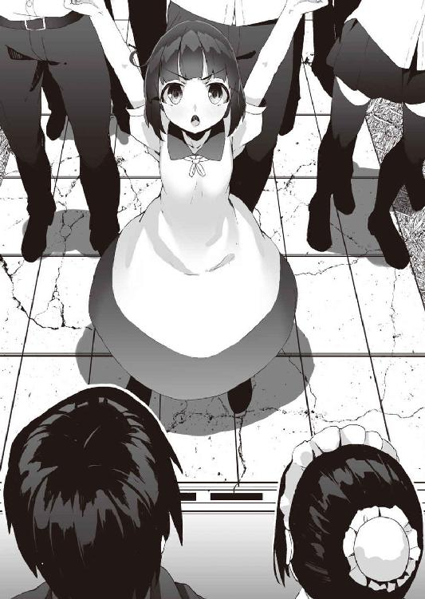
皆を見渡せば、その手には、おもいおもいの武器を手にしている。といっても、あくまで市民であり、農具や漁具が中心だ。中には、何を勘違いしたのか、鍋の蓋やお玉などを持っている人間もいた。
しかし、それらも含めて、彼らの存在を、スレンは何よりも心強いものに感じた。
それは、二人の妻達も同じなのか、心なしか、二人の目が潤んでいた。
「......なあ、スレン。最初、わらわはそなたを国王としてバカにしとった。国民に親しみがあると言えば聞こえはいいが、なんと威厳のない国王なのだとのう。しかし、それはわらわの浅慮であった。......それは、威厳などではなく、もっと大きなものを得るためのものだったのじゃと、今、やっとわらわは分かった」
「......ねえ、あなた。今、こういうことを言うのは、不謹慎かもしれませんけど、あなたが、俺のものだと言ってくれたとき、私、とても嬉しかったですわ。......だから、私はその言葉を一時の噓にして欲しくないし、私のために怒ってくれたことを、後悔して欲しくないわ」
「......つまり、帝国にこのことを謝罪する必要なんかないと？」
「...............」
こくん、と頷くエユラン。いや、エユランだけではなく、ヴィアも同時に頷く。
その二人の目には早くも闘志が宿っている。
謝罪する必要がない。いや、謝罪しても遅いかもしれないが、それが何を示すのか、二人は分かった上で、それを決意した。
国民の決意と、二人の妻の決意は一致した。
後、それを実行するのに必要なのは、夫である国王の決断だけだ。
両隣の二人の妻を始め、城を前に集まった国民達の視線がスレンに集まる。
「......わかった。だが、約束してくれ。みんな、戦争なんてくだらないことで、絶対に死んだらダメだ」
国王がそう言うと、大きな歓声がおきた。
夜が明けると、食堂は作戦会議の場となっていた。
国王と二人の姫が取り囲む、いつもは料理が置かれるテーブルの上には、エンデンブルク王国とグラミエル帝国との国境を描いた地図が広げられ、その上には、各部隊を表すチェスの駒が並べられていた。
ただし、戦力差を反映して、エンデンブルク側が、白のキングと白のクイーン二つ（通常、チェスにおいて、クイーンは一つしかないが、この時のために、他から持ってきて足した）合計駒三つなのに対し、グラミエル帝国側は全部の黒の駒がそろっている。
しかし、実際の戦力差はこれ以上ある。
「国境沿いを警備している軍を呼び集め、それに、市民兵の中の使える人間を足したとしても、こちらはせいぜい、五百」
「逆に向こうは大国な分、接している国が多く、兵を簡単に動かすことはできん。じゃが手元のすぐ動かせる地方軍だけで、三千はあるじゃろうな」
「五百対三千ですか、絶望的な数字ですわね」
しかし、そう言うものの、エユランの顔には絶望感はなく、むしろ強気な表情をしている。それはまた、ヴィアも同じだった。
「しかも、戦いが長引けば、向こうは中央に援軍を要請するじゃろうな」
「が、こちらの同盟関係にあるエルフの国と人魚の国は、帝国と正面からの対立を避けるために、援軍を送ってはもらえないでしょうね」
同盟関係にあるといっても、商業同盟であって、軍事同盟ではない。そこまでの義理は両国にはない。
エユランの言う通り、小国を助けるために、帝国と敵対しようとはしないだろう。厳しいが、国益を最優先に考えれば、それが賢明な判断というものだ。実家を非難することはできない。
「敵の援軍が来る前にかたをつける必要があるな。それならば、三千という数字はわらわ達とってちょうどよいではないか」
「そうですわね」
二人の姫は互いに不敵に微笑み合う。
二人の中で、既に作戦は決まっているようだ。
「防衛拠点はどこにつくるのじゃ？」
「ここでしょうね」
地図のある一点を、エユランは指し示し、そこに白のキングの駒を置く。
「ほほう、さすがじゃな、エルフの姫よ。その地点ならば十分に敵を本国から引き離せる。さらにそこは街道の中でも、海と河に囲まれ、隘路となっていて、もっとも大軍の利が使えぬ場所じゃ。十倍の兵力も相手を包囲できなければ意味がない。そこならば、三千の兵力も、先頭の部隊に対処すればよい」
ヴィアはそう言うと、楽しそうに敵に譬えている黒の駒を街道にそって一列に並べる。そうすると、当然、その先頭しか、白のキングと接しない。
「五百の兵をどう割るつもりじゃ？」
「私が五十。あなたも五十。残りの四百をスレンが指揮。これでどうかしら？」
「こういう戦いをするには、寡兵の方がよい。十分じゃ」
「では、この方針でいくとしましょう」
頷き合う二人。
「スレン、早急に兵の手配をお願いしますわ。これから、私はその兵の編成、訓練に取りかかりますわ」
「スレン、わらわもじゃ。兵を鍛えねばならん。港と船を、少々借りるぞ」
そう言うと、二人の姫は、今度はその細部を詰める話をしながら、食堂を出て行った。
その姿を見送る、国王とメイド。
「ご主人様、いいんですか？ この国の未来に関する重要なことが、国王抜きで決まってしまいましたよ」
「ん......まあ、二人の妻を得るまで、苦労していたんだから、二人の妻を得たら、楽をしてもいいんじゃないか」
スレンはそう言うと、早速、書類を書き始め、二人の妻達の兵の手配の手続きを始めた。
港に向かう途中。
ヴィアは小さな友人に絡まれていた。
「姫様、言ったハズなの。あたしも戦うの！」
ミリアムは武器のつもりなのか、長い棒を片手に持ちながら、ヴィアの手を引っ張る。
ヴィアは腰を屈め、ミリアムと視線を同じ高さにすると、静かに語りかける。
「ミリアム。戦争などという、とてもくだらぬものは、大人達の仕事じゃ。ミリアムには、もっと大事な仕事があるじゃろ？」
「......大事な仕事？」
「そうじゃ」
こくん、と深く頷くヴィア。
「この国の未来を生きるという、とても大事な仕事じゃ。わらわ達はそのミリアムの大事な仕事を守るために戦場へと赴くのじゃ」
ミリアムはまだ少し不満げであったが、ヴィアの言葉に引っ張っていた手を離した。
そんなミリアムの頭を、ポンとヴィアは撫でる。
「そんな顔をするな、ミリアム。わらわはちゃんと、ここに戻ってくるから、大丈夫じゃ」
「......約束なの」
「ああ、約束する」
ミリアムと別れて、ヴィアは港に入る。
エンデンブルクの港は拡張され、漁港と新たに出来た交易港との二つがある。
ヴィアが入ったのは以前からある漁港だ。
彼方に見えるレンガ造りの近代的な交易港とは違い、ここは木製の簡単な埠頭のままだ。
「......ふふふ、懐かしいのう」
海に来た時は、毎日ここを見ているハズなのに、今日は、自分が嫁いできた時の情景が、急によみがえってきて彼女は目を細める。
いつの間にか、この国は敵地ではなく、第二の故郷となっていた。
「......ヴィア様」
その港で、さらに懐かしい声と、その姿を見つけて、ヴィアは驚く。
「......ルートフィ・エヒュリィテ。この国にいるとは噂で聞いていたが」
ヴィアは何年ぶりかで再会した幼なじみの名を呼ぶ。
「くだらない政争の末、滅び去ったエヒュリィテ家の家名はもうありません。ここでは、スレン国王の家臣、ただのルートフィです。ヴィア様、スレン様から兵と、そして船を預かっております。今から我々は、ヴィア様の指揮下に入ります」
ルートフィはそう言うと、港の奥に停泊している船までヴィアを案内した。
「......おお」
その船を見て、ヴィアは感嘆の声をあげる。
船に精通する彼女から見ても美しい船だった。
その美しさの源となっているのは、機能美だ。
長めの舳先と流線形の船型。そして、それと垂直に真っ直ぐに天へと伸びる三本のマスト。
一目でヴィアはこの船に魅了された。
「我々、人魚族が持つ造船技術と、エルフの木材加工の技術が組み合わさった、この国ならではの船です。本来はスレン王の命により、商船とした建造されたものですが、この船ならば戦にも使えましょう」
「ああ、これならば、戦で使えよう。わらわの旗艦として十分じゃ」
「そう言っていただけると助かります。人員は、漁師の志願者を中心に選び構成されております。また、何人か私と同じような人魚族の亡命者がおります」
「賢明な判断じゃ。この国には海軍がなかったからな。下手に陸の兵士を入れるより、海での生活と操船に慣れた民間人を多数入れた方が良いじゃろう。足りない部分は、わらわが鍛え上げればよい」
満足そうに頷くヴィア。
「操舵手、甲板長など人事の方はどうなっておる？」
「それはまだ決まっておりません。これからの訓練で適性を見た上で判断しようかと思っております」
「それならば、ルートフィそなたを副官に任命する。わらわの補佐をせい」
「......私が、ですか？」
「不満か？」
「いえ、ですが......私は生き恥をさらす身です」
ヴィアは、表情が見られないように、ルートフィに背中を向けると、静かに、しかしはっきりとした口調で語りかける。
「生きて恥をそそぐ道を歩むのと、死してその道を歩むのを止める。そのどちらが苦難の道であるかは決まっておるであろう。そなたはもう十分にその苦難の道を歩いた。それは、あの湾内に浮かぶ港を見れば、誰しもが納得しよう。しかし、他ならぬそなた自身が納得できるというのなら、わらわの右腕となって、この戦で存分に功をあげよ。われら人魚族の力を存分に、天下に示そうぞ。そうすれば、頑固なそなたも納得できよう」
「......ヴィア様。この非才、存分にお使いください」
ルートフィは、そう言うと、深く頭を垂れた。
「......姫様」
郊外に待機させた自分の部隊に向かう途中、エユランは一人の老人に呼び止められた。
その老人は今日は、商人の格好ではなく、軽装ながらも戦闘用の格好をしていた。
「あら、イワーネス。今日は変装はしていないのですね」
エユランのその言葉を無視して、イワーネスは言葉を続ける。
「長からの命令です。本格的に戦争状態に突入する前に森に帰ってくるようにとのことです。エルフ族はこの戦争により、エンデンブルクの命運は尽きると考えています」
しかし無論、エユランはその命令に従うつもりはない。
だが、父の性格を考えると、それを見越して保険をかけているはずだ。
「イワーネス。あなたは、もう一つ命令を受けているのでしょう？ 私がそれに従わぬ場合には、あなたが強引に連れて帰れと」
「..................」
その問いにイワーネスは何も答えなかった。
無言の肯定。
「..................」
エユランの顔に緊張が走る。
彼女に弓を始めとする武芸の師匠を務めたのは、他ならぬイワーネスだった。
その当時より、イワーネスは老いたとはいえ、エユランがその妨害を止められるかといえば、不可能に近い。
「ですが、このイワーネス。別の命も受けております。ハイミーナ様から」
「......お母様から？」
「はい。姫様のことを全力でサポートせよと。あの子の願いを叶えてあげなさいと」
それは命令であると同時に、エユランを見守り続けてきたイワーネスの願いとも重なるのだろう。
イワーネスの頰が緩み、いつもの孫娘を見るような優しい表情でエユランを見る。
「......最近の姫様は良いお顔をされるようになりましたなあ。それを見ていると、このイワーネス、老骨に鞭を打って、もう一働きをしても良いと思えます」
「......イワーネス、ありがとう」
エユランはイワーネスの皺くちゃの手を両手で取ると、ぎゅっと握り締める。
「では、これから行う、兵の鍛練を手伝ってちょうだい」
「短期間で使えるようにしましょう。ふふふ、長生きはしてみるものですな。人間相手に、エルフ式の戦闘術を教える日が来るとは」
「私達だけではないわ。人魚の姫も今頃はそうしているはずよ」
「ほほう。そちらの方が、姫様にとっては、帝国よりも強敵かもしれませんな」
「......イワーネス、くだらないことを言ってないで、行くわよ」
からかわれ、顔を真っ赤にしながらエユランは老人の手を引き、ズンズン歩き出す。
イワーネスは、手を引かれながら、城の方を──姫の懸想している相手のいる方向を眺める。その目は、いつになく真剣な光を放っている。
「......姫様、人間は、エルフのことを山賊。人魚のことを海賊と呼びますな」
「そんなふうに陰口を叩く下賤な方々もおりますわね」
「......海賊と山賊。その二人の姫の心を盗み、その二つの力を手にした婿殿は、もしかしたら、天下さえ盗んでしまうかもしれませんなあ。いやはや、そしたら婿殿こそが大盗賊になりますなあ」
「......イワーネス、何か言いました？ 聞こえなかったのですけど」
「婿殿は大盗賊と」
その皺くちゃの手にエユランは爪をたてる。
「......姫様、老人はもっと労って欲しいですなあ」
「......イワーネス。スレンの悪口を言ってもよいのは、私だけです」
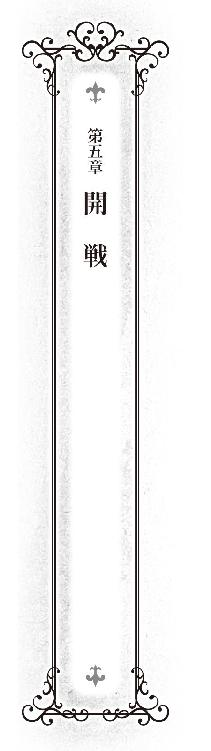
鎧の下に着るチュニックに着替えたスレンは野外で空を見上げていた。
この日の空は、雲一つなくて、絵の具を溶いて描いたような澄み切った水色がどこまでも広がっていた。
「......いい青空だなあ......こんな日に、戦争をするなんてもったいない」
「そうですね。こんな日は、お弁当でも持って、ピクニックにでも行きたいところですね」
「帝国軍、今からでも本国に帰ってくれないかな」
「最新の情報によれば、帝国軍は順調にエンデンブルクを目指して街道を進軍中です。......ご主人様、そろそろ現実逃避から戻ってきてください」
メイドが軽く主人をたしなめる。
「お前だって、軽くノってきたくせいに......」
軽い溜息とともに、スレンは視線を地上へと戻す。
ここは、地図でいえば、エンデンブルクと帝国とを繋ぐ街道上。作戦会議中にエユランが防衛拠点を構築するように指し示した地点だ。
数時間後にここは戦場となる。
エユランの指示通り、ここには突貫工事ながら要塞が構築され、今は、その臨時の城壁を補強し、兵士の持ち場を今一度確認しているところだった。
「若様、食料や武器を運んできましたぞ」
その要塞内に、荷馬車が到着にする。
その御者を務めているのは、本来はエルフとの国境を警備しているロバートだ。
今回の戦を前に、そういった警備兵も招集され、それはロバートも例外ではなかった。
「......ありがとう。ロバート」
「......若様、やっぱり、わしは前線に立ちとうございます」
ロバートがうずうずとした表情でスレンを見る。
そのロバートの全身は、チェーンメイルに覆われ、補給が任務とは思えぬほど重装備だ。ロバートのせめてもの抵抗。
「ロバート、以前にも話しただろう？ ロバートは前線に立つよりも、補給を担当して欲しいんだ」
「......しかし、若様」
「どんな難攻不落の要塞も、食料、武器が尽きれば、それは単なる張りぼてに変わってしまう。補給というのは戦線を維持していくのに大事なものなんだ」
「それはわかっておりますが......」
「特に若い兵士は、それがわかっていなくて補給を軽視している者が多くて困る。確かに前線で戦うのも功だけど、補給を滞りなくやり遂げるのが、それ以上の功だということを知らない。......ロバートはそうじゃないよね？」
「も、もちろんですじゃ、若様！」
「うん。だから、経験豊富なロバートに、この任務を任せたいんだ」
「ハッ！ 若様、承知しました」
ロバートは先ほどとは違い、生き生きとした顔で敬礼すると、荷馬車を操り、街へと戻っていた。
「......ご主人様、いますよね。自身の才能と、希望が果てしなくミスマッチしている人。神様はロバートさんに人徳を与える代わりに、剣の才能を奪ってしまったのですね」
メイドがしみじみとそう呟く。
ロバートが去った後、今度は二人の妻が緊張の面持ちで、スレンのもとにやってくる。
「......あなた」
「......スレン」
妻子を置いてきた、他の兵士達に悪いとは思いつつも、スレンの心は和む。しかし、その顔がいまいち晴れないのは、さらなる心配事ができてしまうためだ。
「......できれば、今からでも城に帰って欲しいところだけど......」
その夫の言葉に対して、二人の妻は息もぴったりに首を同時に横に振る。
「深窓で優雅にお喋りをしているだけの普通の姫とは一緒にしないでくださる？ これでも、一軍の将として恥ずかしくないだけの修練は国元で積んできたつもりですわ」
「スレンはそうして欲しいかもしれぬが、わらわは自分だけ安全なところでこそこそと隠れて夫の帰りを待つなど、性に合わん」
彼女らの言う通り、二人は戦場に出るつもりだった。しかも、この要塞を守るスレンの本隊とは別れて、別行動を取る。
二人の服装も普段とは違い、戦闘用だ。
エユランは、その長い髪を結い上げて、動きやすいようにズボンにブーツを履いている。装備しているのは嫁入り道具として持ってきた合成弓。そのため、胸当てをし、腰には矢筒を下げている。
ヴィアの方は、その髪を三つ編みにしているのはいつもの通りだが、その頭に提督であることを表す提督帽を被り、プリーツスカートをはいている。スカート姿なのは、いざというときに、尾ひれを生やしやすくするためだろう。装備しているのは嫁入り道具として持ってきたトライデント。ただし、船上で使うことを想定した短いものだ。
これから戦場に赴く二人のそんな姿は、神話に出てくる戦女神を連想させた。
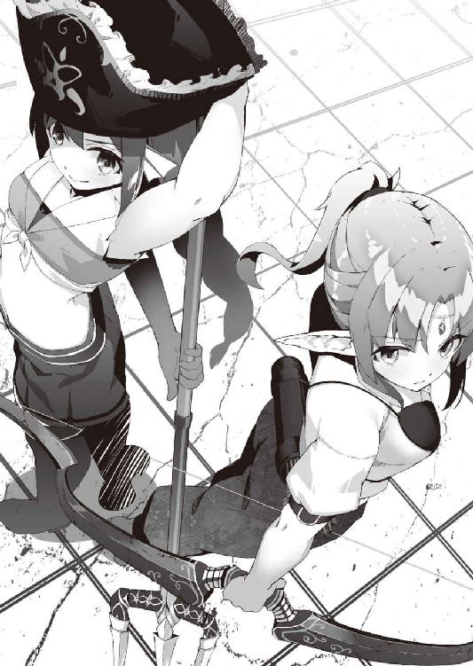
「そんな顔をするでない。指揮官がそんな顔をしていては、兵士達が不安がるであろう」
心配が顔に出てしまっていたのだろう。ヴィアがスレンをたしなめる。
「そうですわ。私達は本隊と戦うのではないので、危険は少ないですわ。むしろ、私はあなたの方が心配ですわ。私達が戻ってきたときに、私達の帰る場所がなくなっていたら、私、イヤですわ」
「ああ......ここは、俺が死守するよ」
「スレンが死んだらさらにイヤじゃ。そなたこそ、壮健でいてくれよ」
「ああ、わかった。約束する」
頷くスレン。
「では、出発前に私の部隊の食料をいただきますわ」
「わらわもじゃ」
二人はそう言うと、部下達に先ほどロバートが運んできた物資の中から、食料を確保するように指示する。
「......それだけで大丈夫なのか？」
スレンにはその量が余りにも少なすぎる気がした。
「そなた、先ほど言ったではないか」
「......？ 何をだ？」
「ロバートに、補給が軽視されがちで困ると。それは何もエンデンブルクだけの話ではあるまい」
「ええ、あなた。大丈夫ですわ。足りない分は帝国軍からいただきますから」
二人の姫はそう言うと、不敵に微笑んだ。
「それでな、スレン。難しい話はこれぐらいにしてじゃな......」
ヴィアはそう言うと、その三つ編みを落ち着きなく揺らしながら、上目遣いでスレンを見る。その頰は少し赤い。
今のスレンはその意味が分からぬほど鈍くはなかった。彼女達とのしばしの別れが辛いのはスレンも同じだ。
スレンは、ヴィアのこれから戦場に立つとは思えないほどの小さな体をそっと引き寄せる。
そして、スレンは、ヴィアの頭の上に乗っている帽子を取ると、そのサラサラとした頭を撫でた。
「わっ......」
少し驚いたようなヴィアの声。
メイドを始め、周囲の兵士達から冷やかすような視線が送られてきたが、今は無視した。
「い、いきなり、なんなのじゃ、びっくりしたではないか」
スレンから解放されると、ヴィアは未だに不機嫌そうにそう言った。しかし、顔は真っ赤であり、その目もどことなく潤んでおり、全く迫力がない。
「......あ、あなた」
それを見ていた、エユランがその耳を落ち着きなく上下させながら、おずおずと背が高いためにいまいち高低差が足りない上目遣いで、スレンを見る。
「え？ エユランも頭、撫でて欲しいの」
「い、いえ、別に......そうではなくて、撫でて欲しくないわけではないですわ」
支離滅裂な言いようだったが、真意は分かった。
「ご、ごめん、エユランは背が高いから、少し意外だったんだ」
「私の夫は、背の高さで愛情を差別しますの？」
むくれたように言うエユラン。
スレンは、その謝罪の代わりに、そのむくれた顔ごとエユランの体を、そっと抱き寄せる。
そして、少々手を伸ばしながら、ヴィアと同じく、しばしの別れを惜しむように、その絹のような髪を撫でた。
「............」
エユランは、その耳を嬉しそうに垂れ下げた。
「......はじまったな」
スレンと別れ、船上の人となったヴィアは、沖から望遠鏡で要塞を眺める。
今まさに、帝国軍が到着し、街道を塞ぐ要塞に攻撃をしかけ始めたところだった。
「スレン様は大丈夫でしょうか......」
副官として傍らに控えるルートフィが心配そうに言う。
「一ヶ月は大丈夫であろう。思ったよりも、敵の指揮は悪くはない。が、兵士達はもうすでに勝った気分で攻めておるからのう、わらわ達にとっては助かる」
敵である帝国軍の兵士達は、すでに勝利を確信している。
何せ圧倒的な戦力差だ。勝てないほうがおかしい。
すると兵士達の意識は、目の前の戦の勝敗ではなく次のことに移ってしまう。
この戦をどう生き延びるかに。
勝ち戦も生き残らなければ、恩賞はもらえない。それゆえ、どうしても兵の意識は生へと傾いてしまうのだ。
そうなった兵士達は脆い。
その矛先は鈍り、自分の命を気にするようになり、脆弱な兵士に変わってしまう。
今現在、帝国軍がそういう状態にあることをヴィアは見抜く。
しかし、大軍には変わりなく、このまま数頼みの消耗戦に引きずり込まれれば、持つのはそれぐらいの日数であると、ヴィアは計算した。
「いや、スレンの指揮は悪くないから、それにあと一週間は加算できるな。内政だけの男かと思っていたが、なかなかやりおるわい」
ヴィアは夫の奮闘する姿に嬉しそうに、もう一度、望遠鏡を覗き込むと、今度は敵軍を中心に眺める。
そして、蛇のように長い列となっている敵陣の中ほどにある、本陣を示す豪華な旗を掲げた部隊のところでレンズを止める。
「それぐらいの日数をかければ要塞を落とせよう。じゃが、そんなにゆっくりで大丈夫なのか？ エルフの姫はそなたの後ろに回りこんでおるハズじゃぞ」
人魚の姫はそう言うと悪い笑みを浮かべた。
その顔はまさしく海賊と呼ばれるに相応しいものだった。
その数日後、エルフの姫は、人魚の姫の言っていた通りに、帝国軍の後方へと回りこんでいた。
要塞から遠く西に進んだところにある、エンデンブルク王国とグラミエル帝国とを繋ぐ街道の中間地点。
そこには街道に沿うように森が広がっている。
このあたりは両国の国境線が曖昧な地域であり、トラブルを防ぐ意味もあって、街道がある以外は人の手が届いていない状態だ。
その森に身を隠しながら、エユランは街道を眺める。
「あら、意外と早くつきましたわね」
「そうですな」
エルフの主従の会話に、率いられて来た人間の部下達はその疲れた顔の中に驚きの表情を浮かべた。
ここまでの道程は楽なものではなかった。
現在、街道はいわば、帝国に占領された状態にある。
それを避けるために迂回して、森を掻き分け、道無き道をひたすら進んできた。前もって、そのための訓練を積んでいたとはいえ、その道中、遭難という言葉が何度も頭を過った。
彼らにすれば、きちんと目的地のこのポイントまで辿りつけただけで奇跡だと感じていた。
しかし、それは人間のみの感覚で、エルフはそうではなかったらしい。
実際、彼らを案内してきたのは、この二人だった。
人間は方向感覚と距離感を失うと、歩くだけでもひどく消耗する。慣れない道を歩くと同じ距離でも長く感じてしまうのは、このためだ。
森というのは、皆同じに見える風景が連続し、その方向感覚と距離感を喪失しやすい代表的な場所なのに、二人はまるで自分の庭を歩くかのようにしっかりとした足取りで先導して歩き、部下達を──人間達をここまで導いてきた。二人にとっても、この森は初めてくる場所のはずなのに、だ。
そしてエルフといえど、女性に老人と体力的に恵まれているとはいえないはずなのに、息一つ切れていない。
知識としてはあったが、エルフの森での地の利がここまでとは思わなかった。
部下達は、さすがは森の民のエルフだと感心し、そして、そんな彼女が指揮官であることを誇りに思い、敵でなかったことに安堵した。
「ふふふ、これなら早速、襲えそうですわね。森でゲリラ戦をおこなって、エルフに敵う種族などありませんわ」
森に潜む彼女の前を、帝国軍の補給部隊の荷馬車が何度も通っていく。
その数も、本隊の兵士数に比例して多い。
エユランの部隊が、帝国軍の後方に回りこんだのは、その背後から敵の本隊へと攻撃をしかけるためではない。
直接的な戦闘をなるべく避けながら、こうした補給部隊を叩くためだ。
「......皆さん、もう一働きしてもらいますわ。これから敵の補給部隊を襲います。目的は敵の補給線を絶つことであって、敵の兵士を殺すことではありません。戦闘はなるべく避けて、敵の荷馬車だけを襲いなさい。そこから私達の分の食糧確保を忘れないこと。ただし、欲張ってはいけませんよ。相手が本気になって追撃をしてきたら、私たちは勝てないのです。その逃げ足が鈍るようなことはよしなさい。いいですわね？」
エユランのその美貌と指揮官としての実力に魅せられ、崇拝の念を強くしつつある兵士達は頷くと、森にその身を隠しながら、一斉に矢を番え始めた。
はじめ、それは虫の大群が空を舞っているのだと思った。
しかし、それが落下しはじめ、点だったものが大きくなっていくと、その正体に気づく。
矢だ。それも、先端が燃えている火矢だ。
「敵襲！」
帝国軍輸送隊の中から、どこからともなくそんな声が響く。
落下し始めた矢は、荷馬車の積荷部分に命中し、そこから大きな炎をあげ始める。驚いた馬が飛び上がり、御者を振り落とすと、そのまま狂乱状態で、どこかに走り去っていく。
そんな混乱状態の帝国軍に向けて、森から何かが飛び出してくる。
「エンデンブルク軍が、何故ここに!?」
帝国の兵士達から驚きの声が上がる。
そこには、はるか前方で縮こまっているはずのエンデンブルク軍がいた。
しかし、その理由を帝国軍はすぐに悟る。
特徴的な長い耳をした恐ろしいほど綺麗な女が、襲ってきた部隊を指揮していた。
エルフ族の森を利用しての戦いの上手さは、大陸中に響き渡っている。
「く、エンデンブルクがエルフの娘を娶ったという噂は本当だったのか!?」
その指揮官こそが、その噂の娘なのだが、帝国軍の兵士達は別の人物だと思い、まさか最前線にいる彼女こそが、そのエンデンブルクの王妃だとは思わなかった。
「落ち着け！ 敵は少数だ！」
帝国軍はそう声をかけあい、部隊の混乱の収拾をはかる。
そう。補給部隊といえど、冷静に見渡せば、敵よりもこちらの方が大人数なのだ。
時間は思ったよりかかったものの、何とか混乱を収め、防御態勢を整える。そして、反撃に移ろうとした、その時。
それをあざ笑うかのように、絶妙なタイミングで、敵が森の中へと引き上げていく。
「くっ、追え！ 追え！」
頭に血が昇っている兵士がそのまま追撃しようとする。
が──。
「ま、待つんじゃ！」
背後から老齢の兵士に足を摑まれ、その場に倒される。
「な、何をす──」
そう抗議しようとした兵士の頭上を、矢が通過していった。
頭に昇っていた血が一瞬にして引き、倒された兵士の顔が青ざめる。もし、倒されなければ、確実に自分は死んでいた。
「エルフはな、退く時に、必ず何人か狙撃手を森の中に配置しておくんじゃ。無闇に追撃しては、命を落とすだけじゃ」
諭すように老齢の兵士が言う。
帝国軍の目の前で森が揺れる。
それは単に風によって煽られただけかもしれない。
しかし、この広大な森全体に、敵の大軍が潜んでいるような妄想に襲われ、帝国軍は戦慄した。
街道上に立ちふさがっている要塞から少し離れたところに布陣した、帝国遠征軍の本陣。
そこには金糸で編まれた指揮官を表す豪華な旗がこれ見よがしになびいている。
その旗が掲げられた帷幕の中に、この軍の副将が飛び込んできたのは、真夜中のことだった。
「ブレロ様。我が軍の補給線が、エンデンブルクの別働隊に荒らされ食料が不足しています」
叩き上げの老練の将軍は跪き、重々しく報告する。
それに対し、すでに眠りについていたブレロは寝台から上半身だけ起こすと、不機嫌そうに、
「そうですか」
とだけ言った。
「ブレロ様、どうするのです？ このままでは、我々はここで、飢え死にすることになりますぞ！」
「みっともないですよ、帝国軍人が、そのように取り乱すなど。まだ、二週間分は運んできた食料があるでしょう。すぐに飢え死にするわけではありませんよ。まったく」
「し、しかし......、二週間で、あの要塞が落とせるのですか？」
今日でちょうど一週間、要塞を攻めたててみたが、落とせるどころか、その綻びを見つけることもできなかった。
エンデンブルクの王は、まだ若輩と聞いていたが、なかなか老練な兵の指揮をしていた。
要塞というのは、結局、入れ物に過ぎない。
その中に入る、将と兵によって、それが、難攻不落にも、単なる障害物にも変わる。
今の副将の手応えからすると、帝国軍の前に立ちふさがっている要塞は、難攻不落とは言わないまでも、落とすのに一ヶ月前後はかかるだろう、というものだった。
「そうするのが、アナタの仕事でしょう。兵法では城を落とすのには、城に籠もる兵力の三倍が必要だそうです。エンデンブルクの国力から兵力を推定すると、ワタシ達はその十倍の兵力があるのに、落とせないというのは、現場指揮官である、アナタに問題があるということでしょう」
「......くっ」
ブレロの言い様に、副将はギリッと歯嚙みする。
「ですが、二週間では落ちないというのには、ワタシも同感です。まあ、じっくりと攻めましょう」
「ですから、そのじっくりと攻める余裕がなくなっているのです！」
「案ずる事はありませんよ。ワタシも食料が足りなくなる事態を想定してなかったわけではありません。何しろ、三千人の胃袋というのは、食料がいくつあっても足りませんからね。......おかげで、貯めたお金を使うはめになりましたが」
「......貯めたお金？」
「な、なんでもありませんよ。とにかく、アナタは自分の仕事に専念してください。一刻も早く、あの邪魔な要塞を落とせるようにね。そうすれば、そんな悩みなどなくなりますからね。フヒヒヒ」
そう言うと、ブレロはその腹を揺らして笑った。
「......補給の方、期待しておりますぞ、ブレロ外交官」
副将は吐き捨てるように言うと、帷幕を後にした。
早朝、朝靄が立ち込める海上。
甲板に立ち、目を細め、海を眺めるヴィアの視線の先に、艦隊が現れた。その艦隊の掲げる旗は勇壮なる獅子が描かれたグラミエル帝国のものだ。
「ふふふ、陸上の部隊を援護するなら、この海域を通ると思い、網を張ったかいがあったものじゃ」
海の上でもよく通る声で、ヴィアはそう言うと、総員に戦闘準備をするように指示を下す。
向こうも、こちらの存在に気がついたのだろう。
それまで穏やかだった艦隊の雰囲気が変わり、物々しいものになる。
あちらも戦闘準備を始めたようだ。
「船団に向かって停船命令を出せ。無論、あちらは無視するであろうが、礼儀じゃ」
旗信号でヴィアの船が、船団に向かって停船命令を出す。
しかし、予想通り、それは無視され、船団は進むのを止めない。
それはそうだろう。
創設されたばかりのエンデンブルク海軍は、艦隊とは呼べない船一隻。
しかし、帝国軍は十隻の船団。そのいくつかは補給船であって、戦闘用ではないとしても、戦力の差は明らかだった。その上、帝国軍は海戦で有利な風上に位置している。
「ほほう、そうでなくては困る。きっと今頃、エユランが美味しい思いをしておるからのう。わららも武功を上げる機会がなくては不公平じゃ。......ルートフィ、攻撃命令を出せ」
ヴィアは隣に控えるルートフィに、そう指示を出す。
「あっ、ヴィア様」
「わらわも出るぞ。船の指揮を頼む」
ヴィアはそう言うやいなや、嫁入り道具としてもってきたトライデントを摑むと、そのまま、甲板から海へと飛び込んだ。
海面を突き破る衝撃と共に、無数の泡がヴィアに絡みつく。
本来の棲み家である海を感じた両足が、早くも姿を変えていく。
ヴィアのスカートの下から瑠璃色の鱗に覆われて巨大な尾ひれが現れる。
本来の姿となった彼女はその尾ひれを躍動させながら、海中を進む。
ここでは、彼女を遮るものは何もない。
そう、海は人魚の領域なのだ。
ここでは、人魚こそが支配者であり、征服者であり、海戦で勝てる他種族などないのだ。
ヴィアは、敵の艦隊の真下へと移動すると、その船底を、持っていた槍で滅多刺しにし始めた。
見かけは折れそうな乙女の腕でも、その内に怪力を秘める人魚の腕。
その腕力から繰り出される刺突は、分厚い木材を貫通し、船底に孔を空ける。
船は底に積んだバラストを海の中に撒き散らしながら、次々と浸水していく。
──......これぐらいでよかろう。
頃合と見たヴィアは、自分の母艦へと引き上げる。
敵の艦隊を眺めると船が傾いていた。
「ヴィア様、お疲れ様でした」
縄梯子で引き上げられ、甲板に戻ってきたヴィアに、ルートフィはタオルを差し出す。
「......また、旗信号を出せ。今度は、降伏勧告をじゃ」
タオルで髪を拭きながら、ヴィア。
「ふむ。やはり、わらわは、船の上で、指揮をするより、こちらの方が性に合っているのう」
「......あまり前線に出られると、スレン様の心労が増しますよ」
「スレンへの土産ができたからな。大目に見てくれるであろうよ」
敵の艦隊を見ると、白旗を揚げていた。
戦う前に浸水してはそれどころではない。木造船だから完全に沈没はしないだろうが、航行不能の状態だ。
海の上に逃げ場はなく、進退が窮まれば、降伏するより道はなかった。
その降伏した船には、スレンへの土産が──もとい、前線に運ぶつもりだった積荷がたっぷりとあるはずだ。
「人員を救助するとともに、積荷を運び出せ。修理してすぐ使えそうな船は、そのまま曳航する。これで、戦局は大きく傾くはずじゃ」
現地調達が難しい、計画的に港に寄港していかなければならないなど、様々な制約がつきまとう海での補給は陸よりも厳しい。
そういう環境下で育ったヴィアは、補給の重要性をよく認識している。
帝国軍の五千という兵力。
それは心強い戦力には違いない。
が、しかし、人数が多ければ、それだけ食料を早く食い潰す存在であり、その数に比例して、太く保っておかなければならない補給線が維持できなければ、それはつまり、自滅に向かう速度も早いことをヴィアは見抜いていた。
「う～む」
床几に腰かけながら、テーブルの上に広げられた地図を眺めていたスレンが唸る。
地図に書かれているのは、この要塞を中心とした周辺の見取り図だ。
その上に、敵兵代わりのチェスの駒が配置されている。
要塞の正面に密集しているのはもちろんだが、その側面の海にもいくつか配置されている。
先日の、急造の筏を使っての帝国兵の奇襲を再現したものだ。
未だこうしてスレンが要塞内にいるのからわかるとおり、その奇襲は撃退できたのだが、その意図がわからず、スレンは悩んでいた。
要塞に籠城し始めて、二週間。
今までは、兵力にものをいわせた消耗戦に引きずり込むような戦い方だったのに、小細工を挟むようになってきた。
膠着した戦線を変えるために、小細工を弄することは珍しくないのだが、帝国軍のそれは無謀としか思えない手が多い。
五千の兵が、元手としてあるのだから、それぐらいの余裕はあるにしても、不可思議だった。
「......敵の攻め方が変わってきたな。指揮官が替わったのか？」
奇襲といえば聞こえは良いが、兵を小出しにするやり方は賢いとは言えない。
各個撃破されてしまう危険性が高いからだ。
案の定、その兵士達は捕虜となり、エンデンブルク本国へと護送中だ。
「それだけ、ご主人様の花嫁さん達が頑張っているんでしょうね」
朝食を持って来たメイドがそう言う。
「......？ 関連性がわからないが？ そういう兵法でもあるのか？」
「単純な引き算の問題ですよ」
フェンはそう言うと、スレンに渡そうとした朝食のパンを二つに割って、そのうちの一つを自分が食べた。
戦場での数少ない楽しみを奪われたスレンは涙目になるも、メイドは気に留めた様子もなく、解説を続ける。
「このように、私とご主人様の二人がいたら、パンは半分しか食べられなくなるわけです。......その逆で考えてみましょう。ご主人様がいなかったら、私はパンを一つ食べられるわけです」
「......なるほど、そういうことか」
メイドのいささか失礼な譬えも、この時ばかりは忘れて、スレンは得心する。
つまりは、敵は五千の兵力を急激に減らそうとしているのだ。
戦争中なのに、そんな不合理とも言えることをしているのは、それを維持できる食料が少なくなったためだ。
「死人に口なしというわけです。死んだ人間には、食べ物が要りませんからね。生き残って、捕虜となっても、食わすのはエンデンブルク軍で、帝国軍の食料を消費するわけではありませんから。......あ、もちろん、この諺の本来の意味をわたしは知らないわけではありませんよ」
敵にしてみれば、ダメでもともとで、成功すれば儲けもの。むしろ、失敗することが前提で、そここそに無謀とも思えた奇襲の深慮遠謀があったのだ。
「ああ、だから、敵の士気が低かったのか」
その奇襲部隊は簡単に降伏し、捕虜となった。
それも死ぬことが前提の作戦に従事させられたと思えば、合点がいく。
「......そろそろ、戦の終わりも近いかもな」
「勝ったわけでもないのに、そういうことを言うのはとっても不吉ですよ、ご主人様。でも、どうして、そう思うんです？」
「戦争は多数の死者が出るものだが、それでも、兵士達に命を捨てさせるような作戦をたてはじめた国が、戦争で勝ったという話を、俺は知らない」
敵であろうとそういう戦い方が嫌いなのか、少し不機嫌そうにスレンは言った。
「心強い話です」
メイドはそう言うと、主人の分と自分の分の、残りの朝食をテーブルの上に並べ始める。
それは一般の兵士に支給されているものと変わらない、豪華とは言えない食事だ。
「......他の兵士達にも、ちゃんと行き渡ったか？」
「はい。後はご主人様と、わたしだけです」
それを確認してから、スレンは、口を付け始める。
一緒に食事をしながらフェンは、さきほどの主人の言葉を思い出す。
それが希望的観測だと自覚しながらも、その話とは対極の兵士を第一に考えている戦い方をしているスレンは、この戦に勝てると思った。
そして、先ほどのお詫びとして、自分のパンの半分をさりげなく主人の皿に移した。
「それにしても、ご主人様、まだチュニック姿のままなんですね。プレートメイルの方はどうなされたんですか？ まさか、売ってしまったんですか？」
メイドの言うとおり、スレンは未だ鎧を装着していないし、近くにもなかった。
後半はさすがに冗談だが、実際、プレートメイルは高価で、裕福な将官クラスでないと買えない代物だ。
「ああ、もっと前線で働いている兵士にあげた」
こともなげにスレンは言った。
「......ここも、十分、前線だと思いますがね」
周囲の壁に刺さっている無数の流れ矢を見ながら、メイドがあきれたように言う。
「ご主人様、チェスというゲームをご存じですか？ どんなに相手に優位であっても、キングが取られると負けなんですよ」
ご存じなのを知っているのに、あえて疑問系で言うメイド。
「むう、お前だって、メイド服のままじゃないか」
「わたしはいいんです。メイドですから」
「......そもそも、何故、お前が前線にいる？」
このメイドだけでなく、二人の妻に対しても言いたいことが色々ある。何故、自分の身の回りの女性は前線に行きたがるのだろうかと、スレンは思う。
フェンがいることで食事とか助かっていることも多いのだけれども。
「愚問を。城の、台所や洗濯場が、わたしの居場所ではありませんよ。ご主人様の隣がわたしの居場所です。ですから、ここにわたしがいるのは、当たり前のことです」
メイドはそう言うと、主人のコップに、お代わりのお茶を注ぐ。
と、その時。
「「「「「「「「オオオッッ───！！！」」」」」」」」
と、城壁の外から、これまでにないほどの野太い鬨の声が響いた。
朝食を中断し、スレンとフェンは近くの城壁に上り見下ろす。
そこには、狭い街道を染め上げるほどに密集した帝国軍の姿があった。
「ふん、初めからこうすればよかったのですよ」
太り過ぎて馬に乗れず、輿に乗って指揮をしているブレロが満足そうに前線を見渡す。
彼の乗る輿は四人で担がれ、特注のそれはところどころに金細工をあしらわれ、いやらしい光を放っている。もし、これにつぎ込んだお金でもっと補給線を強化していたら、兵が飢える心配はなかっただろう。
前線では、城壁をよじ登ろうと兵士達が蟻のようにたかり始めたところだった。
「ブレロ様、このような無謀な戦いは止めるべきです。たとえ、勝ったとしても、大きな被害が出るでしょう。ここは大人しく撤退すべきです。我が軍にはまだなんとか余力があります。余力のあるうちにしか、撤退はできません」
副将の男が、その輿の前に嘆願するも、ブレロは冷たい目を向けた。
「その余力を、全部ここでつぎ込むのですよ。この要塞を取れば、食料問題は解決するのです。要塞内には食料が蓄えられているでしょうからね」
「しかし、ただでさえ、狭い街道にこうも兵士を投入しては、進退が思うようにできず万が一、敵の罠があった場合、危険です」
「アナタがそんなふうにちんたら攻めていたから、こんな事態になったのでしょう。早く、ワタシのように強引に、力攻めをしておけばよかったのです」
「......では、言わせてもらいますが、補給はどうなったのですか？ ブレロ様。自分は、補給が万全だと聞いていたから、時間はかかりますが、確実に落とせる戦をしていたのですが」
「アナタのご希望通り、この城攻めが失敗したら、その責任も一緒に取りますよ」
ブレロはそう言うと、犬でも追い払うかのように、副将に向かって、シッシッと手を振った。
「責任を取る？ ハッ、たとえ、あなたの脂っこい体からその頭が離れたとしても、あなたの指揮によって命を落とした兵士達やその家族は、誰も納得はしませんぞ」
その無駄に大きい背中に向かって、副将は吐き捨てるように言った。
数人の敵兵士達が攻城用の丸太を抱え城門に向かって突撃する。
ドン！
力を集中させた丸太の先端によって城門を衝かれ、その衝撃を受けた城門から鈍い音が響く。
その衝撃によって、地震でも起きたかのように、要塞が大きく揺れた。
その攻城を止めようにも、蟻のように城壁に群がってくる敵兵を叩き落とすのに精一杯で、止めようがない。
再度、勢いをつけるために、攻城用の丸太が離れる。
敵兵が一時的に離れ、そこから見えた門は、分厚い木材で出来ていたはずなのに、ひしゃげていた。
「......ヤバイな」
それを見ていたスレンが呟く。
「ヤバイですね」
メイドがオウム返しに言う。
しかし、その表情は言葉とは裏腹に、余裕がある。
「そろそろ、潮時だな」
「そうですね。敵さんもひきつけましたからね。十分すぎるくらいに」
城壁の下を蠢く敵兵を眺めながらフェンが言う。
「......俺は撤退の準備を始める。フェンは例の準備を頼む」
「わかりました」
二人は頷くと、それぞれの仕事に向けて狭い城壁の上を走り始めた。
雨のように降っていた落石、矢が急に止まる。
敵兵の抵抗が止んだことで、勝利の二文字が帝国軍兵士の頭の中にちらつきはじめる、その希望でにわかに兵士達がざわめき始めた。
やがて、今まで誰一つ辿りつくことが出来なかった城壁の上に、味方の兵士達が到達し始めたことによって、それが確信に変わる。
早くも城壁の上では、占領した証として勇壮な鷲が描かれた帝国軍の旗が振られ、兵士達が喜びの声をあげ始めた。
「フヒヒヒ。意外と早かったですね。終わってみると、あっけないものでしたね。さあ、ワタシも入城しますよ」
そう言い、ブレロは輿を前進させるように促す。
「......おかしいですな。敵の抵抗が弱すぎます」
言っても、どうせ聞き入れてはもらえない。
それはもう十分にわかっているものの、副将は口を開き、引きとめる。
「フヒヒヒ。指揮官の差でしょう。自分が落とせなかったからといって、そんなことを言うのは、見苦しいですよ」
ブレロはそう言うと、改めて輿を前進させるように指示した。
と、その時だった。
要塞内から煙が上がり始める。
「おや？ はしゃぎすぎて、火をつけたものがいるみたいですね」
勝ち戦で気分が高揚しすぎて、馬鹿騒ぎをし始める兵士は珍しくはない。
「まったく、軍紀をもっと引き締めなければなりませんね。すぐに消火するように言いなさい」
しかし、そう言っている間にも、どんどん煙は大きくなる。
「......！ ブレロ様、これは、そんなものではありませんぞ！」
やがて、この位置からでも要塞内で燃える大きな炎が見えるようになる。それは自然に燃え広がったものではない。恐らくは油を巻いたかして、故意に大きくしたものだ。
炎から逃げるために、城壁に辿り着いていた兵士達が必死の形相で飛び降り始める。
いや、兵士だけではなかった。
今まで帝国軍の前に大きな壁として立ち塞がっていた城壁が、それを取り囲む帝国兵に目がけて、炎を撒き散らしながら大きな音を立てて崩れ始めた。
重なり合った耳を劈くような悲鳴が少し離れたところから次々と響いてきた。
その悲惨な不協和音に、思わずスレンは身を竦ませた。
逃げ場のない狭い密集地帯に落下させたから、その被害は大きいはずだ。
「みんな、今までよく耐えてくれた。これから、反撃に移る」
目の前には崩れた要塞から吹き出た煙と砂埃が舞っていた。その先に帝国軍がいる。
「敵は混乱中とは言え大軍だ。危険が大きいから、怪我人や参加したくないものは後方に退いてもらってもかまわない。後方には、ロバートが第二の砦を築いて待っていてくれている」
「ご主人様。無駄です。怪我人はとっくに退避しています。残った兵士達は天上まで、ご主人様についていくつもりです」
隊列を組んでいるエンデンブルク軍の前に立っているフェンが、彼らの気持ちを代表するように言う。
メイドもこの時ばかりは武装し、弓を持っていた。
「いや、実は、主にお前に向けて言ったものだったんだけどな」
「だったら、尚更無駄ですよ。わたしは天上だけでなく、地獄でも、ご主人様についていくつもりです」
メイドの言葉に、ちょっと困った顔になるスレン。
「......だったら、俺は絶対に死ねないな」
「そうですよ。もうご主人様は独り身ではなく、新妻達だっているんですからね。それに、わたしはまだ、ご主人様の子供を見てはいないんですよ」
「......俺だけじゃない。その多くの未来の子供達のためにも、エンデンブルクを守らなきゃな」
スレンは剣を抜くと、帝国軍の方へ向ける。
そして、大きく息を吸い込む。
「突撃する！ 敵に一泡吹かせてやるぞ！」
スレンは号令をかけると、自身も駆け出した。
未だ、砂埃が舞い煙を上げる要塞の残骸。
その中から飛び出たスレンの部隊が見たものは、混乱に陥った帝国軍の姿だった。
「この混乱状態が収まるまでが勝負ですね。退き時を間違えてはなりません」
フェンの言葉にスレンは頷く。
数を減らしたとはいえ、まだまだ敵はエンデンブルク軍の数倍だ。
彼らが冷静さを取り戻し、反撃してくれば、少数のエンデンブルク軍などは、あっという間にその中に飲み込まれて溶けるように瓦解してしまう。
「決して陣形を崩すな、突出し孤立するな！ みんなでエンデンブルクに帰るんだ、命を捨てるような戦い方はするな！」
そう呼びかけながら、スレンは部隊を指揮していく。
帝国軍からすると、撤退したと思っていたのに、突如として現れたエンデンブルク軍。
混乱の極みにある帝国軍は反撃をする余裕もなく、その矛先から逃げようとする。が、しかし、狭く密集した帝国軍には逃げるスペースがない。それでも強引に逃げようとしている兵士達は味方同士でぶつかり合うことになり、遠くから見るとそれは大きな波のうねりのように見えた。
中にはその波に加わらず、エンデンブルク軍に反撃してくるものもいるが、組織的な反撃ではなく、波間に浮かぶ泡のようにエンデンブルク軍に飲み込まれていく。
と、その時。
街道の真横の切り立った崖の上に、一斉に旗が立った。
さらに、街道を挟んでその反対側の海からは、同じ旗を掲げた艦隊の影がゆらゆらと現れる。
それらの旗に描かれているのは、不死鳥。
伝説によれば、エンデンブルクの初代国王は、この鳥に導かれエンデンブルクに辿り着き、国造りを始めたという。
それゆえ、不死鳥は、国造りを告げた鳥として、エンデンブルクの国民にとって厚く信仰され、国旗となっている。
「......！ ご主人様、鳥さんが今度は勝利を告げようと、戦場に舞い降りましたよ」
それは大げさな比喩には、思えなかった。
スレンは、周りにいる味方の兵士達の士気がさらに高まり、熱い熱を持ったのをその肌で感じた。
「ああ。妻達が戻ってきてくれたんだ。予定は変更だ。このまま退かずに、帝国軍をエンデンブルクから追い出す！」
崖の上にはためくエンデンブルク王国の旗。
「帰還してみれば、いいタイミングでしたわね」
その旗の傍らで、崖の上からエユランは戦場を見下ろしていた。
「もっと多くの旗を立てなさい。ここに多くの兵士がいるように見せるのです！」
そう指示を出しながら、エユランは弓を構えると帝国軍目がけて放つ。
狙いをつける必要などなかった。足元では敵兵が溢れかえりながら立ち往生している。
「......勝ちましたな」
同じく隣で見下ろしているイワーネスが呟く。
ここまで崩れた兵を立て直すのは難しい。
「いえ、まだですわ」
敵の本陣と思われる方を見ながら、エユランが言う。
「敵がその息の根を止めるまで、手を抜くほど、私は甘い女ではありませんわよ」
同じ頃、ヴィアも海上から戦場を眺めていた。
「接収した艦を、表に並べい。敵からよく見えるようにな！」
敵の心理面を攻めるために、ヴィアはそう指示を下す。
そしてヴィアはクロスボウに矢を番えると、帝国軍に向かって放つ。
速射性は弓の方が上だが、射程と威力はこちらの方が上だ。
しかし、それは明後日の方向に飛んでいってしまった。
「......飛び道具では、エユランには勝てんのう」
崖の上で、弓を射ているであろう、恋敵と書いて友と読むエルフの姫の勝ち誇った顔を想像して、ヴィアは苦笑した。
「ヴィア様、良いではありませんか。こちらの方が手土産を沢山もって帰還するところですし」
ヴィアの後方に控えていたルートフィが、慰めるというよりからかうように続けて言う。
「それになにより、向こうは崖を下りるために遠回りをしなければなりませんが、こちらはすぐに接岸し、スレン様と再会することができます。この差は大きいですよ」
「そうじゃのう、きっとエユランは、あの長い耳を逆立て顔を真っ赤にし、悔しがるじゃろうて」
そう言うとヴィアは豪快に笑った。
「皆のもの、船を岸へと寄せるぞ。帝国軍に海から別れの挨拶に矢を浴びせてやれ。ただし、敵の逃げ道を塞ぐようなマネはするでないぞ。人間、追い詰められると何をするかわからんからな」
密集状態であった多くの帝国軍兵士は要塞の崩落に巻き込まれ、混乱状態に陥った。
さらに、帝国の計算では、その要塞内に閉じこもっているはずだったエンデンブルク軍の決死の反撃により、状況は収拾不可能となる。
そして、敵の援軍が突如として現れたとなっては、帝国軍は完全に潰走状態になっていた。
「ま、待つのです！ 持ち場を離れることは許しませんよ！ 敵前逃亡は死罪です！」
未だ輿に乗ったブレロがそう叫びかけるも、ここまで大きくなってしまった流れの前には無力であり、その横を、我先にと兵士達が次々と駆け抜けていく。
ここまで大きく趨勢が傾いてしまえば、誰でも自分の命の方が大事なのだ。
「だ、誰か、ワ、ワタシを守りなさい！ も、もうこの際、逃げることも許可します。だ、だから、ワタシも連れて行きなさい！」
ブレロの乗っていた輿を担いでいた者も既に逃げ出してしまっていた。
彼の乗る豪奢な輿は地に着き、まるで濁流に取り残された孤島のように逃げていく人の流れから取り残されていた。
本陣を示す旗はすでに倒れ、地面に横たわるその旗を味方が躊躇いもなく踏みつけていく。旗は泥で汚れ、この戦が始まった頃の豪華な輝きはそこには無かった。
「......負けましたな」
その輿の後ろで待機している副官が淡々という。
こちらもブレロと同じく、人の流れから取り残されている。
「なに、他人事のように、いっているのです！ アナタも将なら、今すぐ、兵士達を止めなさい」
「無駄ですな。将だとか兵だとかの区別は秩序があってこそ機能するもの。人間は本来、将だとか兵だとかの区別はなく、秩序なき今、兵たちはたとえ皇帝陛下の命令でも聞かないでしょうな。それが、ブレロ様や自分では、なおさらです」
「そ、そうです。ワタシは今、金貨を三袋ほど持っています。それを兵士達に渡せば......」
ブレロは腰にぶら下げた袋を外そうとする。
「兵士達は、金貨は受け取るでしょう。あれほど生きている間は邪魔にならないものはないですからな。しかし、あなたを守ろうとはしないでしょう。天上に金貨は、持ってはいけませんからな。総崩れとなり、エンデンブルク軍に追撃されている今、そんなことをしても、持ち逃げされるだけです。それどころか、あなたが金貨を大量にもっているとわかれば、兵士達は混乱に乗じて、あなたを殺しかねませんぞ」
ブレロのその大きな顔が青ざめる。
「じゃ、じゃあ、どうすればいいのです！」
「......エンデンブルクの追撃を止める方法が一つだけあります」
「な、なんですか。それは？」
「あなたの首を差し出し、エンデンブルクに和平を請うことです。これは局地戦の勝利であることを知っていて、向こうも、帝国軍と本気でことを構えたいとは思ってないでしょうから、それを、受け入れるでしょう。......ただし、エンデンブルク国王に大きな野望がなければの話ですが」
副将は、頭の中である可能性を描く。
それは奇しくも、以前、イワーネスが空想した未来と同じものだった。
それは途方もない未来図であったが、手合わせしたエンデンブルク国王ならば、もしかしたら実現できるかもしれないと思った。
「そ、そんなことは出来るわけがないでしょう」
仮にでも、死を宣告され、ブレロの顔が青ざめる。
空想から戻ってきた副官は、その顔を冷たく眺める。
「......指揮官殿は、出陣前に言っていたではないですか。責任を取ると。今が、その責任を取る良いタイミングですぞ。あなたのその首で兵達が救われます」
「ほ、他の方法を考えなさい」
「でしたら、軽々に責任を取るなどと言わないで欲しかったですな」
そう言い合っているうちに、それまで二人の周囲に流れていた人の波が急に途絶えた。
その理由に、すぐに副将は気づく。
エンデンブルク軍が、ついに近くまで来たのだ。
「あなた」
「スレン」
スレンの下に二人の妻が駆け寄っていく。
二人の妻は、互いを見とめ、ヴィアは少し悔しそうに、フェンは当然という顔をする。
「......エユラン、そなた、崖の上にいたのではないか？」
「夫に会うために、ロープを伝って下りてきましたわ」
ヴィアは崖へと視線を移す。
崖からの要塞への奇襲を帝国軍が微塵も考えなかったように、その高さはかなりのものだ。ロープを使ったとしても、簡単に下りられる高さではない。
「......エルフの姫の肉体は、ルートフィの智謀を越えたか」
「失礼な。人を化け物みたいに言わないでくださいます？ 私から見れば、海でのあなたの方が化け物ですわ」
久しぶりの再会のためか、その言い合いには、どこか温かいものがあった。
「......二人とも無事でよかった」
スレンは二人の妻の姿を見ると、目を潤ませながら、二人を強引に抱き寄せ、その再会を喜ぶ。
「もう、あなた。大丈夫だと、何度も言ったではありませんか」
「スレン、痛いのじゃ」
夫の素直、そしていつもより少々乱暴な歓迎に、妻達は困ったように言いながらも、その顔を赤らめた。
「......ごほん、ごほん、ごほん」
そんな三人のすぐ傍らで、メイドがわざとらしく咳払いをする。
「......！」
「......！」
「......！」
少し冷静になった三人はそそくさと離れた。
まだ、完全に戦の決着がついたわけではない。
エンデンブルクの兵の一人に案内され、スレンは表情を引き締め剣を構えると、静かに歩み出る。
そして、その剣をゆっくりと振り下ろすと、敵の総大将の鼻先に突きつける。
「ひ、ひぃっっ！」
逃げようにも、エンデンブルク軍の兵士に取り囲まれ、逃げ場はなかった。
地に着いた輿の上でブレロが、震えながらその太った身を縮ませる。
今までの横柄な態度はなく、この男はこの時になってやっと、今まで他人が彼にひれ伏していたのは、自身の力ではなく金や地位にであって、それが役に立たなくなったらどうなるかに気づいたようだ。
「......ブレロ外交官。あなたは今までその地位を利用して、エンデンブルク王国に、過剰な接待を強要し、多額の賄賂を要求してきた。そのお金を賄うために、今まで、エンデンブルクの民がどれだけ苦しめられてきたことか。さらに、あなたは妻の名誉を汚そうとし、あまつさえ、それを拒否したら、軍を率いてエンデンブルクの地を蹂躙しようとした。その罪、ここで贖ってもらう」
「ま、待ちなさい......い、いえ、待ってください！」
ブレロは、その無駄に重い体を引きずりながら、後ろに退こうとする。
やがて、その体が輿からはみ出て、何かあたった。
それは、後ろで直立していた副将の足であった。
「......エンデンブルク国王殿にお聞きしたい。今の言葉は本当なのでしょうか？」
「......遠くのエンデンブルクの王である我が夫の言葉が信じられないのは無理もないことでしょう。まして、今は戦争中ですからね。......では、近くの外交官殿の言葉は、我が夫の言葉以上に、あなたにとって信じられるものなのでしょうか？」
「我が夫の言葉が真実であることに相違ない。それは、エンデンブルク王国だけではなく、人魚族、エルフ族の名誉をかけて保証しよう」
夫の後ろに控えていた二人の妻達が、代わりに答える。
副将に、服の胸元を持ち上げられ、ブレロは無理矢理その正面に立たされる。
「......エンデンブルク国王の言葉。本当なのですか？」
副将は、今度は総大将に問う。
「......そ、それはですね......」
「以前、口にされていた貯めたお金とは、そのお金だったのですか？」
今にも、斬りかからんばかりの口調で責める。
その迫力にブレロはたじろぎ、副将から目を逸らすも、周囲では国王を始め、エンデンブルクの兵士達がこちらを睨んでいる。返答しだいでは、そちらの方から斬り殺されそうな感じだ。
「......そ、そういうこともありましたね」
「......我々は、エンデンブルク王国が宣戦布告してきたと聞かされたから、ここまで来て、命をかけて戦った。しかし、エンデンブルクの王の言葉を聞く限り、それは外交官殿の不正に対する正当な抗議であり、外交官殿は、私怨で軍を動かしたことになります。外交官殿は、続けざまに罪を重ねたことになりますな」
副将はそう言うと、その手を離した。
「......ひっ！」
恐怖で体に力が入らないブレロは、ドスン、と尻餅を着く。
「......スレン国王」
あらためて、副将はエンデンブルクの若き国王、スレン・エンデンブルクを見る。
「外交官殿のことは、帝国の法の裁きに任せてもらえませぬか。無論、本国に我々が帰還した後、謝罪としてこの戦争に対する賠償金を用意させます。互いに、このまま戦争を継続するのは、本意ではなく無益でありましょう」
「......わかりました」
スレンはそう言うと、剣を仕舞い。
部下に、追撃をやめるように指示を出す。
「ありがたい。それと、できれば食料を少し分けていただきたいのだが......」
「分かりました。用意させましょう。ついでに、こちらで捕らえた捕虜の方々も解放しましょう。今は戦争中ですから、手続きの方が先行してしまいますが、後日、それらの正式な文書を交わしましょう」
「......かたじけない」
そう言った後も、しばらく副将はスレンを眺めていた。
「......まだ何か？」
「失礼。いえ、話に聞いてはいましたが、随分とお若いと思いましてな。これだけ、若いのに、あれだけの老練な指揮をしていたのかと感服いたした。この事後交渉も見事でした。......では、自分は敗残兵を立て直さなければなりませんので」
副将はそう言うと、
「......外交官殿を連行しろ」
と生き残った帝国軍の兵士に命令し、退いていった。
「......フッヒヒヒィィィ」
悲鳴のような声をあげながら連れて行かれるブレロ。もうそこには外交官の面影はなかった。
「......あなた」
「......スレン」
副将のその背中がまだ見えなくなる前に、二人の妻がスレンに近づいてくる。
「ん？ どうしたんだ二人とも、そんな恐い表情をして」
いつもなら、抗議するところだが、二人の妻にその余裕はなかった。
スレンは恐い顔といったが、それだけ二人はいつになく真剣な表情をしていた。
今を逃せば、イワーネスや副将が空想していたその大きなチャンスを逃すことを、二人の妻はわかっていた。
「......帝国との戦いにエンデンブルクが勝ちました。これで、日和見をしていた、お父様や、人魚の女王の態度も変わるでしょう。今度は正式に、エルフと人魚の二種族がエンデンブルクの味方してくれるはずです」
「......降伏した帝国兵は、二千はいる。それを慰撫し服属させ、エンデンブルク軍に加える。わらわの船にはそれを養うだけの食料があるのじゃ」
「......エンデンブルクは、あなたの手腕によって十分に発展しましたわ。今、遠征を行ったとしても、余力はあります」
「......今、出兵したばかりの帝国のエンデンブルク方面は空き家状態じゃ。今ならば簡単に占領できよう」
スレンは二人の妻達のその言葉の意味がわかった。
「......だから、今、結んだばかりの仮の和平条約を破棄して、副将の背中を討ち、追撃の手を緩めずに残った帝国兵を掃討しろと？」
それはつまり、このまま帝国との戦いを続けることを意味した。
そして、二人の妻がその先に思い描くのは、帝国にとってかわるエンデンブルクの天下統一だ。
二人の姫は、夫ならば、それが単なる夢物語ではないように思えた。
しかし、夫は、二人の妻が好きなにこやかな笑顔を作ると、首を横に振り、それを否定した。それは即ち、エンデンブルク王国による天下統一の夢が終わった瞬間でもあった。
「戦争は火と同じなんだ。火をつけ、それを拡げるのは容易いけれども、一旦、火をつけた後は、それを消すのは難しい。今が、やっと訪れた火の消える瞬間なんだ」
二人の妻は、少し残念そうな顔をしたが、夫に微笑を返し、その表情を柔らかくする。
「......出すぎたことを申しましたわ」
「......そうじゃな。わらわもミリアムを待たせておる」
スレンは副将のその背中が見えなくなり、やがて帝国軍の敗残兵が撤退し始めたのを見届けた後、二人の妻に向かって手を差し出した。
「......さあ、帰ろう。エンデンブルクに」
二人の妻は、頰を染めながら頷くと、おずおずとその手をとった。
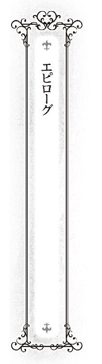
澄んだ青空の下、教会の鐘楼から、祝福の鐘が響き渡る。
今日は国をあげての結婚式が行われる予定だ。
その花婿は、エンデンブルク国王、スレン・エンデンブルクであり、花嫁は、もちろん、異種族の国からやってきた二人の妻達。
グラミエル帝国との和平が成り、そして、財政にも余裕ができたことにより、今まで延期していた結婚式を執り行うことにしたのだ。
城の前では既に人だかりができ、今か今かと花嫁達を待ち構えていた。
その主役たる花嫁達は、城の一室でおめかし中だ。
「......わらわは、神をそれほど信じてはおらぬのじゃがな」
教会の鐘を耳にしたヴィアがそう呟く。
「あら、ヴィアは、神様という便利な発明品を知らないの？」
その横にいる、エユランがチクリと言う。
「わらわは死後の世界まで、贅沢な生活を望むほど傲慢ではないのじゃ。謙虚と言ってくれ」
「......はいはい、動かないでください」
メイドは二人をそう言ってたしなめる。
二人は、純白のドレスを着ていた。ヴィアの言うとおり、エルフと人魚族の結婚式は、独自の様式があり、こんなものは着ないのだが、夫である人間側に合わせたのである。
メイドは並んで立っている二人を、前後左右から見て、離れたり、近づいたりを繰り返し、衣装の微調整をする。
「うん、これで良いでしょう。二人とも、お綺麗ですよ」
二人はそれまでの体の硬直を解くと、鏡の前で軽くポーズをとりながら、自分の姿を確かめる。
夫の家から借りた純白のドレスに身を包み、頭にはベールを被る。手には手袋をはめ、全身を白一色で包み込んだ姿は、まるで咲き誇る可憐な白百合のよう。
「少し、きついのではないか？」
普段、動きやすい服を着ているヴィアは動きづらそうに体を動かす。
口では、そう言うものの、綺麗な服を着るのは嬉しいらしく、しきりに鏡に映る自分の姿を眺めている。
「人間の風習も、なかなか良いところがありますのね」
エユランも、その硬質の美貌を和らげ、自分の姿に魅入っている。
「ところで、どうして、このドレスなのですの？ いえ、このドレスにケチをつけるつもりでは、ありませんけど、ちゃんと実家から、送られてきましたのに」
ヴィアも同じ気持ちらしく、メイドを見ている。
──それでは、終わらない戦争が起こるからです。
この結婚式で、メイドが一番、気を使っているのが、二人を平等にするということだった。
二人の姫が各自、実家から送ってもらったドレス。
持参金と同様、そこにも異種族間の競争意識が表れており、今、二人が着ているドレスよりも、何倍も金がかかった華美で派手なものだ。
結婚式という人生の晴れ舞台で、そんなものを二人に着させたら、最近はやや沈静化してきたというのに、それは、そのまま二人の競争意識を煽ることになる。
「......ご主人様の趣味です。わたしもエユラン様の言われる通り、その方が良いと思ったのですが、ご主人様は豪華すぎるのが苦手で。まあ、貧乏性だから、仕方ないとあきらめてくださると助かります」
多少、噓を交えながら、メイドはそう言い、事前に争いの芽を摘み取っておいた。
夫という言葉に弱くなっている二人の花嫁もそれで納得してくれた。
「そういえば、フェン」
「なんでしょうか？ ヴィア様」
「その......なんじゃ、わらわ達二人を正室、側室にわけるという話が、あったではないか、あれはどうなったのじゃ？ いや、それで、スレンへの愛情が変わるわけではないのじゃが、気になってのう」
「ああ、そういうこともありましたね」
「それで、結果はどうなったのじゃ？」
聞いてきたヴィアだけでなく、エユランもまた、その長い耳をピンと立て、メイドの次の言葉を待つ。
「期待されているところ悪いのですが、まだ、結論は出ていないですよ。だって、結婚はゴールではなく、始まりですからね」
「......フェン、あなた、私達を謀りましたわね。その理屈だと、一生、結論が出ないのではなくて？ もし、何かあって、妻が一人になったら、そもそも、そんな区別はいらなくなるでしょうし」
「まあ、ご主人様が、同時に、同じくらいの高貴な方と結婚してしまったので、正室側室の区別がつけにくいんですよ」
悪びれずにメイドが言う。
二人の姫は、結論が出ない結果に少々不満そうな顔をしたが、同時にホッとしたような顔をした。
それは、自分が負けていたら、どうしようと思っていたからではない。
今のままの二人で、今のままの関係でいられることに安堵したのだ。本人達は絶対に認めようとはしないだろうけれども。
──国家財政を考えると、もうしばらくは人魚族との取引は必要ですからね、それを断つのは下策。私は大人ですから、まあ、妥協してあげてもよいでしょう。
──まだまだ、エンデンブルクにはエルフ族の力が必要じゃからな。ここで側室になったことに激怒されて、出て行かれたら困るから、まあ、良しとしておいてやろう。
この二人が、互いに素直になるのは、夫に対してと、どちらが先か。
城から少し離れたところにある小高い丘。
普段ならば、人があまり近寄らないこの丘の上に、今日は正装した大勢の人々が集まっていた。
彼らはコの字の形で整列しており、その中央の空いたスペースにはこの日のために祭壇が設けられ、その前で花婿が、参列者達と共に、花嫁の到着を待っていた。
やがて、参列者達の間から、大きな歓声と拍手が湧き起こり始める。
自然と参列者達の列が割れ、そこから花嫁達が祭壇の前へと歩み出る。
「ミリアム、大役ご苦労であった」
城からここに来るまで、後ろで二人の花嫁のベールの垂れ布を持っていた少女の頭をヴィアは撫でる。
ミリアムは未だに緊張している様子であったが、ヴィアに撫でられると、誇らしげな顔をしながら、参列者の列の中に加わった。
「......あなた、何を見ていますの？」
少し不機嫌な声で、エユランが言う。
というのも、夫は花嫁達ではなく、別のものを見ていた。
「......ああ、街を見ていた」
以前、フェンと共に来たこの場所で、あの日と同じように、スレンはエンデンブルクの街を眺めていた。
しかしもう街は、あの日の小さな街ではなかった。
街から伸びる白いタイルが眩しい街道。大型船がひっきりなしに行き交う拡張された港。住民が豊かになった証の、増えてきたレンガ造りの大きな建物。
その変わった区画の一つ一つに、スレンが歩んできた足跡があった。
「確かに、見てしまうのは分かりますわ。あなたが大切になさっている街が、今日は私達を祝福してくれているみたいですもの」
エユランの強張っていた表情が和らぐ。
街の建物の窓からは飾り布が垂れ、建物のとことどころに花が飾られ、お祝いムード一色だ。
「不思議なものですわね。嫁いできたときは、すぐに帰りたいと思っていたはずですのに」
「ああ。いつの間にか、この街での、知り合いも多くなってしまったのじゃ」
フェン。
エミリア。
ルートフィ。
ロバート。
イワーネス。
すっかり顔馴染みとなった面々も式に出席し、三人に温かい眼差しを送っていた。
やがて、式は進行し、恥ずかしながらもはっきりと誓いの言葉を述べた後、誓いのキスとなる。
「え、ええと......」
ちょっぴり、花婿は困った顔をした。
どちらが先にするのか、順番で揉めることになるかと思ったからだ。
しかし──。
「そんな顔をしなくとも、大丈夫じゃ。さすがにこの場で争ったりはせぬ」
「ええ。ちゃんと、ここに来るまでに決めましたから」
そう言い、目配せし合う二人。
「......抜け駆けするでないぞ」
「......あなたこそ」
二人の花嫁は、息もぴったりに両側から花婿をガッチリと包囲すると、その両頰に同時にキスをした。
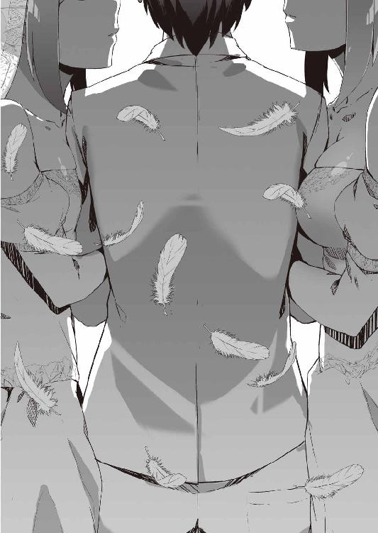
あとがき
どうも、初めまして水城みなもです。
さて突然ですが、皆さんは自分の本のあとがきを妄想したことがあるでしょうか？
私はあります。デビューしたら、あんなことを書きたいこんなことを書きたいという妄想を息抜きに、投稿作家をしていた時期があります。
それを、今回ついにデビューできたということで実行したいと思います。
私があとがきでやりたかったことは何か。
それはキャラに対する作者コメントです。
アレです。売れた作品が出してもらえる、ムック本とか解説本とか付属本とか雑誌の特集記事とか設定資料集によっては書いてあるヤツです。
では、早速、実験的にやってみましょう。
○スレン：エンデンブルク国王。本作の主人公。ハーレム系の作品を楽しめるか楽しめないかの私の境界線は、こんな主人公ならモテるのは仕方ないと納得できるかできないかなのですが、そこのところを意識して頑張ってみました。普段はちょっと頼りないですが、ちゃんと締めるところは締めるという、主人公らしい活躍をしてくれました。
○フェン：メイドさん。超人キャラというのはもとからあったのですが、さらにボケもツッコミも、ＭＣもガヤもできるなどの万能ぶり。話の進行に困った時には、彼女に話を振れば、なんとかしてくれて、だいぶ助かりました。それをこれまでの読み手の方も感じたのか、この本を読んだ方がまず褒めてくれるのが彼女でした。
○エユラン：エルフの姫。気難しい方で、なかなか彼女の書き方が摑めなかったのですが、書いていくうちにだんだんと自分のモノにできていった印象で、書いていて楽しかったです。そのせいか、設定当初は深窓のツンデレという感じで静のキャラだったのが、いつの間にか動のキャラに。書いていてびっくりしました。
○ヴィア：人魚の姫。昔、書いた小説から転用という付き合いの長いヒロインです。海賊要素、人魚要素などは、その時から。そのため、書き慣れた部分があったのか、担当さんに『ヴィアの方が好きなんですか？』と言われたことがありました。この小説で描きたかったものとして、このヴィアとエユランの独特な友情、そして二人は実は似た者同士というのがあったのですが、それが上手く表現できていると幸いです。
......どうだったでしょうか？ 好評なら、もう一度やるかもです。
また、彼女達に興味が湧いたという立ち読み中の方は、是非ともレジに持っていってください。続刊が出て、彼女達にまた会える確率が高まります。
あと、本文中には鹿肉を生で食すシーンがありますが、肝炎に感染するなどの危険があるため絶対にマネをしないでください。
では、最後に謝辞を──。
イラストのやすも様。彼女達をヴィジュアル化していただき、ありがとうございました。ツイッターの方を拝見しました。人間ドックのくだり、興味深く読ませていただきました。
川﨑編集長様。初めてお会いした際に、作品展開に対するアドバイスをいただき、ありがとうございました。
担当の儀部様。色々と助言、ありがとうございました。
同期の柏木様、仁科様、黒峰様。先日のパーティでは、どうもお世話になりました。
この作品が店頭に陳列されるまで関わってくださった全ての皆様。その労力に合う分、売れるようにこれからも精進していきたいと思います。ありがとうございました。
そして、ここまで読んでくれた読者の皆様。ありがとうございました。
ではでは。
この作品は第17回エンターブレインえんため大賞ファミ通文庫ライトノベル部門、優秀賞受賞作品『エンデンブルクの花嫁』を改稿したものです。
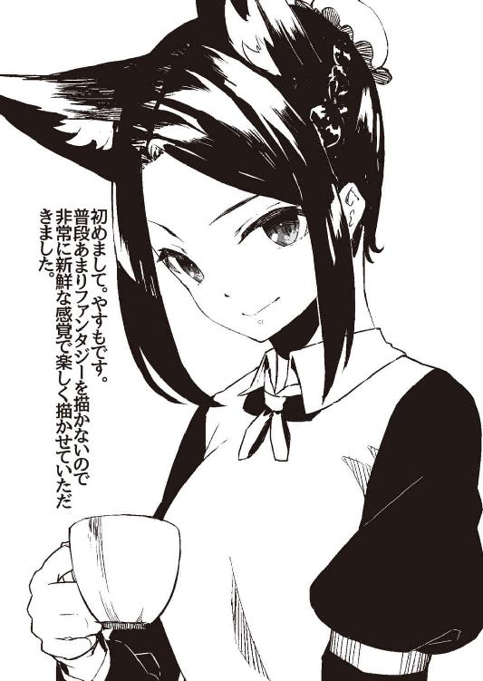
著者
水城みなも
Minamo Mizuki
幼少期より北は青森八戸から、南は沖縄那覇まで各地を転々。『エンデンブルクの花嫁』にて第17回えんため大賞優秀賞を受賞。せめて、いただいた賞金分ぐらいは恩返しできるように頑張っていきたいと思います。
イラスト
やすも
Yasumo
柔らかな光と影を駆使し、少女たちの一瞬の情景を描き出す新進気鋭のイラストレーター。
http://yasumo01.tumblr.com/
イラスト／やすも
デザイン／株式会社ビィピィ
エンデンブルクの花嫁
水城みなも
2016年3月30日 発行
Minamo Mizuki 2016
本電子書籍は下記にもとづいて制作しました
ファミ通文庫『エンデンブルクの花嫁』
2016年4月11日初版発行
発行者 三坂泰二
発 行 株式会社ＫＡＤＯＫＡＷＡ
〒102-8177 東京都千代田区富士見2-13-3
0570-060-555（ナビダイヤル）
受付時間 12:00～17:00（土日 祝日 年末年始を除く）
編集企画 ファミ通文庫編集部
http://www.kadokawa.co.jp/